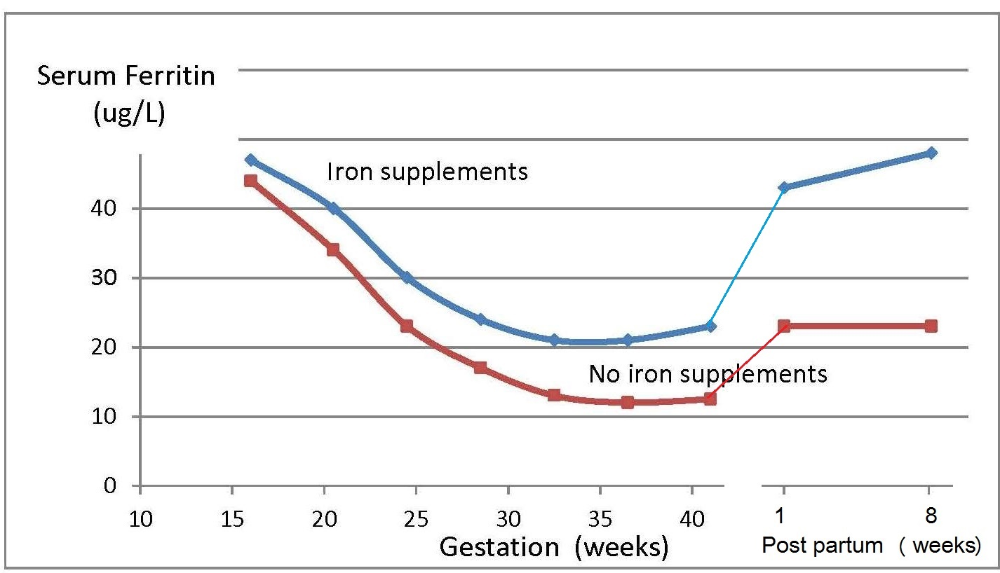

Gibson RS1,
& Friel JK
Principles of Nutritional Assessment: Iron
3rd Edition April 2024
Abstract
Dietary iron is present as heme and nonheme iron,
each absorbed by different mechanisms. Once absorbed,
the iron released can be stored or bound to plasma transferrin
for distribution to other tissues. Quantitatively,
most iron is used by immature red blood cells
in the bone marrow for hemoglobin (Hb) production.
Senescent erythrocytes are degraded by
macrophages, and the iron released from
catabolized Hb re-enters the circulation. Absorption
of iron is modulated in response to the level of body
iron stores and by the amount of iron needed for erythropoiesis.
Hepatic hepcidin is the master regulator of iron homeostasis.
Hepcidin levels are suppressed by iron depletion
or increased iron demand (i.e., enhanced erythropoiesis),
thereby increasing absorption and
mobilization of iron from body stores into plasma. In contrast, when iron stores
are replete (and during inflammation),
hepcidin levels are increased, so iron cannot efflux
into the circulation, thus preventing iron overload.
Anemia is the most common sign of iron deficiency
in low- and middle-income countries, with
with infants, young children, and women of child-bearing age
at greatest risk. Features of iron deficiency anemia (IDA)
include impairments in work capacity and cognition,
and possibly risk during pregnancy of low birthweight and
prematurity.
Despite low specificity and sensitivity,
a low Hb concentration is the most widely used
test for IDA.
Development of IDA
occurs in three stages, the first being a decrease in iron stores,
reflected by a low serum ferritin, followed by iron-deficient erythropoiesis.
At this stage, iron stores are exhausted
(i.e., serum ferritin < 12µg/L), iron
supply to the erythropoietic cells is progressively
reduced, and decreases in transferrin saturation
occur. At the same time, serum soluble transferrin
receptor (sTfR) and erythrocyte protoporphyrin
increase. Only in the third stage is there a decline in Hb,
decreases in hematocrit and red-cell indices, and
frank microcytic, hypochromic anemia,
confirmed by examination of a stained blood film.
This chapter describes how to assess the
adequacy of dietary iron intakes, followed by details of the
hematological parameters used to diagnose anemia,
the serum biomarkers to identify iron depletion (serum ferritin),
and iron deficient erythropoiesis (serum ferritin;
serum iron; transferrin saturation; sTfR;
and erythrocyte protoporphyrin).
Advantages and limitations are discussed together with
details of the measurement and interpretive criteria for
each biomarker. Use of a regression modeling approach
to adjust for the effect of inflammation on
serum ferritin and sTfR is highlighted, in view of the
challenge of distinguishing between IDA and
anemia of chronic disease. The final section
emphasizes the simultaneous use of multiple
iron biomarkers to provide a more valid
assessment of iron status and minimize
misclassification that may occur when using a single measure.
The advantages of using the “Total Body Iron Model”
based on serum ferritin and sTfR expressed as body iron (mg/kg),
with a cutoff of < 0mg/kg to define iron deficiency, is described.
Finally, details of emerging iron indicators,
notably hepcidin, non-transferrin-bound iron,
and some reticulocyte indices, are presented.
CITE AS:
Gibson RS, and Friel JK. Principles of Nutritional Assessment: Iron.
https://nutritionalassessment.org/iron/
Email: rosalind.gibson@otago.ac.nz
Licensed under CC-BY-4.0
17.1 Introduction and functions of iron
The assessment of the iron status of the population is
critical: iron deficiency is a widely recognized
micronutrient deficiency, and a public health problem worldwide.
The iron content of the human body is carefully regulated,
normally containing about 3 to 4g of iron. Of
this, about 65% is present in hemoglobin (Hb), the
oxygen-carrying pigment of the red blood cells, that plays a critical
role in transferring oxygen from lung to tissues.
Hemoglobin is made up of four heme subunits, each with a
polypeptide chain of globin attached. Each molecule of
heme consists of a protoporphyrin IX molecule with one
iron atom. In addition, about 3.5% of body iron is present
in myoglobin, the oxygen-binding storage protein found in
muscle. The structure of myoglobin is similar to
Hb, except that it contains only one heme unit
and one globin chain.
17.1.1 Distribution of body iron in men and women
Table 17.1
shows the amount of iron and its distribution
in the body in males and females.
Trace amounts of iron are also associated with electron
transport and several enzymes. Examples include the
heme-containing cytochromes that serve as electron
carriers within the cell, iron-sulfur proteins (flavoproteins,
heme-flavoproteins) that are required for the first reaction
in the electron transport chain, and hydrogen peroxidases
(e.g., catalase and peroxidase).
Table 17.1. Distribution of body iron in men and women. Data from Elsayed et al.
(2016).
Amount of Iron
Male (mg)
Female (mg)
% of Total
Total
3000‑4000
2000‑3000
100
Hemoglobin
2400
1700
65
Intracellular storage (ferritin and hemosiderin)
1000
500
30
Myoglobin
150
120
3.5
Transferrin- bound iron
4
3
0.1
The cytochrome-P450
family of enzymes also contain heme and are located in
microsomal membranes of liver cells and intestinal
mucosal cells. Key functions of cytochrome-P450 involve
detoxification of foreign substances in the liver, and
synthesis of prostaglandins, steroid hormones, and bile
acids
(Yip and Dallman, 1996;Beard et al., 1996).
In addition to these functional forms, as much as 30% of
total body iron is present as storage iron, found primarily
in the liver. Smaller amounts occur in the
reticulo-endothelial cells of the bone marrow and spleen; and in
the muscle tissues. Of the storage iron, approximately
two-thirds consists of ferritin, the soluble fraction of the
nonheme iron stores. The remainder of storage iron is
insoluble hemosiderin. Small quantities of ferritin can be
synthesized in all cells of the body, even those with no
special iron storage function. Ferritin also appears in small
concentrations in the serum but is not involved in iron
transport. In healthy
individuals with no evidence of inflammation,
serum ferritin concentration is closely
correlated with the size of the iron store
(Yip and Dallman, 1996).
Stored iron serves as a reservoir to supply cellular needs,
mainly Hb production, and is especially important
in the third trimester of pregnancy. The size of the storage
component is most strongly influenced by age, sex, body
size, and either the magnitude of iron losses or the
presence of diseases of iron overload
(Brittenham et al., 1981).
Iron transport is carried out by the transport protein
transferrin, which comprises only about 0.1% of total
body iron (Table 17.1).
Transferrin delivers iron to the
tissues by means of cell membrane receptors specific for
transferrin (i.e., sTfR1 and sTfR2). About
20‑30mg of iron
cycles through the transport component each day.
17.1.2 Absorption and metabolism of iron
Four main factors in the body operate to maintain iron
balance and prevent iron deficiency and iron overload.
These are: (a) intake, (b) absorption (c) storage, and (d) loss of iron. The
interrelationship of these factors has now been described
mathematically, so that the amount of storage iron can be
predicted as long as iron losses and bioavailability of iron
are known
(Hallberg et al., 1998).
In an iron-sufficient adult male, absorption of iron from
the diet only contributes about 1mg/d, while for
menstruating women, about 1.5mg/d is absorbed to
compensate for menstrual blood loss. There are two
different forms of iron in the diet, heme and nonheme,
each absorbed primarily in the duodenum. Heme iron is derived mainly from Hb
and myoglobin in red meat, poultry, and fish and is
absorbed readily as the intact iron porphyrin. Absorption
of heme iron ranges from 15‑35% and is little
affected by dietary factors; absorption is regulated primarily in response
to total body iron. As demand for body iron increases
there is a corresponding upregulation in the uptake of
heme iron and also in the rate of transfer to the duodenal
enterocytes. Details of the exact mechanism controlling
heme iron absorption are poorly understood
(Anderson and Frazer, 2017).
However, once absorbed, iron (Fe2+) is
released from heme iron by heme oxygenase, after which
the iron follows the same pathway as nonheme iron, as described below
(EFSA, 2015).
Nonheme iron (i.e., inorganic iron) is found primarily in
plant-based foods, but also in meat, eggs, and some dairy foods. Liver,
iron-fortified foods, and the seeds of legumes, such as beans, contain
nonheme ion in the form of ferritin, although the
mechanism whereby ferritin iron is absorbed is poorly understood
(EFSA, 2015).
Plant ferritin is readily released during cooking and digestion
(Lynch et al., 2018).
The absorption of nonheme iron is less efficient than heme
iron and can range from 2‑20%, depending on the iron
status of the individual and the simultaneous ingestion of
other dietary components; some inhibit and others
enhance nonheme iron absorption. Most of the food
components classed as inhibitors generally act by binding
iron in the gastrointestinal tract, preventing its absorption.
In contrast, the enhancers act by forming complexes that
can be taken up by the intestinal iron transport proteins,
thus preventing the iron from binding to the inhibitors.
Alternatively, they act by reducing the reactive ferric
(Fe3+) iron to its less reactive
and more soluble ferrous (Fe2+) state.
Inhibitors of nonheme iron absorption include phytic acid,
polyphenols, calcium, and peptides from partially digested
proteins (e.g., soybean protein). Of these, phytic acid
(myoinositol hexa-phosphate, IP6) is the main inhibitor of
nonheme iron absorption from plant-based diets.
However, traditional food processing methods such as
soaking, germination, and fermentation can lower the
phytic acid content, either by reducing the water-soluble phytate content,
or by phytase hydrolysis converting the phytic acid to lower myo-inositol phosphate
forms that no longer inhibit nonheme iron absorption (i.e., IP2; IP1)
(Gibson et al., 2018).
Polyphenol compounds from beverages such as tea, coffee, cocoa, and red wine,
vegetables (spinach, aubergine), legumes (colored beans),
and cereals such as red sorghum, also inhibit nonheme iron
absorption. Their inhibitory effect is dose-dependent, the
strength depending on the structure of the phenolic
compounds, with the gallate-containing tea polyphenols
having the largest inhibitory effect
(Hurrell et al., 1999).
Calcium inhibits both nonheme and heme iron absorption,
although the inhibitory effect is weak and short-term, with
a mixed effect on iron status and no reduction in Hb
(Abioye et al., 2021).
The mechanism is not well understood
(Lynch et al., 2018).
In contrast, ascorbic acid and muscle tissue from meat,
poultry, fish and liver, enhance nonheme iron absorption
when eaten in meals containing inhibitors
(Lynch et al., 2018).
Of these, ascorbic acid is the most potent enhancer
of nonheme iron absorption
through its ability to convert ferric (Fe3+) iron to ferrous
(Fe2+) iron at low pH as well as its chelating properties
(Conrad and Scade, 1968).
The enhancing effect of ascorbic acid is dose-dependent and most marked when
consumed with meals containing high levels of inhibitors,
including phytate and polyphenols. Ascorbic acid can also
enhance absorption of many iron fortification compounds
(Hurrell et al., 2004),
except NaFeEDTA
(Troesch et al., 2009).
The mechanism whereby muscle tissue enhances
nonheme iron absorption is not clear. It may be linked to
cysteine-containing peptides released during digestion,
which have the potential to reduce ferric (Fe3+) iron to
ferrous (Fe2+) iron and chelate iron as described for ascorbic acid
(Taylor et al., 1986).
The intestinal absorption of nonheme iron has been
extensively studied; for details see Anderson and Frazer
(2017).
Briefly, the nonheme iron in foods that exists
predominantly as ferric (Fe3+) iron is solubilized in the
gastrointestinal lumen, where first it is reduced by
duodenal cytochrome b reductase (DCYTB) to ferrous iron
(Fe2+) before being transported by the iron-import protein
divalent metal-ion transporter 1 (DMT1) into the
enterocytes of the small intestine.
When demand for iron is low, the iron can be
stored within the cell as the iron storage protein ferritin.
When the demand for body iron is high, iron is either
taken up by mitochondria for the synthesis of heme, or
exported into the circulation by the iron export protein
ferroportin 1 (FPN1). To leave the cell and bind to plasma
transferrin, however, Fe2+ must
be oxidized back to Fe3+.
This oxidation is catalyzed by a membrane-bound
ferroxidase hephaestin. Transferrin-bound iron is then
distributed via the circulation throughout the body to sites of utilization
(Figure 17.1).
Figure 17.1. Body iron homeostasis. Dietary iron is present as both
heme and nonheme iron. The mechanisms underlying heme absorption
are poorly understood. Dietary
non-heme iron is first reduced to the
ferrous form by DCYTB and then it is transported by DMT1 into
the small intestinal enterocytes.
When demand for iron is low, iron is stored as ferritin, mainly
in the liver whereas
when demand is high, iron is exported
into the plasma by FPN1
where it is transported bound to transferrin, and delivered to the
target tissues: bone marrow, liver, and other
tissues, such as muscle. Quantitatively,
most iron is used by immature red blood cells in
the bone marrow
for Hb production in red
blood cells. Senescent erythrocytes are
phagocytosed by macrophages, and the iron is
released from catabolized Hb and re-enters the plasma.
Hepcidin plays a
critical role in regulating whole body iron levels
and is regulated by body iron demand.
DCYTB, duodenal cytochrome b;
DMT1, divalent metal-ion transporter 1;
FPN1, ferroportin1;
diferric Tf, diferric transferrin.
Modified from Anderson and Fraser
(2017)
and Kondaiah et al.
(2019).
Most of the iron is used by immature red blood cells in the bone marrow for
Hb production.
Cells can take up iron in a variety of forms. All nucleated
cells are capable of using transferrin-bound iron, although
some cell types can take up iron in other forms, including
non-transferrin-bound iron, or iron present within ferritin,
heme, or Hb. Uptake and storage of iron in cells is
tightly controlled by iron regulatory proteins. These
ensure the iron supply to the cell is maximized when the
cell has an iron deficit. Alternatively, when the cell is iron
replete, the supply of iron to the cell is restricted and
storage promoted. For more details of the regulation of
iron homeostasis at the cellular level, see Anderson and Fraser
(2017).
Whole-body iron levels are also strictly regulated. This
regulation is mediated by the liver-derived peptide
hepcidin which is responsible in part for the control of
dietary iron absorption as well as the export of iron from
body stores. When iron stores are low or iron utilization
such as erythropoiesis is increased, and when plasma
transferrin concentration is reduced, hepcidin production
is suppressed, stimulating absorption and delivery of iron
to the plasma from storage sites. As a consequence, more
iron enters the circulation. In contrast, when hepatic
storage iron and circulating transferrin concentrations are
high, the production of hepcidin is increased, thereby
reducing intestinal iron absorption and inhibiting the
release of iron from body stores
(Figure 17.1,
Anderson and Frazer, 2017).
Hepcidin production is also stimulated by
cytokines such as interleukins 1 and 6 induced by
inflammation (see “Acute and chronic inflammation” in
Section 17.7.1 for more details).
The primary storage sites for iron are the cells of the liver,
spleen, and bone marrow. Iron is stored
in the form of the soluble protein complex ferritin, or
insoluble hemosiderin, as noted earlier. Iron from both forms of storage
iron can be mobilized efficiently when required elsewhere in the body
(Anderson and Frazer, 2017).
The amount of iron in the stores varies widely, depending on iron status
and sex. When the iron supply exceeds the cell’s functional
needs, ferritin production in the liver is increased, whereas
when the supply is insufficient, iron bound to ferritin will
be mobilized from the liver store.
Unlike many other micronutrients, there are no active
pathways for excreting iron. Instead, mechanisms exist to
maintain both cellular and whole-body iron levels within
the optimal physiologic range, as noted above. Total daily
iron losses are small and occur mainly in the feces
(0.6mg/d), although very small amounts are also lost in
desquamated skin cells and sweat (0.2‑0.3mg/d), and in
urine (< 1mg/d). Most of the iron excreted in the feces is
from unabsorbed dietary iron, although a small amount is
systemic iron derived primarily from biliary secretions.
Total daily iron losses are larger (≈ 1.3mg/d) in
premenopausal women, because of the additional loss of
iron in menstrual blood. On average, menstrual blood loss
is 30‑40mL per
cycle or 0.4‑0.5mg iron per day,
although in some women it is much greater
(Yip and Dallman, 1996).
Most of the heme iron in erythrocytes is recycled for
Hb synthesis at the end of the erythrocyte's functional
lifetime (on average 120d). At this time, the
erythrocytes are phagocytosed by specialized
macrophages in the spleen, liver, and bone marrow. The
heme iron is released from catabolized Hb and is
either returned to the plasma via ferroportin where it is
bound to transferrin, or it is incorporated into ferritin for
temporary storage, depending on the iron status of the
individual. Smaller quantities of iron are exported by other
cells, particularly hepatocytes. This process is termed “iron
turnover”; each day 25mg systemic iron is recycled,
representing 0.66% of the total iron content of the body.
17.1.3 Micronutrient interactions with the potential to affect
iron absorption and/or metabolism
Deficiencies of iron, vitamin A, iodine, and zinc are major
public health problems in low-income countries. They
often occur concurrently, especially among infants, young
children, and women
of reproductive age living in impoverished settings.
These high-risk groups all have high micronutrient
requirements, but frequently low intakes of poorly
bioavailable micronutrients. Interactions have been
described between these micronutrients, although the
mechanisms are not always fully understood.
Iron-vitamin A interactions. Vitamin A may affect several
stages of iron metabolism, including erythropoiesis,
incorporation of iron into Hb, and the
mobilization of iron from ferritin stores
(Zimmermann et al., 2006).
Vitamin A is also said to affect iron absorption, but
whether the effect is determined by vitamin A and/or iron
status is uncertain
(Hurrell and Egli, 2010).
Reports of a positive impact of vitamin A on Hb and some iron
status indices have been observed in several vitamin A
supplementation / fortification trials
(Michelazzo et al., 2013),
although the precise mechanism remains uncertain.
Based on these reports, vitamin A deficiency is now
recognized as a contributor to anemia, especially in
children
(Calis et al., 2008).
Iron-iodine interactions. Numerous animal studies
indicate that iron deficiency with or without anemia
impairs thyroid metabolism
(Hess et al., 2002).
An iron-dependent enzyme, thyroperoxidase, acts by catalyzing
the two initial steps in thyroid hormone synthesis
(Hess et al., 2002).
Iron deficiency may also reduce thyroid
hormone synthesis by inducing alterations in the thyroid
hormone feedback system
(Lynch et al., 2018).
In intervention studies in Morocco and the Ivory Coast,
administration of both iron and iodine to iron-deficient
goitrous children decreased goiter rates more effectively
than did the administration of
iodine alone
(Zimmerman, 2002).
Iron-zinc interactions. Iron and zinc appear to compete for
absorption, possibly via the shared divalent metal
transporter 1 (DMT1) and/or via transporters in the apical
membrane of small intestine enterocytes; the mechanism
remains uncertain
(Kondaiah et al., 2019).
This inhibitory effect only occurs when therapeutic doses (2‑3‑fold molar
excess or higher, iron relative to zinc) are given to humans
in aqueous solutions but not in a complex food matrix
(Olivares et al., 2012).
To date there is no evidence that this
interaction is associated with any clinically significant adverse effects
(Fischer-Walker et al., 2005;Lim et al., 2013),
obviating concerns regarding the use of both iron and
zinc supplements in public health programs. For a
comprehensive review of the possible mechanisms for this
iron-zinc interaction, see Kondaiah et al.
(2019).Iron-cadmium and iron-lead. Iron deficiency is a risk
factor for increased concentrations of cadmium and lead
in the blood. For cadmium, this is likely due to increased
absorption arising from the elevated levels of
divalent metal transporter 1 (DMT) that occur in iron
deficiency, but for lead, the mechanism is uncertain
(EFSA, 2015).
17.1.4 Deficiency of iron in humans
Iron deficiency may arise from inadequate intakes of
dietary iron, poor absorption, excessive iron losses, or a
combination of these factors. Individuals at greatest risk
for iron deficiency include those with high iron
requirements for growth (i.e., infants, children and
pregnant women), and women of child bearing age with
high menstrual losses. Several risk factors have been
identified. In industrialized countries, prematurity
or low-birthweight, the use of a non-iron-fortified formula, the
introduction in young children to cow's milk in the first year of life, and
exclusive breastfeeding after 6mos without the regular feeding of iron
fortified complementary foods, are all frequently
observed causal factors. Among pregnant
women, diets low in iron-rich foods, a short
interpregnancy interval, and increasingly, obesity, are implicated
(Kemper et al., 2017).
Additional contributing factors associated with an
increased risk of non-anemic iron deficiency among women
of child-bearing age with high menstrual losses may
include low intake of flesh foods, recent blood
donations, nose bleeds, and low body mass index
(Heath et al., 2001).
In some impoverished settings, additional factors causing iron
deficiency may include: bleeding arising
from exposure to parasitic helminths (e.g., hookworm) or
schistosomiasis, impaired absorption from
infection / inflammation or possibly chronic Helicobacter
pylori gastritis. In rare cases, genetic disturbances in iron
homeostasis arising from genetic mutations, such as in the
TMPRSS6 gene, may result in iron-refractory iron deficiency
anemia (i.e., iron deficiency that is resistant to oral iron therapy)
(Lynch et al., 2018).
Anemia is the most common symptom of iron deficiency.
In the past, angular stomatitis, glossitis, sideropenic
dysphagia, and koilonychia (spoon nails) were also
considered physical manifestations of iron deficiency,
although rarely observed today.
Table 17.2. Functional consequences of iron deficiency.
Data from Lynch
(2011).
Consequences
Pregnancy
Increased risk of anemia and maternal morbidity
Increased risk of prematurity and lower birth weight
Higher infant mortality
Infants and young children
Motor and cognitive developmental delays in infancy
Effects on emotional maturation
Poorer academic achievement in school-age children
who were iron deficient in early childhood
Increased risk of severe morbidity from malaria in
children < 5y
Increased prevalence and duration of upper respiratory
tract infections in children
All ages
Impaired physical performance and earning capacity
Suboptimal response to iodine in populations with
endemic goiter and increased risk of impaired
thyroid
function in the presence of iodine deficiency
Increased risk of chronic lead poisoning in high-lead
environments
Increased risk of “restless leg syndrome”
These conditions probably resulted from the
presence of iron deficiency along with
other nutritional or environmental problems.
Behavioral disturbances are still considered symptoms of iron
deficiency and may include pica, characterized by the abnormal
consumption of nonfood items such as dirt (geophagia)
and ice (pagophagia), and restless leg syndrome, a
condition of uncontrollable,
uncomfortable leg movement during sleep.
Table 17.2
summarizes the main functional
consequences of iron deficiency during the life cycle.
Some of the less-specific physiological manifestations
associated with the functional consequences of iron
deficiency include fatigue, anorexia, tiredness, shortness
of breath, and impaired physical performance. These are
all symptoms that result from the
diminished oxygen-carrying capacity of the blood. The effects of iron
deficiency on impaired physical performance, notably
exercise or work capacity, have been extensively reviewed by Haas and Brownlie
(2001)
and McClung and Murray-Kolb
(2013).
Based on their reviews of both animal and
human studies, a profound negative effect of iron
deficiency anemia on work capacity was reported;
whether a comparable effect is apparent in the absence of
anemia is less certain.
Numerous human studies have also investigated the
association between iron deficiency and cognitive
function. Interpretation of these data are difficult because
neither iron deficiency nor the assessment of cognitive
function outcomes have been adequately characterized in
some of the studies. In a systematic review by Hermoso et al.
(2011)
in which only randomized controlled trials with
an adequate control group were included (n=14), a modest positive
effect of iron supplementation on cognition and
psychomotor outcomes was reported in anemic infants
and children following supplementation with iron for at least 2mos.
Nevertheless, iron is known to be essential for the normal
development and function of the brain. Animal research
indicates that changes in neurotransmitter homeostasis
and decreases in basal ganglia are all caused by iron
deficiency. Hence, early identification and treatment of
iron deficiency-induced brain dysfunction appears to be
critical to recover neural function and thus prevent any
long-term effects on brain development. However,
such effects will depend on timing and the degree of iron
deficiency. Long-term effects are most likely if the
deficiency occurs during a time period when the need for
iron for neurodevelopment is high
(Prado and Dewey, 2014).
Numerous studies have investigated associations between
maternal iron deficiency anemia or iron deficiency
(without anemia) and risk of functional adverse pregnancy
outcomes such as prematurity and low birthweight, and
maternal and neonatal mortality. Most have been based
on comparisons between the effects of daily oral
supplements containing iron (usually with folic acid) versus
no iron or placebo during pregnancy. Despite reducing the
risk of maternal anemia and iron deficiency, the effects of
iron supplementation during pregnancy on functional
maternal and infant outcomes have been inconsistent.
Some studies have shown significant reductions, for
example, in risk of low birth weight
(Imdad and Bhutta, 2012;Dibley et al., 2012),
while in others, the results on maternal and infant outcomes have been less clear
(Peña‑Rosas et al., 2015).
Concern has been raised that some of these
inconsistencies across studies may be linked to the
definition of anemia applied, the timing of exposure, the
pattern of changes in iron biomarkers during pregnancy,
and the definitions of normal or “healthy” reference
ranges for Hb applied for comparison.
In an effort to address at
least some of these concerns, Young et al.
(2019)
examined the associations of maternal Hb concentrations
with a range of maternal and infant health outcomes,
taking into account the timing of the Hb measurement,
etiology of anemia, and Hb cutoff category. Results of their
systematic review and meta-analysis confirmed that
maternal Hb has an important role in relation to several
maternal and child health outcomes; for more specific
details for the outcomes examined, see Young et al.
(2019).
Nevertheless, in the studies included, very few
distinguished between iron deficiency anemia and
non-iron deficiency anemia in relation to maternal and child
functional outcomes.
Table 17.3
Table 17.3.
Meta-analysis summary estimates of association
of IDA and non-IDA with birth outcomes. From Young et al.
(2019)
The number of studies in each category is:
LBW/IDA: n=2; LBW/non-IDA: n=3; SGA/IDA: n=2; SGA/non-IDA:
n=4; PTB/non-IDA: n=4.
Outcome
IDA OR (95% CI)
Non-IDA OR (95% CI)
LBW
1.17 (0.95‑1.43)
1.43 (0.82‑2.50)
SGA
0.77 (0.68‑0.87)
1.20 (0.85‑1.70)
PTB
1.07 (0.68‑1.70)
presents their meta-analysis summary estimates of associations of iron
deficiency anemia (IDA) and non-IDA with birth outcomes:
low birth-weight (LBW), small for gestational age (SGA)
and preterm birth (PTB).
Note that the summary estimates for the association of
low birth-weight with iron deficiency anemia and non‑iron
deficiency anemia were both positive, although not
statistically significant, whereas for preterm birth the
pooled estimate with non‑iron deficient populations was
non-significant, and data insufficient to derive a pooled
estimate for iron deficiency anemia.
The odds of small for gestational age with
iron deficiency were decreased (2 studies)
although there was no significant association between
small for gestational age and non‑iron deficiency
anemia (4 studies).
Given the complexity of the changes in iron homeostasis and
associated iron biomarkers during pregnancy together with the diverse
factors associated with etiology of anemia, research that
includes some of the newer biomarkers such as serum
hepcidin may help to resolve some of the reasons for the
inconsistencies in the results observed.
17.1.5 Food sources and dietary intakes
High-iron foods include liver, kidney, mussels, and red
meat. Foods with a medium iron content include chicken,
processed meat, fish, and legumes (non-heme iron only).
Milk and milk products and many fruits and vegetables are
poor sources of dietary iron
(USDA, 2019).
Flesh foods are especially important because of their high content of
bioavailable heme iron, and their enhancing effect on
nonheme iron absorption
(Hallberg and Rossander, 1984).
Ground water may also be an important source of iron in
some countries. Studies have found positive associations
between consumption of ground water with a high iron
content and biomarkers of iron status and Hb in Bangladesh
(Merrill et al., 2011;Rahman et al., 2016).
In many industrialized countries, cereal products fortified
or enriched with iron, provide the most
dietary iron, followed by meat, poultry, and fish, and then
vegetables and fruits
(Gregory et al., 1990; McLennan and Podger, 1998;Russell et al., 1999).
As an example, based on data from nine European countries, cereal
products contributed more than 20% and up to 49% of the
iron intake in all population groups except infants
(EFSA, 2015).
In the U.S. NHANES III
survey (2003‑2006), about 40%
of the iron in the diets of individuals > 2y was contributed
by foods fortified or enriched with iron
(Fulgoni et al., 2011).
Data on iron intakes are available from several nationally
representative surveys. In the U.S. NHANES III survey
(1988‑1994),
the median usual intakes of iron for adult
women and men were 12mg/d, and 16‑18mg/d, respectively
(IOM, 2001).
For adult Europeans (> 18y),
average intakes ranged between 9.4 and 17.9mg/d
(EFSA, 2015).
In general, average iron intakes of males tend to be
slightly higher than females because males generally
consume larger quantities of food each day
(EFSA, 2015).
The bioavailability of iron from mixed Western-style
diets (for individuals with no iron stores) is estimated to
range from 14‑18%, provided the diets contain ample
quantities of flesh foods and ascorbic acid. In low-income
countries, however, dietary iron absorption is often probably
only about 5‑12% for individuals with no iron stores
because in these plant-based diets the proportion of heme iron is low, while
the content of absorption inhibitors is often significant
(WHO/FAO, 2005).
The rise in the variety of food products fortified with iron
has prompted research on the properties of iron
fortificants. Factors affecting their choice include
absorbability (i.e., the highest relative bioavailability (RBV)
compared with ferrous sulfate), absence of unacceptable
changes to the sensory properties (i.e., taste, color,
texture) of the food vehicle, and the cost of the fortificant. The
iron compounds used for fortification or for enrichment
can be divided into three categories — water soluble;
poorly water soluble but soluble in dilute acid; water
insoluble and poorly soluble in dilute acid. Almost all enter
the common nonheme iron pool in the gastrointestinal
tract and are absorbed like native nonheme iron
compounds. The third category, however, — water
insoluble and poorly soluble in dilute acid — do not fully
enter the common nonheme iron pool, and their
absorption is poor.
The compounds currently used as iron fortificants in order
of frequency of use are : (1) ferrous sulfate; (2) ferrous fumarate;
(3) encapsulated ferrous sulfate or encapsulated ferrous
fumarate; (4) electrolytic iron (a pure form of
iron powder with a small particle
size) or ferric pyrophosphate;
(5) sodium-iron-ethylene-diamine-tetra-acetic-acid (NaFeEDTA);
and (6) iron amino acid chelates, particularly iron-glycinate chelates
(Lynch et al., 2018).
The newer iron fortificants
such as NaFeEDTA and ferrous bisglycinate provide better
protection against nonheme iron absorption inhibitors.
Sodium iron EDTA is used in China to fortify wheat
products, whereas ferrous bisglycinate, although
expensive, is especially suited to the fortification of liquid
whole milk and dairy products. For a detailed review of
iron fortificants, see WHO
(2006).
17.1.6 Effects of high intakes of iron
Cases of acute iron toxicity have been reported, mainly
among children who accidentally ingest medicinal iron
supplements
(IOM, 2001).
More common are adverse
gastrointestinal effects including nausea, vomiting and
diarrhea following the administration of high doses of iron
supplements, especially when they are taken without food
(Brock et al., 1985).
Excessively high intakes of iron
supplements may induce copper deficiency by an
adverse effect on copper absorption, although this effect
may only occur when copper status is low or marginal
(Cohen et al., 1985).
High intakes of iron supplements taken without food may reduce zinc absorption
(Sandström et al., 1985),
but generally not
when iron supplements or iron fortificants, such as
“sprinkles”, are taken with food
(Olivares et al., 2012; Esamai et al., 2014; Davidsson et al., 1995),
as noted earlier. In anemic Cambodian women, however, a daily
multi-micronutrient supplement containing 60mg of iron
consumed with food blunted the increase in serum zinc observed among the
women receiving the same supplement without iron; no
data on zinc absorption were collected
(Holmes et al., 2019).
Possible toxic effects of rising iron stores over time have
been implicated in the pathogenesis of several common
diseases of aging. However, evidence for a causal relationship
in the general population between the
level of dietary iron intake or body iron content and risk
for cancer
(Turner and Lloyd, 2017)
and coronary heart disease
(Hunnicutt and Xun, 2014)
remains inconclusive. Moreover, there is no evidence that dietary iron is
associated with arthritis, diabetes mellitus, or neurodegenerative disease
(EFSA, 2015).
Certain genetic mutations can cause iron overload. One of
the most well-known examples is hereditary
hemochromatosis arising from a mutation in HFE gene
that results in a reduced or negligible expression of
hepcidin. This results in an inability to limit absorption of
dietary iron, so iron accumulates in many organs.
Hemochromatosis is relatively common in Northern
European populations
(Beutler et al., 2002);
heterozygotes for the mutation associated with hemochromatosis,
however, do not appear to be at an increased risk of iron overload.
Iron overload has also
been associated with other genetic defects such as
atransferrinemia, aceruloplasminemia, and Friedreich
ataxia. African iron overload, previously termed “Bantu
cirrhosis”, is also thought to have a genetic component in
addition to the excessive intakes of iron from food and
beer prepared in iron utensils
(EFSA, 2015).
Iron overload may also result from the multiple blood transfusions used to
treat certain inherited disorders such as iron-loading
anemia (e.g., β‑thalassemia). In most iron overload
syndromes, iron is sequestered in ferritin and hemosiderin
in all tissues throughout the body.
Concern has been raised that supplementation of iron
given in non-physiological amounts can increase the risk of
bacterial and protozoal infections (see “malaria” in
Section 17.11.1
for more details). As approximately 40% of the
population in the world is exposed to malaria and it is
endemic in over 100 countries, resolving this concern is
essential. Neuberger et al.
(2016)
reviewed the available
evidence based on a meta-analysis of 35 randomized
controlled trials (31,955 children). They concluded that oral
iron supplementation does not increase the risk of clinical
malaria provided regular malaria prevention or
management services are provided. Therefore, in
resource-poor settings, routine iron supplementation can be given to
children without screening for anemia or for iron deficiency
provided regular malaria surveillance and treatment
services are provided. However, such services for malaria
are not always available in low-income countries. For a
review of the safety and benefits of iron supplements for
pregnant women in low-income countries, consult
Mwangi et al.
(2017).
Recommendations by the
World Health Organization (WHO) on the prevention and
control of iron deficiency in infants and young children in
malaria-endemic areas are available
(WHO, 2007).
Instead of using iron supplements, a safer strategy for
improving iron status may be the use of lower quantities
of iron provided within a food matrix (i.e., fortified food);
see Prentice et al.
(2017)
for more details.
The U.S. Food and Nutrition Board has set the Tolerable
Upper Intake Level (UL) based on the gastrointestinal side
effects associated with high levels of iron consumed on an
empty stomach. The UL for iron for adults, including
pregnant and lactating women ≥ 19y is 45mg/d, whereas
the level for infants and
children 1‑18y is 40mg/d
(IOM, 2001).
No UL has been set for iron by the European Food Safety Authority — EFSA
(2006;2015)
or by WHO/FAO
(2005).
17.1.7 Biomarkers of exposure
To estimate exposure to the intake of dietary iron,
conventional dietary assessment methods must be used.
The method selected depends on several factors, including
the study objective, the setting, and available resources;
for more details, see Chapter 3. Estimates of habitual usual
iron intakes are needed in view of the length of time
required by iron status biomarkers to reach a steady state
in response to changes in dietary intakes. Usual iron
intakes are also essential to estimate the prevalence of
inadequate intakes for population groups and for the
investigation of associations between dietary intakes and
health outcomes. Details of the statistical adjustments for
converting observed iron intakes to usual iron intakes can also be
found in Chapter 3. Alternatively, for large-scale
population studies, a food frequency questionnaire (FFQ)
that is designed to assess intakes of iron-rich foods and
iron-absorption modifiers over a longer time period may be used,
provided the FFQ has been validated for the study setting
(see Chapter 3, Section 3.1.6).
As noted earlier, inadequate intakes of poorly available
dietary iron are a major concern in the plant-based diets of
many low-income countries. Bioavailability is defined as
the extent to which the iron is absorbed from the diet and
used for normal bodily functions
(Lynch et al., 2018).
Several algorithms have been developed to predict the
bioavailability of iron based on dietary data that include
the form of the iron (i.e., heme or nonheme) and the
content of known absorption modifiers in a meal. Of the
algorithms available, the model of Hallberg and Hulthén
(2000)
is the most detailed, taking into account the effects
of all known modifiers of nonheme iron absorption as well
as interactions, with adjustments for the iron status of the
individual. However, as with all the other algorithms
developed, the model of Hallberg and Hulthén only
predicts nonheme iron absorption so assumptions about
the intake and absorption of heme iron must be made.
Furthermore, the model is difficult to apply, in part
because of incomplete food composition data for the
absorption modifiers. Indeed, all algorithms have
limitations and often underestimate bioavailability, with a
3-fold variation in estimates when using different
algorithms
(Beard et al., 2007).
In view of the limitations of the algorithms to estimate
iron bioavailability, FAO/WHO
(2002)
have developed a
qualitative approach to estimate iron absorption based on
data on iron absorption from typical meals in Asia, India,
Latin America, and Western countries. Applying the
FAO/WHO approach, diets can be categorized as having a
low, intermediate, or high bioavailability based on the
major food sources of iron, as shown in Box 17.1. The
estimates of absorption given
in Box 17.1 refer to
nonanemic persons with normal iron transport (i.e., with
normal Hb) with no iron stores. When individuals
have iron deficiency anemia,
absorption may be increased by 50% (i.e., increasing to
percentages of 7.5, 15, and 22.5, respectively,
for the low-, intermediate-, and
high-bioavailability diets). Note that for Western-type diets, FAO
and WHO now propose two categories of bioavailability — 12% and
15% — depending on the meat content of
the diet; see Gibson and Ferguson
(2008)
for further details.
Box 17.1. Using the FAO/WHO qualitative approach to
estimate iron bioavailability
Uses the data on major food sources to estimate
iron bioavailability
Low-bioavailability diet
(iron absorption of
about 5%): a simple, monotonous diet containing
cereals, roots, and/or tubers, and negligible
quantities of meat, fish, or ascorbic acid-rich foods;
Intermediate-bioavailability diet (iron absorption
of about 10 percent): consists mainly of cereals,
roots, and/or tubers, and minimal quantities of
food of animal origin and ascorbic acid, both of
which promote iron availability;
High-bioavailability diet (iron absorption of about
12 or 15%): a diversified diet containing
generous quantities of meat, poultry, fish and/or
foods containing high amounts of ascorbic acid.
Recently a new approach to calculate dietary iron
bioavailability has been developed using a probability
model. The approach is based on calculated iron
requirements, data on daily total iron intake, and the
distribution of serum ferritin values in the population
sample; total iron absorption at any level of
iron status can be estimated
(Dainty et al., 2014).
Unlike
the earlier algorithms, this new approach does not require
data on iron absorption modifiers or the heme content of
the diets.
Using the approach described above, data from a
representative group of adults from the U.K.
National Diet and Nutrition Survey were used to estimate
total iron absorption from a mixed Western style diet,
using a target serum ferritin concentration of 30µg/L for
iron storage status. At this level, estimates for the
predicted iron absorption for men and premenopausal
women were 16% and 18%, respectively
(EFSA, 2015).
Note an interactive tool is available
(Fairweather-Tait et al., 2017)
that could be adapted for use in populations
consuming habitual plant-based diets with low-iron
bioavailability, provided the appropriate correction for the
impact of inflammation on serum ferritin concentrations is
performed, when necessary (see “Acute and
chronic inflammation” in
Section 17.7.1 for more details).
Nevertheless, because both the iron requirements and
dietary iron must be in a steady state for at least a year
when applying this approach, it is not suitable for certain
groups such as children, pregnant women, or immediately
after the onset of menopause.
17.1.8 Interpretation of iron intakes
The final stage of the assessment of exposure to the
intake of iron is to evaluate the usual intakes of the population or
an individual in relation to the nutrient reference values
(NRVs); see Chapter 8a for details of the derivation of the
NRVs. To estimate the physiological requirements for iron,
the factorial approach, based on estimates of the quantity
of absorbed iron needed to replace iron losses, is used by
most expert groups, including WHO/FAO
(2005),
IOM
(2001),
and EFSA
(2015).
Next, adjustments are made to
the estimates of physiological requirements to yield a
dietary iron requirement (i.e., Average
Requirement; AR) by taking into account the
bioavailability of iron in the habitual diet. The chosen
bioavailability factors
(see Chapter 8a, Section 8a.8 for more details)
are partly responsible for differences in the dietary iron
requirements (i.e., ARs) across countries. Therefore, care must
be taken to ensure that the dietary iron requirements
chosen for the evaluation of iron intakes are appropriate
for the habitual diet of the population under study.
Some expert groups (e.g.,
IOM, 2001;EFSA, 2015)
apply a
fixed bioavailability factor for iron to estimate the dietary
requirement (AR), even though the efficiency of
absorption may vary with life-stage and health status.
Others, including WHO/FAO
(2005),
do not present average dietary requirements (ARs) for iron, instead
providing only estimates of Recommended Intakes (RIs)
from which the ARs for dietary iron can be derived. These
calculated AR values are available in WHO
(2006)
and are the values that should be used to evaluate the prevalence
of inadequate intakes of population groups in a
low-income setting. In the higher-income countries, however,
the AR values set by IOM
(2001)
or EFSA
(2015)
may be appropriate. The full-probability approach must be
applied to estimate the prevalence of inadequate intake
for iron for certain population subgroups, notably children
(1‑8y), menstruating
adolescents (14‑18y) and adult women,
because their iron requirements
are not symmetrical about the AR. For the details of the
application of the full probability approach both manually
and using appropriate software, see Chapter 8b. For the manual calculation,
the reader is also advised to consult Gibson and Ferguson
(2008).
To estimate iron bioavailability in the diet of an
individual, the qualitative model of FAO/WHO
(2002)
(Box 17.1.) that
takes into account the major food sources of
iron and the presence of potential absorption modifiers
can be used. Alternatively, bioavailability can be calculated
from an appropriate iron algorithm. Inferences can then
be made about the adequacy of the iron intake of the
individual by comparing the difference between the estimate of the
usual iron intake and the corresponding selected values for the AR
and RI, taking the assumed
bioavailability into account. For details on the guidelines
for the qualitative interpretation of individual iron intakes,
see Chapter 8b.
17.1.9 Introduction:
biochemical biomarkers of iron status
In the past, iron deficiency has been assumed to cause 50%
of all cases of anemia worldwide. The proportion is now thought to be
much lower. In a systematic review, Petry et al.
(2016)
estimated that only 25% of the anemia in pre-school children,
and 39% in non-pregnant women of reproductive age, is
attributable to iron deficiency.
In their review, unlike in many earlier studies,
the probable exposure of a country to infection and chronic
inflammatory conditions was taken into account.
Their findings highlighted the challenge of distinguishing between anemia
due to iron deficiency and that due to inflammation (i.e.,
anemia of chronic disease). This is a concern in
low-income countries and in the
elderly who are also at high risk for inflammation
(see “Acute and chronic inflammation” in
Section 17.7.1
for more details).
The gold standard test for the diagnosis of iron deficiency
anemia is a stained bone marrow aspirate or biopsy. This
provides a semi-quantitative estimate of the size of the
body iron store. However, this test is invasive and costly,
and requires an experienced person to evaluate the stained
specimen, and so is not commonly used
(Lynch et al., 2018).
Instead, several hematological
parameters are used to diagnose anemia, along with
serum-based iron biomarkers
and biomarkers of inflammation
to identify iron deficiency or
iron deficiency anemia; these are discussed in detail in the
following sections. For a summary table of each of these measures, and
their advantages and limitations, the reader is referred to Lynch et al.
(2018).
Three stages in the development of iron deficiency anemia
can be recognized and are best characterized by the use of
multiple biomarkers
(Section 17.10).
The three stages are the following:
Iron depletion, the first stage, is characterized by
a progressive reduction in the amount of storage iron in
the liver. At this stage, the supply of iron to the functional
compartment is not compromised so levels of transport
iron and hemoglobin are normal. However, the
progressive depletion of iron stores will be reflected by a
fall in serum ferritin concentrations.
Iron-deficient erythropoiesis, the second stage, is
characterized by the exhaustion of iron stores and is also
referred to as “iron deficiency without anemia”. At this
stage the iron supply to the erythropoietic cells is
progressively reduced and decreases in transferrin
saturation occur
(Section 17.6).
At the same time, there
are increases in serum transferrin receptor
(Section 17.9)
and erythrocyte protoporphyrin concentrations
(Section 17.8).
Hemoglobin levels may decline slightly at
this stage, although they usually remain within the normal
range.
Iron-deficiency anemia, the third and final stage
of iron deficiency, is characterized by the exhaustion of
iron stores, declining levels of circulating iron, and
presence of frank microcytic, hypochromic anemia (i.e.,
red blood cells are small and contain less Hb than normal).
The main feature of this stage is a reduction in Hb
(Section 17.2),
arising from the restriction of iron supply to the bone marrow. Decreases in
the hematocrit
(Section 17.3) and red-cell indices also occur
(Section 17.4).
Examination of a stained blood
film allows confirmation of the presence of hypochromia
(a lower Hb than normal)
and microcytosis (abnormally small red-blood cells).
17.2 Hemoglobin
Iron is an essential component of the Hb molecule, the
oxygen-carrying pigment of red blood cells. Each Hb
molecule is a conjugate of a protein (globin) and four
molecules of heme, as noted earlier. Anemia develops when circulating red
blood cells are insufficient to meet physiological
oxygen-carrying needs, and is identified by a Hb concentration
below a defined cutoff-value. Measurement of the Hb
concentration in whole blood is probably the most
widely used test for iron-deficiency anemia, even though
only a subset of anemic individuals in a population will
have iron deficiency anemia. Anemia may also be due to
malaria, infection, hemoglobinopathies, or deficiency of
several other micronutrients besides iron.
Table 17.4. Within-subject, day-to-day coefficient of variation (CV%) for Hb, serum
ferritin, and serum iron for “healthy” subjects. M, male; F, female.
Hence, the specificity
of Hb for iron deficiency anemia is poor. Hemoglobin is
also an insensitive measure of iron deficiency because it
only falls during the third stage of iron deficiency, when
iron stores are exhausted and the supply of iron to the
tissues is compromised. In addition, considerable overlap
exists in the Hb values of normal nonanemic and
iron-deficient individuals, further reducing its sensitivity for
screening for iron deficiency.
Consequently, Hb should not
be used as the only measure of iron deficiency anemia in
individuals, except in very specific circumstances
(Section 17.2.4).
Limitations of using Hb as a measure of
iron deficiency are discussed below.
17.2.1 Factors affecting Hb concentrations
Daily biological variation in Hb concentrations is
significant
(Van Wyck et al., 2011; Sennels et al., 2011).
Hemoglobin values tend to be lower in the evening than in the
morning, by amounts of up to 10g/L. Within-subject
day-to-day variation is low (CV≈3%)
(Table 17.4).
Age is an important determinant, particularly for
infants and children. Hemoglobin concentrations are higher
(130‑180g/L) at birth
(Lorenz et al., 2013)
than any other time in life, reflecting fetal adaption to the oxygen-
deficient environment of the uterus. After birth, Hb
concentrations fall, reaching their lowest point at about 2mos
This fall is probably due to the
sudden decrease in erythropoiesis arising from the
increase in oxygen delivery to the tissues
(Zierk et al., 2015).
(Figure 17.2).
Figure 17.2. Changes in median concentration
Hb with age. Arrow shows the
time point when 50% of the subjects reach Tanner stage PH2 and sex
differences become significant. Redrawn from Zierk et al.
(2015).
Thereafter, Hb concentrations gradually rise
(Domellöf et al., 2002a),
with a marked increase at puberty in males as a result of accelerated
growth (Figure 17.2).
The arrow shows the point
when 50% of the population reach Tanner stage PH2 (i.e.,
the appearance of pubic hair), emphasizing
the sex-dependent changes after puberty
(Zierk et al., 2015).
Around the fifth decade of life, Hb
levels decline. Several factors have been implicated in this
decline, including the development of anemia of chronic
disease with aging.
Sex differences in Hb are apparent at 6mos, with boys
having slightly lower Hb
concentrations than girls. Such discrepancies appear to be
greater in infants with a
birth weight < 3500g
(Domellöf et al., 2002).
By the second decade of life, however,
females have values that change very little after 12y
(Table 17.5).
In young adults, the Hb concentration for men is on
average about 20g/L higher than for women, due to
testosterone which results in both a larger body size and
larger erythrocyte mass.
For women, the trend for lower
Hb values is due to chronic menstrual blood loss. These
sex-related differences, although diminishing gradually
with increasing age, remain
(Table 17.5).
Table 17.5. Mean (SD) hemoglobin concentrations
(g/L) by age and sex. Data from National Health
and Nutrition Examination Survey III (1988‑1994).
Individuals of all races with abnormal or missing
values for transferrin saturation, erythrocyte protoporphyrin,
serum ferritin, or mean cell volume were
excluded. From Looker et al.
(1997).
Age (y)
Females
Males
1‑2
122.0 (7.34)
3‑5
124.4 (7.57)
6‑11
130.9 (7.92)
12‑15
134.3 (9.27)
142.4 (10.0)
16‑19
133.7 (8.21)
152.9 (10.03)
20‑49
134.8 (9.12)
153.0 (9.68)
50‑69
136.5 (9.82)
150.1 (10.64)
≥ 70
135.6 (10.68)
145.3 (12.87)
Ethnicity is known to influence Hb concentrations.
Individuals of African descent in the United States have
Hb values 5‑10g/L lower than Caucasians,
irrespective of age, income, or iron deficiency. It is likely
that a genetic factor is involved. In contrast, Hb
concentrations for other U.S‑based races are similar to
those of U.S Caucasians
(Nestel, 2002;Cheng et al., 2004).
In 2001, WHO / UNICEF / UNU
(2001)
recommended adjusting Hb concentrations downward by 10g/L for
individuals of African descent, irrespective of age. This
recommendation has now been abandoned in view of the
paucity of data related to ethnicity. Instead, standard
cutoffs for Hb, irrespective of race, are now
recommended
(WHO, 2011).
Cigarette smoking is associated with higher
concentrations of Hb (0.3‑0.7g/L) in adults. This is attributed
to a reduction in the oxygen-carrying capacity of the blood
arising from the carbon monoxide-induced increase in
carboxyhemoglobin levels, which has no oxygen-carrying
capacity. An adjustment to define anemia for smokers has
been defined by the U.S. CDC based on U.S. NHANES II data
(see
Table 17.6).
The adjustments should be subtracted from the measured values.
These adjustments are additive so
that if smokers are living at higher altitudes (see below),
two adjustments would be needed.
Higher altitudes generate an adaptive response
to the lower partial pressure of oxygen and
the reduced oxygen saturation of blood.
Table 17.6. Altitude and smoking adjustments to measured hemoglobin concentrations.
From Nestel
(2002)
and WHO
(2011):
Hemoglobin concentrations for the
diagnosis of anemia and assessment of severity. Vitamin and Mineral Nutrition
Information System, Geneva.
Altitude (metres above sea level)
Measured Hb adjustment (g/L)
< 1000
0
1000
− 2
1500
− 5
2000
− 8
2500
− 13
3000
− 19
3500
− 27
4000
− 35
4500
− 45
Smoking status
adjustment (g/L)
Non-smoker
0
Smoker (all)
−3
0.5‑1 packet/d
−3
1‑2 packets/d
−5
≥ 2 packets/d
−7
As a result,
red blood cell production increases to ensure sufficient oxygen is
supplied to the tissues
(Hurtado et al., 1945).
This
adaptive response becomes significant at elevations above
1000m, when adjustments for altitude for Hb
cutoffs published by the CDC should be applied
(CDC, 1989).
The changes with altitude are curvilinear, with the increase in Hb
concentration becoming more marked as altitude increases
(Table 17.6).
Even individuals living at altitudes with Hb
concentrations that are above the cutoff said to be
indicative of anemia, but with concomitant iron deficiency,
may respond to iron supplementation by an increase in Hb
(Berger et al., 1997).
Iron-deficiency anemia develops during the third
stage of iron deficiency. At this stage, iron stores are
exhausted, the supply of iron to support the production of
red blood cells is compromised, and as a consequence Hb
concentration decreases. Iron-deficiency anemia is
characterized by microcytic, hypochromic anemia.
Considerable overlap exists in the Hb
values of normal nonanemic and iron-deficient individuals,
noted earlier, which further decreases the sensitivity of Hb
measurements
(WHO, 2017).
Pregnancy results in an expansion of both plasma
volume and the red-cell volume. Near the end of the
second trimester of pregnancy, the increase in plasma
volume is not matched by a proportionate increase in red
cells, so Hb becomes even more diluted.
In women who are not taking iron supplements, the
decrease in Hb reaches a low point at about 28‑36wks (on
average, ≈ 2g/dL lower than pre-pregnancy Hb levels)
(Figure 17.3).
Figure 17.3. Mean hemoglobin concentrations (n=60) during normal unsupplemented pregnancy. Redrawn from Fisher and Nemeth
(2017).
Among iron-supplemented women, Hb
concentrations are reportedly about 1g/dL higher at term
compared with those unsupplemented during pregnancy
(Fisher and Nemeth, 2017).
Other micronutrient deficiencies besides iron are
associated with anemia and, by definition, with low Hb
concentrations. These include deficiencies of vitamin A, B6,
and B12, riboflavin, folic acid, and copper; details of the
role of vitamins in the etiology of anemia are given in
Fishman et al.
(2000),
and for copper in Myint et al.
(2018).
More recently, zinc, selenium, and vitamin D deficiency have also been implicated in anemia
(Gibson et al., 2008;Smith & Tangpricha 2015;Houghton et al., 2016).
Details of the association and the proposed
mechanisms linking zinc with Hb concentrations in both
preschool children and women of reproductive age are
reported in Greffeuille et al.
(2021).
For selenium, reductions in the activity of two selenoenzymes,
glutathione peroxidase and thioredoxin reductase, have
been linked with anemia
(Houghton et al., 2016).
There is emerging evidence that vitamin D may be protective against
anemia by supporting erythropoiesis. For more details of proposed mechanisms, see
Smith and Tangpricha
(2015).Blood donations, when regular and repeated, may cause a decrease in body
iron stores
(Heath et al., 2001),
leading to a fall in Hb concentrations and the development of iron
deficiency anemia in some individuals. This is not
surprising as 1mL of blood contains 0.5mg of iron, so a
single donation of 450mL blood will contain nearly 250mg
of iron. Therefore, if blood is donated thrice yearly,
nearly 1g iron annually will be lost. Currently,
iron supplementation for blood donors is often not a standard
care. Hence, the finding that for
regular blood donors in India, for example, body iron
stores were inversely proportional to the lifetime number
of donations, is not unexpected
(Reddy et al., 2020).
Anemia of chronic disease (ACD) is a
normochromic, normocytic anemia
(i.e., the average size and Hb content of
red cells are within normal limits) with
characteristically mild (90g/L) to moderate (80g/L)
Hb concentrations.
It can result from a variety of different conditions. Acute
and chronic infections such as malaria, tuberculosis,
bacterial infection and HIV/AIDS as well as inflammatory
conditions such as rheumatoid arthritis or malignancy can
all lead to the anemia of chronic disease. All these conditions
induce the acute-phase response whereby
pro-inflammatory cytokines (e.g., IL‑6 and leptin)
stimulate the release of hepatic
hepcidin into the circulation. Hepcidin in turn,
blocks the release of iron into the
circulation from storage sites (e.g., reticulo-endothelial
cells) independent of iron status, resulting in an increase in serum
ferritin. At the same time, hepcidin inhibits iron
absorption. As a consequence,
serum iron levels fall, the iron available for erythropoiesis
is reduced, and Hb concentrations decline
(Anderson and Frazer, 2017).
In chronic inflammation, erythropoietin
production may also be impaired and red cell survival diminished
(Raiten et al., 2015).
Malaria parasites cause low Hb concentrations
and thus anemia by: (a) increased hemolysis with erythrocyte
destruction of both infected and non-infected red
cells; (b) suppression of red blood cell formation
(i.e., suppressed erythropoiesis) by the action of hemozoin,
a product of Hb catabolized by the parasites; and
(c) induction of the acute phase response
and the subsequent upregulation of hepcidin.
The latter inhibits both the release of iron from
storage sites into the circulation and the absorption of
dietary iron, thus also blocking erythropoiesis
(Ghosh and Ghosh, 2007;Drakesmith and Prentice, 2012).
Malaria is the most significant parasitic disease in
humans and one of the primary causes of anemia globally.
It is caused through infection by parasites of
the Plasmodium genus, with the P. falciparum
causing the most serious consequences.
Groups at highest risk are pregnant women and children,
especially younger children (i.e., < 72mos)
with high levels of storage iron
(Barffour et al., 2017).
Intestinal parasitic infections such as Helminths
(e.g., hookworms: Necator americanus and Ancylostoma
duodenale) may cause low Hb values and subsequent
anemia due to chronic gastrointestinal blood loss.
Hookworms become attached to the mucosa of the upper
small intestine and feed on blood which is
subsequently expelled through the intestinal tract of the
hook worm. Secondary blood loss may also occur from
bleeding of the damaged intestinal mucosa
(Stoltzfus and Dreyfuss, 1998).
The magnitude of the blood loss is
proportional to the burden of hookworm infection in an
individual
(WHO, 2017).
Infection with hookworm is
treated easily with antihelminthic medication such as Albendazole.
Schistosomiasis is caused by the blood-dwelling
worm of the genus Schistosoma, and leads to blood
loss, and low Hb concentrations. The
precise mechanism is unclear, although splenic sequestration
of erythrocytes, increased hemolysis, or the anemia of
chronic disease may play a role
(WHO, 2017).
Infection occurs through exposure to contaminated fresh water, primarily in
Sub-Saharan Africa where this devastating parasitic disease is widespread.
All mature species of Schistosoma can be treated with the drug Praziquantel
(Gryseels, 2012).
Helicobacter pylori infection is a gram-negative
bacterium that can be acquired by means of oral-oral or
fecal-oral transmission, the latter often via ingestion of
contaminated water. The pathogen colonizes the gastric
epithelium, surviving the highly acidic lumen. Most
individuals with H. pylori remain asymptomatic. However,
infection predisposes the development of diseases such as
peptic ulcers, gastric cancers, and lymphoma, all of which
can cause chronic bleeding, resulting in iron deficiency anemia
(de Brito et al., 2019).
Genetic hemoglobin disorders can cause low Hb
concentrations and anemia. They are classified as
thalassemias when there is impaired synthesis of
Hb chains. Alternatively, in structural Hb variants
(i.e. hemoglobinopathies), defective Hb chains
result from genetic alterations in the physical structure of Hb.
The clinical features of genetic Hb
disorders vary with the severity of the genetic defect and
their effect on the structure and function of Hb. Some
present as mild-to-severe anemia, whereas others are
associated with multiple clinical complications that may
sometimes be severe enough to cause death in utero
(Weatherall, 2010; Weatherall and Clegg, 2001).
Certain serum biomarkers (e.g.,
ferritin and transferrin receptor) are affected, limiting their
usefulness for detecting iron deficiency
where these disorders are
widespread; see “Genetic Hb disorders” in both
Section 17.7.1 and
Section 17.9.1 for more details.
In a recent study of the global burden of anemia, cases of
anemia in 11.6% of females and 9.9% of males were said
to be caused by genetic Hb disorders
(Kassebaum et al., 2016),
the most common being α‑ and β‑thalassemia,
together with sickle cell anemia, Hb C and Hb E.
Heterozygous carriers of these diseases may have mild or no abnormalities
(Barrera-Reyes and Tejero, 2019).
These genetic Hb disorders are highly prevalent in areas of the world
where there is a high burden of malaria as even the
heterozygous conditions appear to confer some protection
against severe malaria.
Genetic disorders of red-cell enzymes are also associated
with the risk of anemia, the most frequent being
glucose-6-phosphate dehydrogenase deficiency (G6PD). This
disorder renders red-blood cells susceptible to chronic, or
acute intermittent, hemolytic anemia under some
conditions that induce oxidative stress (e.g., certain
medications, during infections, exposure to certain foods).
Like some genetic Hb disorders, G6PD is also common in
malaria-endemic regions, with the highest prevalence
reported in Sub-Saharan Africa
(Barrera-Reyes and Tejero, 2019).
Certain disease states such as HIV and
tuberculosis can reduce Hb concentrations. In HIV
infection, low Hb values may arise from indirect effects
arising from opportunistic infections, nutritional
deficiencies, and the negative effect of antiretroviral
therapy. Direct effects of the HIV virus include an effect on
hematopoietic progenitor cells and a reduced responsiveness to erythropoietin
(WHO, 2017).
In tuberculosis, low Hb values arise from increased blood loss,
hemolysis (blood in sputum), and decreased production of
erythrocytes. Poor appetite and thus reduced food intake,
are additional contributing factors
which in turn, may result in inadequate intakes of multiple micronutrients
(WHO, 2017).
Both HIV infection and tuberculosis are also linked to the
anemia of chronic disease, as noted above. For discussion
of the impact of anemia of chronic disease on ferritin
concentrations; see “Acute and chronic liver disease” in
Section 17.7.1.
17.2.2 Interpretive criteria — use of the
distribution of hemoglobin reference values
At the population level, Hb concentrations can be
evaluated by comparison with a distribution of Hb reference values using percentiles.
The reference values are obtained from a
cross-sectional analysis of a reference sample group, which in most cases consists of
an apparently “healthy” population
sampled during a nationally representative survey
and assumed to be disease-free. Consequently,
some of the participants in the sample will have
Hb concentrations lower than normal because
they are affected by some of the factors, discussed above, known
to influence Hb concentrations.
Nevertheless, such reference distributions are often
used as a standard for comparison with the
Hb distribution measured in a study population.
Examples of the reference distributions of Hb concentrations
compiled in this way are shown below:
U.S. Tables of mean, SEM, selected
percentiles (5th, 10th, 25th, 50th,
75th, 90th, 95th ) for
Hb (g/L) by age and sex for persons randomly
selected to participate in the U.S. NHANES III (1988‑1994) population.
See Appendix 17.1
(IOM, 2001).
Children fed human milk and pregnant and
lactating women were excluded, but not
potentially iron deficient individuals.
Results from two of the earlier U.K. Diet and Nutrition Surveys
(Gregory et al., 1990; Gregory et al., 2000;
present the mean, median, and
lower and upper 2.5 or 5th percentiles
for Hb for adults and older children respectively.
Information dealing with UK National
Survey years 9‑11
(2016‑2017 and
2018‑2019)
includes methodological details.
A condensed (“zipped”) comprehensive set of data tables based on information from the U.K. National Survey
(years 1‑9)
includes more recent data on Hb.
In some cases, the distribution of Hb concentrations
has been drawn from a “healthy”
reference sample in which participants with conditions
known to affect Hb concentrations have been excluded. Examples include:
U.S. Tables of mean, SEM, selected
percentiles (5th, 10th, 25th, 50th,
75th, 90th, 95th )
for Hb (g/L) by age and sex (but not race)
for a “healthy” reference sample based on
data from the U.S. NHANES III 1988‑1991
survey in which those with a higher risk of
iron deficiency and pregnant women were
excluded. Exclusion criteria were based on an
abnormal value or missing value for 3 of the 4 tests (free
erythrocyte protoporphyrin, transferrin saturation,
serum ferritin, and mean cell volume (MCV))
(Looker et al., 1997).
U.S. Tables of mean, SEM, selected percentiles
(2.5th, 5th, 50th,
80th, 95th, 97.5th for Hb (g/L)
for a “healthy” reference sample
from U.S. NHANES III by sex for
nine age groups ranging from 10y‑75+y
for three major racial categories (Mexican Americans,
non-Hispanic black, and non-Hispanic white).
Several exclusion criteria were applied; see
Cheng et al.
(2004)
for further details and additional plots.
The same team of investigators have also
compiled reference distributions for Hb (g/L)
by waist circumference according to sex and the
same three major U.S. racial categories for
individuals 25‑55y based on
U.S. NHANES III data from 2005‑2010
(Vuong et al., 2014).
International Tables of mean, median, gestational age-specific smoothed percentiles
(3rd, 10th, 50th,
90th, 95th, 97th )
for maternal Hb (g/L) for a “healthy” reference
sample of pregnant women who received optimal antenatal care
(Ohuma et al., 2020).
The actual values for the
percentiles for maternal Hb
from 14‑40wk gestational age are presented in
Appendix 17.2.
They are derived from prospective data on healthy,
well-nourished women (n=3502) living in eight
countries whose healthy babies were followed up to 2y.
Equations are also provided to allow calculation of any desired percentiles for maternal Hb according to gestational age in weeks; see Ohuma et al.
(2020)
for more details. Note when gestational age is unknown,
then the median value for Hb (g/L) of the maternal
Hb percentiles should be used.
These median values are: 98, 101, 104, 118, 131, 133, and 137g/L
for the 3rd, 5th, 10th,
50th, 90th,
95th, and 97th percentiles, respectively.
17.2.3 Hemoglobin cutoff values
Individuals in a population can be classified
as “at risk” by comparing Hb
concentrations with either statistically predetermined
reference limits drawn from the reference distribution,
or clinically or functionally defined “cutoff values”.
For Hb, where a single reference limit has been defined,
in most cases this has been set at the 5th percentile
of a “healthy”
reference distribution or one in which the
population sampled are assumed to be
disease free, as noted in
Section 17.2.2.
Technically, a statistically defined
reference limit is not a “cutoff value”
because it has not been linked with physiological
or health outcomes, so these two terms should not
be used interchangeably. Nevertheless, invariably,
the term “cutoff values” is applied
irrespective of the method used to define them.
For more details, see Chapter 15: Evaluation
of nutritional biomarkers.
Table 17.7
compares the Hb “cutoff” values (g/L)
set in 1968 by WHO
(WHO, 1968)
and by Looker et al.
(1997)
for the United States.
The WHO cutoffs were based initially on data
from small studies of predominantly Caucasian Europeans and Canadians,
whereas the U.S. Hb data were from the NHANES III
survey (1988‑1991). In both cases, the cutoffs
set are based on the 5th percentile
values of the reference distribution,
although the latter compiled by Looker et al.
(1997)
comprised a “healthy” reference sample because those with conditions
known to affect Hb concentrations were excluded,
as noted in Section 17.2.2.
Technically because these “cutoff-values” were statistically
derived rather than being linked with physiological or health outcomes,
they both should be referred to as “reference limits”, as noted above.
Concern has been raised over the appropriateness
of these statistically derived reference
limits for defining anemia
among certain age groups and ethnicities
(Johnson-Spear and Yip, 1994; Beutler and Waalen, 2006; Jorgensen et al., 2019).
As a result, Addo et al.
(2021)
have used cross-sectional data from a multinational
sample across 27 nutrition
surveys from 25 countries to re-examine the
appropriateness of using the 5th percentile WHO
(1968)
Hb cutoffs across
countries for preschool children and
nonpregnant women. Only data from “healthy”
individuals were included, so persons
with iron deficiency (ferritin < 12µg/L for
children or < 15µg/L for women),
vitamin A deficiency (serum
retinol-binding protein or retinol < 0.70µmol/L),
inflammation (C‑reactive
protein (CRP) > 5mg/L or α‑1‑acid
glycoprotein (AGP) > 1g/L), or known malaria, were excluded.
Table 17.7. Two different sets of hemoglobin cutoffs
used to define anemia. The INACG / WHO / UNICEF
cutoffs are for individuals living at sea level and are
from Stoltzfus and Dreyfuss
(1998).
The intersurvey variance around the
Hb 5th percentile was low (3.5% for women and 3.6% for children)
supporting the appropriateness of pooling multinational
Hb data to derive a single-population group
specific 5th percentile cutoff.
The pooled 5th percentile estimates for
apparently “healthy” individuals were: 96.5g/L (95% CI,
92.6‑100.4g/L) for children aged 6‑59mos,
and 108.1g/L (95% CI, 103.5‑112.7g/L) for nonpregnant women aged
15‑49y, both lower than the
WHO, 1968
estimates for these age groups shown in
Table 17.7.
Moreover, when the Hb fell below
96.1g/L for the children and below 110.1g/L
for the women there was a compensatory increase in erythropoiesis, as
indicated by a plot of Hb concentrations against
sTfR (a biomarker of tissue iron deficiency and a physiological
indicator of erythropoiesis) (Section 17.9).
Nevertheless, the investigators highlight the need for more studies
based on clinical outcomes to further confirm the validity of these revised Hb
cutoffs for anemia for these two age groups; see Addo et al.
(2021)
for more details.
Cutoffs for infants and young children
differ across countries and agencies. For
iron-replete, breastfed Swedish infants
aged 4‑9mos, cutoffs defined by Domellöf et al.
(2002)
for anemia range from < 105g/L at 4mos; < 105g/L at 6mos; and
< 100g/L at 9mos. In contrast, WHO
(1968)
set a single cutoff for
infants and young children aged 0.5‑5y of < 110g/L,
higher than the pooled 5th percentile Hb cutoff
reported above (96.5 g/L)
(Addo et al., 2021).
Further, Addo et al. report that infants
aged 6‑11mos had lower Hb levels than
those of children > 48mos (P< 0.001) after
adjustment for sex, Hb assessment method, and
survey. Several other investigators have
questioned the use of the same Hb cutoff
for infants 6‑11mos and young children
(Emond et al., 1996;Sherriff et al., 1999; Wharton, 1999).
The American Academy of
Pediatrics recommends a cutoff of < 110g/L for children aged 1‑3y
(Baker et al., 2010),
which is within the range set by Looker et al.
(1997)
for U.S. children
(Table 17.7).
Cutoffs for adults
are also shown in
Table 17.7.
For non-pregnant women, cutoffs set by WHO
(1968)
and Looker et al.
(1997)
are comparable, although higher than the
multinational cutoff (108.1g/L) proposed
for non-pregnant women (15‑49y) by Addo et al.
(2021).
Sekhar et al.
(2017)
Table 17.8. Hemoglobin levels (g/L) to diagnose anemia at sea level.
Source: Hemoglobin concentrations for the diagnosis of anemia and assessment of severity.
Geneva: World Health Organization
(2011).
Anemia — Hemoglobin (g/L)
Population
No anaemia
Mild
Moderate
Severe
Children, 6‑59mos
≥ 110
100‑109
70‑99
< 70
Children, 5‑11y
≥ 115
110‑114
80‑109
< 80
Children, 12‑14y
≥ 120
110‑119
80‑109
< 80
Non-pregnant women, ≥ 15y
≥120
110‑119
80‑109
< 80
Pregnant women
≥ 110
100‑109
70‑99
< 70
Men, ≥ 15y
≥ 130
110‑129
80‑109
< 80
have also revised the cutoff-values for detecting iron deficiency anemia
among non‑pregnant women of reproductive age (120g/L) shown in
Table 17.7.
They used receiver operator characteristic (ROC)
curves based on U.S. NHANES III
data (2003‑2010)
to define Hb cutoffs for iron deficiency anemia with enhanced sensitivity, in an
effort to improve the detection of iron deficiency in this population.
These were: < 128g/L for women of
reproductive age; < 127g/L for older
women; < 125g/L for black women; < 130g/L
for non-black women. Iron deficiency was
defined by body iron calculated using serum
ferritin and transferrin receptor
(Section 17.10.1).
Note that the selection criteria applied by Sekhar et al.
(2017)
to define a healthy U.S population were not as rigorous as those used by
Addo et al.
(2021)
for their multinational study.
Note that the Hb cutoff defined by Sekhar et al. (2017),
based on U.S. NHANES data for non-pregnant women aged 12‑49y, is
higher (128g/L) than the pooled 5th percentile estimate based on
non-pregnant women aged 15‑49y in the multinational
study (108.1g/L). Differences in the
exclusion criteria applied, study settings, age range, and the statistical
methods used to derive the cutoff values may account for
some of this discrepancy, emphasizing the importance of careful
selection and justification for any Hb cutoff applied.
WHO have also adopted “thresholds” to classify anemia as mild, moderate, or severe
(Table 17.8).
These thresholds can be used in conjunction
with the “trigger” levels based on the
prevalence of anemia in each category to determine
the public health significance of anemia in
a population, as shown in
Table 17.9.
Table 17.9. Classification of anemia as a problem of
public health significance. Source:
Hemoglobin concentrations for the diagnosis of
anemia and assessment of severity. Geneva: World Health Organization
(2011).
Trigger levels
for the pre- valence of anemia (%)
Category of public health significance
≤ 4.9
No public health problem
5.0‑19.9
Mild public health problem
20.0‑39.9
Moderate public health problem
≥ 40
Severe public health problem
Cutoffs for the elderly are also included
in Table 17.7.
Note that no specific Hb cutoff has been set
by WHO for the elderly, even though there is
some support for such an approach
(Röhrig, 2016).
As noted above, Sekhar et al.
(2017)
recommended a Hb cutoff of < 127g/L
for older U.S. women based on ROC curves.
Cutoffs during pregnancy that differ according
to trimester should now be used. WHO has
adopted the CDC trimester-specific
cutoffs to identify anemia in pregnant women
(WHO, 2016);
these are: 1st trimester:
110g/L; 2nd trimester: 105g/L; 3rd trimester: 110 g/L.
They were derived from gestational month-specific
5th percentile values for pooled data from four
European studies with very small samples sizes.
More recently, Ohuma et al.
(2020)
have developed
gestational-age specific cutoffs derived from the percentiles
presented in
Appendix 17.2.
Cutoffs to determine whether the Hb concentration for a pregnant women
deviates from the gestational-age-specific normal Hb
concentration (defined by Hb ≥ 10th percentile)
are shown in
Table 17.10.
Table 17.10. Thresholds for individuals according to
deviations from the new normative trajectories
for hemoglobin (Hb) in pregnancy. Data from Ohuma et al.
(2020).
Individual women (for clinical use)
Gestational age- specific cutoff (normative percentile)
Probable diagnosis
< 3rd percentile
Low Hb concentration
3rd‑4.99th percentile
At high risk of low Hb concentration
5th‑9.99th percentile
At moderate risk of low Hb concentration
≥ 10th percentile
Normal Hb
Relationships between maternal Hb and adverse birth
outcomes are U‑shaped, with both low- and
high‑Hb concentrations associated with
higher risks
(Stephansson et al., 2000;Young et al., 2019).Figure 17.4
shows the summary estimates of the association
of maternal Hb concentration (g/L) measured at any point during pregnancy
and low birthweight by Hb cutoffs ranging from ≤ 70
to ≥ 140g/L. In this meta-analysis, low maternal Hb (at
any time during pregnancy by cutoff) was associated with an increased odds of
low birthweight (OR 95% CI): 1.42 (1.31‑1.55).
For high maternal Hb, the trend was
similar (OR 95% CI): 1.80 (0.86‑3.77) but not significant.
Figure 17.4. Meta-analysis summary of estimates of the association of
maternal Hb concentration (g/L) measured at any point during pregnancy and low birthweight by Hb concentration cutoffs. Redrawn from Young et al.
(2019).
In some pregnancy studies, a fixed high Hb
cutoff > 130g/L has been applied
(Oaks et al., 2019),
despite different gestational ages at the time of blood sampling.
Uncertainties remain about the use of a fixed high Hb cutoff
and the reason for the higher Hb concentrations; whether
they are associated with failure to expand plasma volume,
which in turn is associated with increased
blood viscosity and decreased
placental perfusion, is not clear
(Fisher and Nemeth, 2017).
17.2.4 Using hemoglobin distribution to assess
population iron status
The distribution of Hb can be used in large-scale field
studies to assess the iron status of a population
(Yip et al., 1996).
This simplified approach is designed to assess the
prevalence and etiology of anemia, based solely on
Hb, and is especially useful when it is not feasible
to use multiple biochemical tests for iron status because of
cost or operational constraints. It is also useful in
developing countries where factors other than inadequate
intakes of dietary iron, such as parasitic infections and
genetic Hb disorders, often affect red cell production and
thus interfere with the interpretation of iron status
measures.
Figure 17.5 Distribution of hemoglobin in children
aged 1‑5y and in women and men
aged 18‑44y. Data
from NHANES II after exclusison of subjects with abnormal
values for indicators of iron status. Redrawn from Yip et al.
(1996).
The Hb distribution approach involves comparing
the Hb distribution curves for men, women, and
children of the study population, with optimal Hb
distributions derived from a “healthy” reference sample.
These have been compiled from U.S. NHANES II
(Pilch and Senti, 1984)
and NHANES III
(Looker et al., 1997)
populations by excluding subjects with biochemical
evidence of iron deficiency, as noted earlier.
Figure 17.5
depicts the Hb distributions for the NHANES II
reference samples. These distributions can be used as a
standard for comparison with the Hb
distributions from other surveys.
If anemia is prevalent in the target population then the
Hb distribution will be shifted to the left relative to the reference.
The distribution approach can also indicate when inadequate dietary intake
of iron is the main factor causing iron deficiency in a
population. If this is the case, then the Hb
distributions for children and women are both
affected. Both subgroups will have
significantly lower median Hb values when
compared with their respective reference distributions,
whereas the median of the distribution for adult men in the target population is
virtually unaffected. For example, comparison of the
Hb distributions for school-aged children
from Zanzibar with the corresponding
U.S. reference sample for African Americans shows a
marked shift of Hb concentrations
(Figure 17.6).
In Zanzibar, the decreased Hb levels were related to
gastrointestinal blood loss as a result of hookworm
infection rather than inadequate dietary iron intake.
Figure 17.6. Distribution of Hb in a reference
population of African American children with
no biochemical signs of iron deficiency and school-age
children from Zanzibar. Redrawn from Yip et al.
(1996).
17.2.5: Measurement of hemoglobin
Hemoglobin can be determined in fasted or non-fasted
blood samples and is best determined using venous blood,
anticoagulated with EDTA. Alternatively, capillary blood
from the heel, ear, or fingerpricks, collected in heparinized
capillary tubes can be used, although less precise compared to
measurements on venous blood. This is
primarily because interstitial fluid may dilute capillary
samples
(Burger and Pierre-Louis, 2003).
The cyanmethemoglobin method, recommended by the
International Committee for Standardization in
Hematology
(ICSH, 1987),
is the most reliable, provided
that the blood specimen has been accurately diluted.
Incorrect dilution of the sample is one of the main sources
of error in this method
(Pilch and Senti, 1984).
The method involves converting all of the usually encountered
forms of Hb (oxyhemoglobin, methemoglobin,
and carboxyhemoglobin) to cyanmet-hemoglobin. The
analysis is then normally performed with a
spectrophotometer. The reagents for this method are
light-sensitive and poisonous. The coefficients of both
analytical and biological variation for Hb by the
cyanmethemoglobin method using venous blood are
often less than 4%
(Worwood, 1996).
A WHO international standard is available to assess the accuracy of the assay
(ICSH, 1987).
Hemoglobin can also be
determined in this way from blood spots collected in the
field on filter paper discs; levels remain unchanged during
storage for 1mo
(Feraudi and Mejia, 1987).
Alternatively, Hb is best measured using a Coulter Counter
using EDTA-anticoagulated blood. Most automated cell
counter analyzers use the cyanmethemoglobin method.
A portable hemoglobin photometer can be used for
population assessment in remote field settings. The
“HemoCue” is battery operated and uses a dry reagent
(sodium azide) in a microcuvette for direct blood collection
and measurement. In a new model (Hb-301), cuvettes can
be stored at an extended temperature range (10‑40°C)
compared to earlier models (15‑30°C) and the use of a
control cuvette is no longer necessary. The accuracy and
precision of Hb values based on the HemoCue are
comparable to those obtained using the
cyanmethemoglobin method, provided standardized
procedures for the sample collection and analysis are followed
(von Schenck et al., 1986).
Details of
standardization procedures to enhance the accuracy and
reliability of Hb concentrations measured by the
HemoCue are given in Burger and Pierre-Louis
(Burger and Pierre-Louis, 2003).
or in the
U.S. CDC Nutrition Survey Toolkit.
17.3 Hematocrit or packed cell volume
The hematocrit is defined as volume percentage or volume fraction of
packed red blood cells (RBC) in blood,
sometimes termed the “packed cell volume”
(PCV). Variation with age and sex is shown in
Figure 17.7,
Figure 17.7. Median values for hematocrit by age and
sex. Redrawn from Yip et al.
(1984).
with higher concentrations in males than in females after
puberty, as observed for Hb concentration
(Zierk et al., 2011).
As described for Hb, hematocrit concentrations decline steadily during
pregnancy as a result of a greater increase in plasma
volume relative to the increase in red blood cell mass,
reaching a nadir at about 28‑36wks in women not taking
iron supplements. However, the hematocrit is
only useful if Hb values are not available.
In iron deficiency, the hematocrit falls after Hb
formation has become impaired. As a result, in early cases
of moderate iron deficiency, a marginally low Hb
value may be associated with a nearly normal hematocrit
(Graitcer et al., 1981).
Only in more severe iron-deficiency
anemia are both Hb and hematocrit reduced.
Limitations of the hematocrit determination are shown in
Box 17.2.
Box 17.2: Limitations of the hematocrit determination
Poor sensitivity as hematocrit falls only in the
third stage of iron deficiency
Poor specificity, as hematocrit is affected by the same
factors that influence Hb
Poor precision, particularly when capillary blood
samples are used
Values are age- and sex-dependent
(Figure 17.7),
with similar trends to those described for Hb.
Hematocrit, like Hb, is usually determined on
EDTA‑anticoagulated blood from a venipuncture or
capillary blood. The measurement is relatively easy, rapid,
and often used in screening for iron-deficiency anemia,
although the technical errors for the measurement of
hematocrit are greater than for Hb.
Measurement errors may result from:
Poorly packed iron-deficient cells, resulting in
spuriously elevated values
Improper mixing of blood caused by intermittent
blood flow from the puncture site
Excessive anticoagulant in the collection tube (e.g., if
collection tube is not filled with blood)
Dilution of blood by an alcohol solution because the
finger was not dried before it was punctured
Elevated white blood cell counts, leading to a poorly
defined boundary between erythrocytes and plasma
in the hematocrit tube.
17.3.1 Interpretive criteria
Table 17.11. Hematocrit cutoffs used to define anemia.
From Stoltzfus and Dreyfuss
(1998).
Age (y) or group
Hematocrit cutoff (volume fraction)
0.5‑5
< 0.33
5‑11
< 0.34
12‑13
< 0.36
Men
< 0.39
Nonpregnant women
< 0.36
Pregnant women
< 0.33
Results from two of the earlier U.K. Diet and Nutrition Surveys
(Gregory et al., 1990; Gregory et al., 2000)
present the mean, median, and
lower and upper 2.5 or 5th percentiles
for hematocrit for adults and older children respectively.
Information dealing with U.K. National
Survey years 9‑11
(2016‑2017 and 2018‑2019)
includes methodological details.
A condensed (“zipped”) comprehensive set of data tables based on information from
U.K. National Survey years
1‑9
includes more recent data on Hb but not hematocit.
The hematocrit cutoff values at sea level used to define
anemia and compiled by INACG / WHO / UNICEF, are
presented in
Table 17.11.
17.3.2 Measurement of hematocrit
Hematocrit can be measured manually by centrifuging a
small amount of blood in a heparinized capillary tube
until the red cells have been reduced to a constant packed
cell volume. The hematocrit is calculated by comparing the
height of the column of packed red cells with the height of
the entire column of red cells and plasma, and expressed
as the volume percentage or volume fraction of packed red blood cells.
However, values measured in this way frequently have
poor reproducibility, especially when the power supply is
unstable and the equipment not well standardized
(WHO, 2007).
Alternatively, hematocrit can be derived using automated
electronic cell counters. These measure mean cell volume
(MCV) and the number of red blood cells from which
hematocrit is calculated as MCV × RBC concentration.
Hematocrit values generated in this way tend to be about
1% higher than those generated manually
(Looker et al., 1995).
17.4 Red-cell indices
Red-cell indices are derived from measurements of
Hb, hematocrit, and red-blood cell count. They
can indicate cell size and the concentration of
Hb within the cell allowing different types of
anemia to be diagnosed. Fresh samples of whole
anticoagulated blood are required. The accuracy,
precision, and use of red-cell indices have increased with
the growing availability of automated electronic
cell-counting instruments.
Red-cell indices lack specificity. If subnormal values are
noted in the absence of thalassemia trait, anemia of
chronic disease, and other known causal conditions,
additional measures of iron status are recommended to
confirm the diagnosis of iron deficiency. The confirmatory
tests commonly used are serum iron and total iron-binding
capacity, serum ferritin, erythrocyte protoporphyrin, and
more recently, soluble transferrin receptor (sTfR). These tests are
discussed in
Sections 17.6 to
17.9.
Table 17.12
Table 17.12. Expected levels of the red-cell indices
during iron-deficiency anemia, macrocytic anemia,
and anemia of chronic disease. MCV, mean cell volume; MCH, mean cell Hb;
MCHC, mean cell Hb concentration.
From Wintrobe et al.
(1981).
Red cell index
Iron-deficiency anemia (microcytic hypochromic)
Macrocytic anemia (macrocytic)
Anemia of chronic disease
(normocytic normochromic)
MCV
Low
High
Normal
MCH
Low
High
Normal
MCHC
Low
Normal
Normal
summarizes the expected levels of the more important red-cell
indices during iron-deficiency anemia, macrocytic anemia
resulting from vitamin B12 or
folic acid deficiency, and
the anemia of chronic disease. The latter arises from
inflammation due to infectious diseases (as noted earlier in
“Acute and chronic inflammation” in
Section 17.2.1),
when pro-inflammatory
cytokines stimulate the production of hepcidin. This in
turn reduces both the absorption of dietary iron and the
release of iron from body stores and from macrophages
(which recycle iron from senescent erythrocytes). If the
inflammatory condition persists, the supply of iron
available for erythropoiesis is reduced, and anemia may
develop
(Anderson and Frazer, 2017).
In chronic inflammation erythropoietin production may also be
impaired and red-cell survival diminished
(Raiten et al., 2015).
The anemia of chronic disease is generally mild, and
can be normocytic and normochromic (i.e., the average
size and Hb content of the red blood cells are within
normal limits) or microcytic and slightly hypochromic (i.e.,
red blood cells are small and contain less Hb than normal)
(Andrews, 1999).
Changes in red-cell indices during vitamin B12 and folic acid
deficiency are described in more detail in Chapter 22. In
iron-deficiency anemia, the fall in Hb is followed
by a fall in mean cell volume (MCV), then mean cell
Hb (MCH), and finally mean cell Hb
concentration (MCHC). With the widespread use of
automated hematology analyzers, MCV has become a
key red cell parameter used to classify anemia
(Table 17.12),
although seldom used in the diagnosis of iron deficiency
today.
Reference ranges derived from U.S. NHANES III stratified by
nine age groups, sex and racial categories are available,
based on MCV, MCH, MCHC, and red-cell distribution
width (RDW). These are based on Coulter Counter data in which rigorous criteria
were applied to exclude individuals with evidence of acute
or chronic disease. Representative plots for each red-cell
index by sex for non-Hispanic white; non-Hispanic black; Mexican
Americans with the following percentiles are
depicted: 2.5th, 5th, 50th,
80th, 95th, 97.5th
(Cheng et al., 2004).
17.4.1 Mean cell volume
Mean cell volume or mean corpuscular volume (MCV) is a
measure of the average size of the red blood cells
expressed in femtoliters (fL). Cells may be abnormally
large (macrocytosis), as in vitamin B12 or folic acid
deficiency, or abnormally small (microcytosis), as in iron
and vitamin B6 deficiency. Mean cell volume is best
determined directly with a Coulter Counter as results
obtained in this way are highly reproducible. Reported
within-subject biological variation for MCV is low, varying
between 0.6 and 1.3%
(Buttarello, 2016).
If a Coulter Counter is not available, MCV can be calculated from the
hematocrit and the red blood cell count determined manually
(Wintrobe et al., 1981):
\[\small \mbox{MCV (fL) = }\frac{\mbox{hematocrit (volume fraction})}{ \mbox{ red blood cell count }(10^{12}/\mbox{L})}\]
Mean cell volume is less affected by sampling errors in skin
puncture capillary blood samples than Hb,
because red-cell size is unaffected if the sample is diluted
by the interstitial fluid.
A low MCV value only occurs when iron deficiency is
severe. It is a relatively specific index for iron-deficiency
anemia, provided that the anemia of chronic disease,
certain genetic Hb disorders (α‑ and β‑thalassemias including heterozygotes), and lead poisoning
are excluded. In macrocytic anemias associated with
vitamin B12 or folate deficiency, MCV values are high
(Table 17.12).
In pregnancy, MCV decreases slightly
between 26 and 38wks gestation, likely attributed to the transfer
of placental iron being most intense at this time, thus
decreasing the iron availability for maternal erythropoiesis
(Fisher and Nemeth, 2017).
Spuriously high values for MCV may be apparent as a
consequence of hyperglycemia or hypernatremia (high
level of sodium in the blood).
The MCV increases progressively from 6mos to early adulthood
(Yip et al., 1984).
Differences according to sex are small; MCV is slightly higher in young adult females
than in males. Individuals of African descent have lower
MCV values than do Caucasians. Such differences are said
to have a genetic basis, as noted for Hb under "Ethnicity"
(Section 17.2.1).
Percentile distributions for MCV levels by race,
sex, and age, for all
persons 1‑74y in the U.S. NHANES II
population, are available, and for
the U.S. NHANES II “healthy”
reference population for all races as described for Hb in
Section 17.2.2
(Pilch and Senti, 1984).
Pregnant women and those with a higher risk of iron
deficiency based on an abnormal value or missing value for
3 of the 4 tests (free erythrocyte protoporphrin,
transferrin saturation, serum ferritin, and MCV) were
excluded.
Cheng et al.
(2004)
report reference interval diagrams (2.5th, 50th,
and 97.5th percentiles) based on the U.S. NHANES III
database stratified by nine age groupings, sex, and
race (i.e., Mexican American, Non-Hispanic Black, and
Non-Hispanic White). Stringent exclusion criteria were
applied to generate a “healthy” reference sample
population (10‑75y);
details are available in Cheng et al.
(2004).
Age and sex-specific data for MCV are also available for
the older U.K. Diet and Nutrition surveys.
Gregory et al., 1990; Gregory et al., 2000
present the mean, median, and
lower and upper 2.5 or 5thnbsp;percentiles
for MCV for adults and older children
respectively. Potentially iron-deficient individuals were not specifically excluded.
Information dealing with U.K. National
Survey years 9‑11
(2016‑2017
and 2018‑2019)
includes methodological details.
A condensed (“zipped”) comprehensive set of data tables based on information from the U.K. National Survey
(years 1-9)
includes more recent data on Hb and ferritin, but not MCV.
Table 17.13. Cutoffs for defining abnormal values of mean
cell volume (MCV), transferrin
saturation (TS), and serum ferritin (SF) that were considered indicative of iron
deficiency. Data from the third National Health and Nutrition
Examination Survey (NHANES III). Subjects with
high blood lead values were excluded. Iron deficiency was defined as having
abnormal values for ≥ 2 of 3 tests (MCV, TS, and SF).
From Mei et al.
(2003).
Abnormal values
Age
Mean cell volume (fL)
Transferrin saturation (%)
Serum ferritin (µg/L)
1‑2y
< 74
< 10
< 10
3‑4y
< 76
< 12
< 10
5y
< 77
< 12
< 10
15‑49y
< 81
< 15
< 12
Cutoff values for MCV used to define abnormal
values for the U.S. NHANES III survey were determined from
values in the U.S. Healthy People 2000 Final Review; these
are shown in Table 17.13
and differ slightly from those
used earlier to identify abnormal values in the U.S. NHANES III
phase 1 (1988‑1991)
(Dallman et al., 1996).
Values for individuals with high blood lead values were excluded
when defining these new cutoffs for three age groups
for children plus those 15‑49y. Values greater
than 98fL indicate macrocytosis.
17.4.2 Mean cell hemoglobin
Mean cell hemoglobin (MCH) is the mean Hb
content of individual red blood cells, and provides
information that is comparable to that of MCV. It is derived
from the ratio of Hb to the red blood cell count:
\[\small \mbox{MCH (pg) = }\frac{\mbox{hemoglobin (g/L})}{ \mbox{ red blood cell count }(10^{12}/\mbox{L})}\]
Percentile distributions by age and sex for MCH
are available for the older U.K. Diet and Nutrition surveys.
Gregory et al., 1990; Gregory et al., 2000
present the mean, median, and
lower and upper 2.5 or 5th percentiles for MCH for adults and older children
respectively. Potentially iron-deficient individuals were not specifically excluded.
Information dealing with U.K. National
Survey years 9‑11
(2016‑2017 and 2018‑2019)
includes methodological details.
A condensed (“zipped”) comprehensive set of data tables based on information from the U.K. National Survey
(years 1-9)
includes more recent data on Hb and ferritin, but not MCH.
In contrast, stringent precautions were applied by Cheng and co-workers
(2004)
to generate a health-associated sample
population based on the U.S. NHANES III survey from
which composite reference intervals for MCH according to
age and race, classified by sex were obtained; race-related
trends in MCH were apparent.
The MCH changed progressively from infancy to
adulthood, when values ranged from 27‑32pg. The MCH
changes in iron-deficiency anemia are similar to those for
MCV; MCH is low in iron-deficiency anemia but high in the
macrocytic anemias of both vitamin B12 and folate
deficiency
(Table 17.12).
In the latter, the red blood cells are
laden with Hb but are reduced in number. In
severe iron deficiency, the relative fall in MCH is greater
than the corresponding fall in MCV
(Dallman, 1977).
17.4.3 Mean cell hemoglobin concentration
If both the Hb concentration and the hematocrit
are known, the concentration of Hb in the red
blood cells can be determined. This is known as the mean
cell hemoglobin concentration (MCHC) and is calculated
as:
\[\small \mbox {MCHC (g/L)} = \frac {\mbox {hemoglobin (g/L)} }{\mbox {hematocrit (vol. fraction) }}\]
The MCHC is normally determined with a Coulter
Counter, although manual determinations are possible.
After the first few months of life, MCHC is less affected by
age than any other red-cell index
(Matoth et al., 1971).
Nevertheless, this index is the least useful of the red-cell
indices because it is the last to fall during iron deficiency.
Percentile distributions by age and sex for MCHC
are available for the older U.K. Diet and Nutrition surveys.
Gregory et al., 1990; Gregory et al., 2000
present the mean, median, and
lower and upper 2.5 or 5th percentiles for MCHC for adults and older children
respectively. Potentially iron-deficient individuals were not specifically excluded.
Information dealing with U.K. National Survey years 9‑11
(2016‑2017 and
2018‑2019)
includes methodological details.
A condensed (“zipped”) comprehensive set of data tables based on information from the U.K. National Survey
(years 1-9)
includes more recent data on Hb and ferritin, but not MCHC.
In the U.S. NHANES III sample of Cheng et al.
(2004),
stringent exclusion criteria allowed reference intervals for MCHC based on a “healthy”
reference sample to be generated.
Mean cell hemoglobin concentrations are low in
iron-deficiency anemia but normal in the macrocytic anemia of
vitamin B12 and folic acid deficiency, and in the anemia of
chronic disease
(Table 17.12).
Values in normal adults range
from 320‑360g/L. Values of < 300g/L indicate
hypochromia and are associated with advanced iron deficiency.
17.5 Red-cell distribution width
RDW is a measure of the
variation in red-cell size (i.e., anisocytosis). It is normally
expressed as the percentage coefficient of variation of the
mean cell volume:
\[\small \mbox {RDW (%)} = \frac{\mbox {SD of MCV (fL) × 100%}}{\mbox {MCV(fL)}}\]
The RDW can be determined routinely as part of a
complete blood count on many Coulter Counters. Some counters output only the standard
deviation as the measure of RDW.
RDW increases in iron-deficiency
anemia and was included as a marker of iron status in the
U.S. NHANES III survey
(Looker et al., 1995),
when a single
cutoff for RDW of 14% was used. Based on
their results on adults and children, Looker et al.
(1995),
however, suggested that different cutoffs are needed for
children and adults. In the neonate, RDW is elevated
because the relatively larger red blood cells containing
fetal Hb are replaced by smaller cells containing
Hb A
(Lynch et al., 2018).
In the early 1980's Bessman et al.
(1983)
classified anemic
disorders based on a combination of a low, normal, and
high MCV and two categories of RDW — normal (< 15.1%)
and high (indicating anisocytosis). However, in view of the
numerous reported exceptions to this classification,
together with differences in the reference intervals for the
RDW depending on the analyzer manufacturer, this
classification is seldom used today
(Buttarello, 2016).
Clearly, a high RDW is not specific for iron deficiency. High
values also occur in folate or vitamin B12 deficiency and
when iron and folate, or iron and vitamin B12 deficiencies
coexist. Also, in some genetic Hb disorders (e.g. in
S β‑thalassemia, sickle cell disease (SS), and sickle cell trait
(SC), RDW is elevated, whereas in the anemia of chronic
disease, RDW is normal. The interpretation of
RDW is further complicated by the wide distribution of RDW
values within a specific disease, and the discrepancy in
cutoffs using Coulter Counters from different manufacturers
(Buttarello, 2016).
Percentile distributions for RDW are available
based on the U.K. and New Zealand national surveys. In
the U.K. mean, median, and lower and upper
2.5 percentiles by age and sex are presented
(Gregory et al., 1990; Gregory et al., 2000),
whereas in the New Zealand Children's
Nutrition Survey, data on RDW by age,
sex, race or ethnicity, and the prevalence of elevated
values (defined as >14%) were compiled
(Parnell et al., 2003).
Cheng et al.
(2004)
have compiled reference interval plots
(2.5th, 50th, and 97.5th
percentiles) based on data from a
“healthy” reference sample of the U.S. NHANES III data.
These data for persons 10‑75y
were stratified into nine groups by
age, sex and race. A tendency for RDW to
increase with age was noted, suggesting that age-specific cutoffs may be required.
17.6 Serum iron, TIBC, transferrin, and transferrin saturation
Figure 17.8. Laboratory measurements of iron indicators needed to
calculate transferrin saturation. TIBC: total iron-binding capacity;
UIBC: unsaturated iron-binding capacity. Modified from Pfeiffer and Looker
(2017).
Three interrelated variables, serum iron, total iron-binding
capacity (TIBC), and transferrin saturation have been used
in the past for differentiating between nutritional iron
deficiency and anemia arising from chronic infections,
inflammation, or chronic neoplastic diseases; their
inter-relationship is shown in
Figure 17.8.
However, in view of
the high biological variation of serum iron and transferrin
saturation, they are used mainly in clinical settings
to assess iron status. Today, in population surveys,
serum iron and transferrin saturation have
been replaced by serum ferritin and
serum soluble transferrin receptor (sTfR).
Table 17.14. Response of iron status indicators
to a depletion of body iron compartments with and without concomitant inflammation
and to an overload of body iron compartments.
Symbols: ↓ Decreased; ~ Normal; ↑ Increased;
ACD, anemia of chronic disease; EP, erythrocyte
protoporphyrin; IDA, iron deficiency anemia; IDA + ACD,
combined iron deficiency anemia and
anemia of chronic disease; NA, not applicable; S.Ferritin, serum ferritin;
S.iron. serum iron; sTfR, soluble
transferrin receptor; TSAT, transferrin saturation.
Modified from Pfeiffer and Looker
(2017).
Compartment
Indicator
IDA
ACD
IDA +
ACD
Over- load
Stored iron
S.Ferritin
↓
~ to ↑
↓ to ~
↑
Transport iron
S.Iron
↓
↓
↓
↑
Transferrin
↑
↓
↓
↓
TSAT
↓
↓
↓
↑
EP
↑
↑
↑
↓
sTfR
↑
~
~ to ↑
~
Functional iron
Hemoglobin
↓
↓
↓
~
Inflammatory response
NA
~
↑
↑
NA
Nutritional iron deficiency is characterized by an elevated
serum transferrin and TIBC (not shown
in Table 17.14), coupled with a low serum iron,
and thus low transferrin saturation, whereas in chronic
infections, inflammation, or chronic neoplastic diseases,
concentrations of serum transferrin, serum iron, and TIBC
are all low, so transferrin saturation is reduced
(Table 17.14;
Pfeiffer and Looker, 2017).
Serum iron represents the fraction of iron that
circulates bound to the iron transport protein, transferrin.
The iron in the serum is derived mostly from iron recycled
from catabolized red blood cells in the reticulo-endothelial
system, with a concentration that normally ranges from
8.9‑21.5µmol/L(50‑120µg/dL).
Almost all the iron in the serum is bound to
transferrin; non-transferrin
bound iron (NTBI) usually comprises < 1% of the total iron
pool in the serum (see
Section 17.11.3 for details of NTBI).
In the fasting state, serum iron levels reflect the fraction of
iron that circulates bound principally to transferrin and
which is in transit from the reticulo-endothelial system
to the bone marrow. After a meal, concentrations of
serum iron rise due to the release of iron absorbed by
enterocytes into the plasma pool. Hence, at this time, the
measurement of serum iron will be representative of iron
absorption. Serum iron is reduced by infection and
inflammation.
Serum transferrin is the transport protein for serum
iron. Theoretically each molecule of
transferrin (MW ≈ 80kDa) is capable of binding to two
moles of iron (MW ≈ 55.8kDa).
When iron stores are exhausted, and serum iron concentrations
are < 40‑60µg/dL, serum
transferrin increases in response to an
increase in iron absorption. Hence, serum transferrin does not identify iron
deficiency during the first stage of iron deficiency
(i.e., iron depletion); for more details see Elsayed et al.
(2016).
Total Iron Binding Capacity (TIBC) measures the
total number of binding sites for iron atoms on transferrin.
Hence, serum TIBC is closely related to, and often used as
a proxy measure of, transferrin, rising once the iron stores
are exhausted due to an increase in transferrin synthesis in
response to increased iron absorption.
Unlike serum iron, TIBC is not subject to rapid changes
in concentration either within individuals or from
day-to-day (i.e., circadian variation).
Transferrin saturation (as percent) is an estimate
of the percentage of the two iron binding sites on all
transferrin molecules that are occupied with iron.
Transferrin saturation measures the iron supply to the
erythroid bone marrow: as the iron supply decreases, the
serum iron concentration falls and the saturation of
transferrin decreases. Serum iron and TIBC are usually
determined at the same time, so transferrin saturation is
calculated as the ratio of serum iron to total iron binding
capacity as shown below:
\[\small \mbox {Transferrin Sat. (%)} = \frac {\mbox {Serum iron (µmol/L)}}{\mbox {TIBC (µmol/L)}}\mbox { × 100%}\]
Transferrin saturation can also be determined if
unsaturated iron-binding capacity (UBIC) and serum iron are measured. In
this case, TIBC is determined from the sum of serum iron
and UIBC.
\[\small \mbox {TIBC (µmol/L) = UIBC (µmol/L) +
Serum iron (µmol/L)}\]
Then
\[\small \mbox {Transferrin Sat. (%)} = \frac {\mbox {Serum iron
(µmol/L)}}{\mbox {TIBC (µmol/L)}}\mbox { × 100%}\]
Alternatively, transferrin saturation can be calculated from
the ratio of serum iron to serum transferrin
(Ritchie et al., 1999).
Transferrin saturation was one of the multiple iron
biomarkers in the “ferritin model” employed in
the U.S. NHANES II and U.S. NHANES III
surveys (see Section 17.10).
In healthy individuals, transferrin saturation (as percentage)
usually ranges from 20‑45%.
Levels < 15% saturation indicate
that the rate of delivery of iron to the
developing erythrocytes is insufficient to maintain normal
Hb synthesis, and hence are an early indicator of
suboptimal iron supply. A prolonged period of time with
transferrin saturation below 15%, results in iron deficient
erythropoiesis which leads to changes in the number and
shape of newly released reticulocytes and erythrocytes
(WHO 2007).
Nevertheless, low transferrin
saturation levels are not specific for iron deficiency, as
discussed below.
Biological variation for serum iron may be quite
large, resulting in large daily variation in transferrin
saturation: coefficients of variation among individuals for serum or plasma
iron may exceed 30% — mainly as a result of variation in
the release of iron from the reticuloendothelial system to
the plasma. As a result, more than one
sample is needed for a clinical evaluation.
Table 17.4
compares the overall variability of serum iron with Hb and
serum ferritin as indicated by within-subject, day-to-day
coefficient of variation (as %) for healthy subjects.
In contrast, serum transferrin concentrations are steadier.
In general, values for serum iron and thus transferrin
saturation tend to be elevated in the morning (about 35%,
ranging from 20‑55%) but decrease in the afternoon and evening.
As a result, measurements should be determined on
fasting morning blood samples. In this way, the effects of
both recent dietary intake and diurnal variation are
minimized. Note that among night-shift workers, the
pattern of diurnal variation may be reversed
(Lynch et al., 2018).
TIBC is less subject to biological variation than is serum
iron as noted earlier, but it is more susceptible to
analytical errors. Day-to-day variation is about 8‑12%
Figure 17.9. Median transferrin saturation (as %) by
time of blood collection, Caucasian reference sample
20‑49y, U.S. NHANES III phase 1. From Looker et al.
(1995).
The large biological variation for serum iron
has obvious implications for its use at both the population and
individual levels. Furthermore, these limitations highlight
the importance of using multiple indices of iron status to
provide a more valid assessment of iron status than any
single measurement (Section 17.10).
In U.S. NHANES III, the large diurnal variation for serum iron is
reflected in the results for transferrin saturation shown in
Figure 17.9.
This measure was included in U.S. NHANES II and III in
the earlier MCV and ferritin models used to assess iron
status, but has now been abandoned.
Age-related changes in serum iron and serum transferrin
are marked. Serum iron and transferrin levels
rise during childhood until about the second decade of life
(Figure 17.10). Values decline steadily with advancing age
(Yip et al., 1984).
Sex has only a small effect on serum iron and
transferrin saturation until the teenage years, after which
levels in males increase whereas those for females remain
relatively constant
(Figure 17.10).
In U.S. NHANES II, there was
a tendency for serum iron levels to be higher in males than
females after the middle of the second decade of life
(Pilch and Senti, 1984).
In U.S. NHANES III, the median
transferrin saturation was 26‑30% for men
and 21‑24% for women
(Appendix 17.3).
This same trend of higher values in adult males than
females 20‑70y,
was also seen in the median transferrin
saturation values compiled by Ritchie et al.
(2002).
Figure 17.10. Median values for serum iron/total iron binding
capacity (TIBC) (%), serum TIBC (µmol/L),
and serum iron (µmol/L), by age and sex. Redrawn from
(Yip et al., 1984).
Iron deficiency uncomplicated by the
inflammatory response, leads first to a gradual reduction
in iron stores, that once exhausted, results in a fall in
serum iron levels. The low serum iron (and serum ferritin)
levels down-regulate hepcidin synthesis, thus promoting iron
absorption and greater iron release from storage sites into
the circulation. As a consequence, serum transferrin
increases to enhance the delivery of iron to the bone
marrow to maintain effective erythropoiesis, so TIBC rises,
resulting in a low transferrin saturation
(Elsayed et al., 2016;Table 17.14).
Because these changes appear during the second stage of
iron deficiency — termed iron deficient erythropoiesis — when
iron stores are exhausted, transferrin saturation is a
more sensitive index of iron status than the red-cell indices
discussed earlier in Section 17.4,
but less sensitive than
serum ferritin
(Section 17.7).
Transferrin saturation is
more consistently useful for diagnosing iron deficiency
than either serum iron or total TIBC alone: a low
transferrin saturation in association with an elevated TIBC
is specific for iron deficiency. Nevertheless, because of the
diurnal variation in levels, and the confounding effect of
inflammation (see below), percentage transferrin
saturation is not a suitable biomarker for population
surveys.
Oral contraceptive agents and estrogen replacement
therapy (i.e., conditions of estrogen excess) may lead
to an increase in transferrin synthesis that is independent
of body iron status. Levels of TIBC are also elevated,
similar to those observed in iron deficiency
(Pilch and Senti, 1984).Pregnancy leads to a steady decline in serum iron
as the plasma volume expands, whereas serum transferrin
concentration increases, resulting in a decrease in
transferrin saturation.
Because of these rapid changes during pregnancy, serum iron and
transferrin saturation are rarely used for
diagnosing iron deficiency in pregnancy
(Fisher and Nemeth, 2017).
The magnitude of these changes is
less in women supplemented with iron during pregnancy.
Iron overload results in an elevated body iron
store and, thus, a high serum iron (and ferritin) level
because of excessive absorption of iron and
because there is no regulatory mechanism for controlling
iron excretion. As a consequence, serum transferrin is
reduced, TIBC falls, and transferrin saturation level is
elevated
(Table 17.14,
Pfeiffer and Looker, 2017).
In earlier U.S. NHANES III surveys, a transferrin
saturation level > 70% was the criterion for
detecting iron overload in adults. However, to detect iron overload today,
WHO advises the inclusion of transferrin saturation
and serum ferritin, plus details on known genetic and
clinical risk factors
(Garcia-Casal et al., 2018).
The most common genetic risk factor for iron overload is
hereditary hemochromatosis, with a worldwide prevalence in Caucasian
populations of 3.5‑4.5 per 1000 population.
It is more common in males. Clinical risk factors for
othertypes of iron overload include hemolytic anemia, chronic liver
disease, long-term transfusion therapy for
genetic Hb disorders, and African iron overload
(Elsayed et al., 2016).Anemia of chronic disease is associated with
infectious diseases (see Section 17.2.1)
that induce the acute-phase response, the local reaction
of which is inflammation. Pro-inflammatory cytokines promote the
release of hepatic hepcidin which in turn blocks the release of
iron from the body stores into the circulation
(independent of iron status) and inhibits absorption of dietary iron.
Therefore, iron is no longer available for transport to the
bone marrow for erythropoiesis. Consequently,
concentrations of both serum iron and serum
transferrin fall, so levels of TIBC are low. Hence,
percentage transferrin saturation is decreased, a response
primarily reflecting the decreased serum iron levels.
Therefore, serum transferrin acts as a negative acute phase
protein, decreasing in the anemia of chronic disease,
whereas in iron deficiency anemia, serum transferrin
concentrations are increased
(Table 17.14).
The rate at which serum iron concentrations return to
normal after the acute phase response varies among
individuals, sometimes normalizing with 24‑48hrs of an
acute infection. In contrast, during chronic inflammatory
states such as arthritis, serum iron levels may remain low
for a prolonged period of time, thus decreasing the
availability of iron to cells leading to the anemia of chronic
disease. Such variability in the response causes
uncertainty in the interpretation of serum iron in inflammation
(WHO, 2007).
Obesity is associated with lower serum iron and tansferrin
concentrations leading to iron deficiency unrelated to dietary intakes;
Hb concentrations are not reduced
(Menzie et al., 2008).
Table 17.15. Hematologic characteristics, iron status, and inflammatory
biomarkers in normal weight (NW) and overweight/obese (OW/OB)
Swiss women (n=62).
Difference between NW and OW/OB was assessed with independent samples t-test.
P-values < 0.05 were considered significant.
NW (BMI 18.5‑24.9kg/m2),
OW/OB (BMI 25‑39.9kg/m2), Hb Hemoglobin,
TIBC total iron binding capacity, sTfR soluble
transferrin receptor, IQR interquartile range.
Values are: a mean (± s.d.),
and b geometric mean (95% confidence interval),
c significantly different from OW/OB. Data from Cepeda-Lopez et al.
(2019).
NW n=24
OW/OB n=38
Blood volume (mL/kg)a
74.9 ± 5.8c
61.8 ± 6.7
Blood volume (L)a
4.59 ± 0.46c
5.21 ± 0.82
Plasma volume (mL/kg)a
46.6 ± 4.8c
38.5 ± 4.7
Plasma volume (L)a
2.86 ± 0.30c
3.24 ± 0.54
RBC (mL/kg)a
28.2 ± 2.1c
23.4 ± 2.8
RBC volume (L)a
1.74 ± 0.22c
1.97 ± 0.33
Hb (g/dL)a
13.5 ± 0.9
13.7 ± 1.1
Hb mass (g/kg)a
9.2 ± 0.7c
7.6 ± 0.9
Total Hb (g)a
566 ± 71c
641 ± 107
Serum iron (µg/mL)a
1.06 ± 0.44
0.89 ± 0.33
Total serum iron (mg)a
3.02 ± 1.28
2.82 ± 1.03
TIBC (µg/mL)a
3.68 ± 0.66
3.39 ± 0.69
Total TIBC (mg)a
10.5 ± 2.28
10.9 ± 2.66
Transferrin saturation (%)
29.8 ± 13.4
26.8 ± 10.6
sTfR (mg/L)b
6.61 (5.86, 7.45)
6.84 (6.16, 7.59)
Total sTfR (mg)b
18.8 (15.0, 21.5)c
21.9 (16.6, 28.7)
SF (µg/L)b
50.6 (40.2, 63.4)
61.35 (48.5, 77.6)
Total SF (mg)b
0.14 (0.10, 0.18)c
0.20 (0.13, 0.29)
Body iron (mg/kg)a
5.64 ± 2.70
5.70 ± 3.17
Serum hepcidin (ng/mL)a
9.20 ± 6.44
11.92 ± 6.3
Total hepcidin (µg)a
25.5 ± 17.6
38.3 ± 21.2
IL6 (pg/mL)b
0.69 (0.53, 0.91)c
0.97 (0.81. 1.17)
Total IL6 (ng)b
1.95 (1.36, 2.63)c
3.1 (2.19, 4.42)
CRP (mg/dL)b
1.05 (0.60, 1.85)c
2.68 (1.78, 4.01)
Total CRP (mg)b
29.87 (15.4, 53.5)c
85.6 (48.1, 151.6)
AGP (g/L)a
0.79 ± 0.2c
0.95±0.3
Total AGP (g)a
2.24 ± 0.5c
3.10 ± 0.82
The mechanisms involved may include
hemodilution arising from an increased
plasma volume in overweight and obese individuals and/or
the presence of adiposity-related
inflammation.
Support for these two mechanisms has
been provided by an elegant study in which plasma
volume and inflammation were measured
(Cepeda-Lopez et al., 2019).
Data in
Table 17.15
confirm both a higher plasma volume and the presence of
adiposity-related inflammation in the overweight / obese (OW/OB)
women (BMI 25‑39.9kg/m2) compared
to their normal-weight peers (BMI 18.5‑24.9kg/m2).
Note the elevated serum concentrations and total mass of IL-6 levels
in the OW/OB women. These higher levels stimulate an increase in circulating hepcidin
which, in turn, is likely to impair iron absorption, and
induce the hypoferremia (i.e., low serum iron levels)
observed in the OW/OB women compared to their normal weight peers
(Cepeda-Lopez et al., 2019).
There is also an increase in Hb
mass (i.e., total Hb in g) in OW/OB women, thus
increasing their iron requirements for erythropoiesis and
contributing to the increased risk for iron deficiency in
OW/OB women.
Decreased erythropoiesis reduces the demand
for iron for Hb synthesis, so levels of serum iron
remain at normal or slightly above normal levels, and TIBC
is normal or low. Consequently, transferrin saturation may
be high. This condition occurs with chronic renal failure,
and aplastic anemia as well as with
the action of certain drugs and toxins.
Increased erythropoiesis occurs in conditions in
which there is an increased demand for iron for
Hb synthesis. Consequently, serum iron concentrations fall
below normal limits, whereas TIBC is often high-normal or
even high, and levels of circulating serum transferrin
increase. These same trends occur in iron deficiency, so
additional measures of iron status (e.g., serum ferritin)
should be used to distinguish between increased
erythropoiesis and iron deficiency.
Increased erythropoiesis occurs during the stages of the
life cycle when needs for iron are increased, such as growth and
pregnancy, after recovery from bone marrow depression,
in response to vitamin B12 and folate therapy, hypoxia,
and sometimes in polycythemia.
Hemolysis leads to falsely elevated serum iron
concentrations because the concentration of iron in red
blood cells is higher than that of serum. Therefore,
hemolyzed serum samples should not be used for the
measurement of serum iron.
17.6.2 Interpretive criteria — use of the distribution of
reference values for serum iron, serum transferrin,
TIBC, and transferrin saturation (as %)
Data shown below for the U.S., U.K., and New Zealand are based
on an apparently “healthy” population sampled
during a national nutrition survey. Also included is an additional
set of U.S. data from a “healthy” reference sample group.
U.S. Tables of mean and selected percentiles by age and sex,
for percentage of transferrin saturation, derived from all
the persons in the U.S. NHANES III survey, with the exception
of breastfeeding infants and children, are given in
Appendix 17.3.
(IOM, 2001).
A diagrammatic summary of
this information by age and sex is shown in
Figure 17.11.
Figure 17.11. U.S. NHANES III median serum transferrin
saturation by sex/age category. Data from IOM
(2001).
U.K. data from the older U.K. Diet and Nutrition surveys are available.
Gregory et al., 1990 and Gregory et al., 2000
present the mean, median, and lower and upper 2.5 or 5th
percentiles for
percentage transferrin saturation, plasma iron, and
TIBC for adults and older children
respectively. Potentially iron-deficient
individuals were not specifically excluded.
New Zealand Tables of the mean
percentage transferrin saturation by age, sex, race or ethnicity
for school-aged children (5‑15y),
and the prevalence of low values (i.e., < 12% if ≤ 5y
and < 14% if 6‑15y)
derived from the New Zealand National Children's Nutrition Survey
(Parnell et al., 2003)
are available.
U.S. Tables of the
median, 2.5th and 97.5th percentiles by age and sex
for percentage transferrin saturation,
serum iron, and serum transferrin derived
from a “healthy” reference sample
of U.S. Caucasians 1‑80y are available.
Individuals with evidence of inflammation (i.e., CRP > 10mg/L),
suggestive evidence of iron excess (i.e., transferrin
saturation levels > 80% for males
and > 70% for females), and
low serum iron values (i.e., < 5µmol/L) were excluded.
Levels varied by age, generally rising until the second or
third decade of life and then decreasing
(Ritchie et al., 1999,2002).
17.6.3 Cutoffs for serum iron, transferrin and transferrin
saturation (as %)
Cutoffs for infants are not clearly defined
because age-related changes in
serum iron and transferrin are marked as
shown in
Figure 17.10.
In newborns, serum
iron concentrations vary markedly, prohibiting the use
of percentage transferrin saturation as an indicator of iron
status in neonates
(Lynch et al., 2018).
Table 17.16. Cutoff points used for identifying abnormal
values of iron status measures in the analysis of the
NHANES III data. a80µg/dL red blood cells (RBCs).
b70µg/dL RBCs. From Looker et al.
(1997).
Age group (y)
Transferrin saturation (%)
Serum ferritin (µg/L)
Erythrocyte protoporphyrin µmol/L RBCs
1‑2
< 10
< 10
> 1.42a
3‑5
< 12
< 10
> 1.24b
6‑11
< 14
< 12
> 1.24
12‑15
< 14
< 12
> 1.24
≥ 16
< 15
< 12
> 1.24
Cutoffs for children for transferrin saturation (as
percent) are given in
Table 17.16, where they are
classified into four age groups
with values ranging from < 10% to < 14%.
These cutoffs approximate the 12th percentile and are slightly
lower than used in U.S. NHANES II
because of a change in the serum iron method in U.S. NHANES III
(see below) and the fact that more blood samples were drawn late in the
day, when serum iron values are normally lower
(Looker et al., 1997).
Cutoffs for adults were also compiled by Looker
et al.
(1997)
with a transferrin saturation
below 15% said to be associated with iron-deficient
erythropoiesis, if subjects with infection and
inflammation are excluded
(Lynch et al., 2018).Cutoffs for iron overload in adult males and
females are based on transferrin saturation values > 70%.
This value was used in both the NHANES II and III surveys, in
combination with elevated serum ferritin
levels (Section 17.7.1).
In some studies, a lower cutoff value for
transferrin saturation for screening for iron overload in
women (i.e., > 50%) has been used
(Hallberg, 1995).
17.6.4 Measurement of serum iron, TIBC, and serum
transferrin
Serum iron can be assayed by a variety of
methods, some of which can be performed using a clinical
chemistry autoanalyzer. Colorimetric procedures
frequently use ferrozine as the chromogen to react with
Fe++ to form a violet complex
(Giovanniello et al., 1968).
Other chromogens that can be used include
bathophenanthroline, sulfonate, and ferrozine
(Elsayed et al., 2016).
Alternatively, serum iron can be assayed directly
by atomic absorption spectrophotometry. Often there are
large discrepancies between serum iron concentrations
assayed by different methods
(Tietz et al., 1996),
particularly at the lower end of the range where the
diagnosis of iron deficiency is important
(Worwood, 1996).
Plasma iron concentrations normally range from
8.9‑21.5µmol/L(50‑120µg/dL),
with those indicative of iron deficiency from
8.9‑10.7µmol/L(50‑60µg/dL).
Factors that must be
addressed when assaying for serum iron to ensure reliable
results are shown in
Box 17.3.
Box 17.3: Procedures to ensure reliable serum iron results
Care must be taken to prevent adventitious
contamination during collection and analysis of the
serum/plasma samples
Care is required to avoid hemolyzed samples which
may falsely elevate iron concentrations
Standardized protocols must be used for blood
sampling to minimize variations due to time of day
and post-prandial effects
Well trained laboratory personnel to ensure
accurate and reproducible results.
Total iron binding capacity can be calculated using
a direct assay method that
involves saturating the transferrin iron-binding capacity
with excess ferric (Fe3+) iron, and then removing the
excess unbound iron by using an adsorbent agent such as
magnesium carbonate, charcoal, or anion exchange resin.
The iron that is fully saturating transferrin (i.e.,
transferrin-bound iron) in solution is then measured
(ICSH, 1978).
Uncertainties in this assay include variations in the type
and amount of magnesium carbonate used to remove
unbound iron, and in the concentration of the
saturating-iron solution
(Pilch and Senti, 1984).
In 1990, the ICSH published revised recommendations for this assay
(ICSH, 1990).
An indirect method can also be used to calculate TIBC. In this method, serum is
incubated at near neutral pH with a predetermined
amount of Fe3+ that saturates all the available free sites
on serum transferrin. A chromogen is then added to
complex with the free unbound iron, and as the total
amount of iron added is known, UIBC can be measured.
TIBC is then calculated based on the sum of UIBC and
serum iron as shown in Section 17.6.
Potential sources of error in the measurement of both
serum iron and TIBC include contamination by exogenous
iron, interference by lipids and bilirubin in the
spectrometric methods, and a copper interference with
colorimetric assays
(Tietz et al., 1996).
To overcome the copper interference, the assay employing ferrozine, used
for serum iron and TIBC in U.S. NHANES III, was improved by
the addition of 1% thiourea
(Looker et al., 1997).
This led to lower serum iron values (by about 1.6µmol/L) in this
survey than those for U.S. NHANES II, with a much larger
discrepancy at lower concentrations than at higher ones
(Looker et al., 1995).
Quality-control sera, with certified
values for serum iron and TIBC and covering a wide range,
should be included with each assay. A reference material
for serum iron is available from the National Institute for
Standards and Technology (NIST SRM 937), although no
reference preparation exists for TIBC. Iron-free water
should always be used.
Serum transferrin can be assayed using several
immunological assays involving immunochemical
turbidimetry, nephelometry, radial immunodiffusion methods, and
enzyme-linked immunosorbent assays (ELISA).
Gambino et al.
(1997)
recommend using an automated nephelometric
method to assay serum transferrin and not the manual
radial immunodiffusion method. Variations between these
different methods have been reported, some involving failure of the
methods to take into account other iron-binding proteins
(Elsayed et al., 2016).
A certified reference material
(CRM 470 reference preparation for protein in human serum
RPPHS) is now available for serum transferrin.
Measurements of iron transport are now often omitted
from nutrition surveys because of the large volume of
serum sample required, cumbersome analytical methods,
and poor sensitivity and specificity for iron deficiency;
their greatest value is in distinguishing between the
anemia of chronic disease and that of true iron
deficiency (Table 17.14)
(Cook, 1999).
17.7 Serum ferritin
Ferritin was first identified in human serum by Addison et
al.
(1972),
where it represents only a small fraction of the
body's ferritin pool. Its function in the serum is unknown.
Ferritin appears to enter the serum by secretions from
hepatocytes or specialized macrophages
(Cook and Skikne, 1982).
The ferritin molecule consists of an intracellular hollow
protein shell composed of 24 subunits that surrounds an
iron core containing 4000‑4500 iron atoms
(WHO, 2020).
In most healthy individuals with no
evidence of concurrent infection or inflammation, the
concentration of serum or plasma ferritin parallels the
total amount of storage iron
(Cook et al., 1974).
Once
iron stores become exhausted, however, serum ferritin
concentrations no longer reflect the severity of the
iron-deficiency state. Serum ferritin is the only measure of iron
status that can reflect a deficient, excess, or normal iron
status. Evidence for the quantitative relationship between
serum ferritin and storage iron is shown in
Box 17.4.
Box 17.4: Evidence for the quantitative relationship
between serum ferritin and storage iron
Stainable bone marrow stores correlate positively
with serum ferritin levels.
Iron removal by phlebotomy produces a fall in serum
ferritin levels, the decline paralleling changes in liver
iron stores as measured by liver biopsy.
Iron therapy and repeated blood transfusions
generate a positive response in serum ferritin levels.
Translation of serum ferritin values into the size of the iron
stores should be made cautiously, in view of the limited
knowledge of this relationship and the confounding factors
that influence serum ferritin concentrations. There is also
considerable between-subject variation in the relationship between serum ferritin
and tissue iron. In otherwise healthy individuals, a serum
ferritin concentration of 1µg/L is said to be equivalent to
approximately 8‑10mg of storage iron in an adult
(Cook, 1999).
During iron overload, however, the proportion of
iron stored as insoluble hemosiderin increases.
Besides providing a body store of iron, the uptake of iron
into ferritin limits the capacity of iron to generate free radicals and
prevents oxidative damage to tissues
(Ghio et al., 2006).
17.7.1 Factors affecting serum ferritin
Biological variation in serum ferritin levels is less
marked than for serum iron. The overall within-subject
day-to-day coefficient of variation for serum ferritin in
healthy subjects over a period of weeks is about 15%
(see Table 17.4),
compared with approximately 30% for serum iron:
the diurnal variation appears to be minimal.
Analytical variation across differing automated methods
for serum ferritin ranges from a CV of 10‑15%, whereas
when the same analytical method is used the CV is < 10%
(Blackmore et al., 2008).
Table 17.17. Changes in serum ferritin concentrations
with age. The U.S. NHANES III results are abstracted
from IOM
(2001)
and are the median values
and representative of all races. Breast-feeding infants
and children were excluded.
Age group (y)
Males (µg/L)
Females (µg/L)
1‑3
22.9
4‑8
28.7
9‑13
32.9
30.6
14‑18
46.7
27.0
19‑30
112.5
36.0
31‑50
155.9
39.9
51‑70
154.5
89.4
≥ 71
137.1
95.3
Pregnant
‑
28.0
Lactating
‑
32.9
Age-related changes in serum ferritin
concentrations are relatively marked and differ according
to sex. At birth, concentrations are high, as iron stores in
the liver are abundant. During the first 2mo, serum ferritin
levels rise further, as iron is released from the fetal red
cells and the rate of erythropoiesis is slow. Serum ferritin
concentrations then fall throughout later infancy
(Domellöf et al., 2002a).
At about 1y, ferritin
values increase again, and continue to rise into adulthood
(WHO, 2020,
Table 17.17).
Sex differences in serum ferritin concentrations
exist. Among infants, males have lower values than
females at 4, 6, and 9mo, and these values are not
responsive to iron supplementation
(Domellöf et al., 2002a).
As a result, there may be a need to develop
sex-specific cutoffs for serum ferritin in infancy. During
adolescence, females have lower values than males, a
trend that persists into late adulthood, reflecting their
lower iron stores due to menstruation and childbirth.
Levels in males reach a maximum between 30 and 39y,
after which levels remain constant until about 70y. In
females, serum ferritin levels remain relatively low until
menopause, after which they rise steeply
(Table 17.17)
(Zacharski et al., 2000;WHO, 2020).
Race is known to influence serum ferritin
concentrations. In U.S. NHANES III, adult male African
Americans had higher serum ferritin values than
Caucasians and Hispanics of comparable age for each
decade of life
(Figure 17.12).
Figure 17.12. Distribution of mean serum ferritin concentration
by age group for American men and women from the
NHANES III survey by age and racial group.
Redrawn from Zacharski et al.
(2000).
In the adult females, serum ferritin levels
were only higher in the African Americans after
menopause. Overall, serum ferritin values (as geometric
means) were approximately 7%‑8% greater for the African
Americans than for the Caucasians throughout the second
half of life. Such differences are unlikely to be associated
with increased intakes of dietary iron but, instead, are likely
due to genetic factors
(Zacharski et al., 2000).Iron deficiency leads to lower iron stores: serum
ferritin values fall progressively as the stores decline, and
before the characteristic changes in serum iron and TIBC.
The decline in serum ferritin arises because hepcidin levels
are suppressed in iron deficiency, thus facilitating the
greater mobilization of iron from body stores. However,
once body iron stores are depleted (i.e., serum ferritin
concentrations < 15µg/L), serum ferritin concentrations are not
indicative of the severity of iron deficiency
(Pfeiffer and Looker, 2017).
In frank iron-deficiency anemia, when classic microcytic
hypochromic anemia occurs, serum ferritin levels are very
low or zero. A low concentration of serum ferritin is characteristic
only of iron deficiency
(Dallman et al., 1980).
The decline in iron stores in uncomplicated iron deficiency
has been confirmed in a systematic review by Garcia-Casal et al.
(2018).
Serum ferritin and stained bone marrow aspirates
were measured simultaneously and compared in studies of otherwise healthy
individuals without inflammation and with both normal iron
stores and iron deficiency.
In Table 17.18
Table 17.18. Mean ferritin concentrations (µg/L) in healthy adults classified
as iron deficient or iron sufficient by bone marrow iron content in
a systematic review. From Garcia-Casals et al.
(2018).
Apparently healthy adults
Non-healthy adults
Bone marrow Fe content = 0µg/L
15.10
82.43
Number of
studies included
9 (n=390)
38 (n=1023)
Bone marrow Fe
content ≥ 1µg/L
70.37
381.63
Number of
studies included
3 (n=151)
38 (n=1549)
the mean serum ferritin level for those with iron
deficiency (based on the gold standard test of a bone
marrow Fe content = 0µg/L) was lower (15.1µg/L
(range of = 12‑18µg/L))
compared to the mean serum ferritin value when iron was
present in the bone marrow (i.e., bone marrow Fe content
> 1µg/L). The mean difference in serum ferritin
concentration between iron deplete and iron replete
adults was approximately 55µg/L,
as shown in Table 17.18
(Garcia-Casal et al., 2018).Acute and chronic inflammation
increase levels of pro-inflammatory cytokines
in the systemic circulation, which in turn elevate
serum ferritin, an acute phase protein.
At the same time, hepatic synthesis of hepcidin,
also an acute phase protein, is increased, thereby
inhibiting both the release of iron from body stores
and the absorption of dietary iron from the gastrointestinal tract.
Reductions in food intake, and hence iron intake
during inflammation, may also impair iron status.
Hence, the assessment of iron status in settings
where concomitant infection and inflammation occur
is challenging and may result in an underestimate
of the prevalence of iron deficiency in a
population
(Suchdev et al., 2017).
This is illustrated
by the high mean serum ferritin
concentration (i.e., 82.43µg/L) (n=1023)
in Table 17.18
for non-healthy individuals, even though iron depletion
had been confirmed by a bone marrow
content = 0µg/L in these individuals
(Garcia-Casal et al., 2018).
For more details of the impact of inflammation on iron status
indicators, the reader is referred to Raiten et al.
(2015)
and Lynch et al.
(2018).
Elevated concentrations of biomarkers
of acute and chronic inflammation are associated with misleadingly
high serum ferritin concentrations during inflammation. The WHO
(2020)
recommends the concurrent measurement
of serum C‑reactive protein (CRP) and α‑1‑acid-glycoprotein
(AGP), each providing a measure of the severity
and duration of acute and chronic inflammation, respectively.
The assay of CRP and AGP clearly
aids the interpretation of serum ferritin
concentrations in regions where infection or
inflammation are widespread; see Section 17.7.3
for details of their use.
Pregnancy results in a gradual decrease
in serum ferritin concentrations, reaching the
lowest concentration in the third trimester, a
decline partly attributed to hemodilution together with
progressive depletion of iron stores in
unsupplemented women. At this stage, if iron
stores are exhausted, serum ferritin will no
longer reflect the severity of the iron deficient state.
In women supplemented with iron, however, the
decline in serum ferritin in the third trimester
is reduced
(Figure 17.13).

Figure 17.13. Geometric mean serum ferritin concentrations
during pregnancy in 63 women with iron supplementation
and 57 women without iron supplementation. Redrawn from
Fisher and Nameth
(2017).
In addition, because pregnancy is an inflammatory state,
the potential effect of inflammation on serum ferritin
concentrations must be taken into account in
their interpretation. As a consequence,
including concurrent measurement of inflammatory
markers such as CRP and AGP with serum ferritin during pregnancy is essential.
In view of these uncertainties, the use of low serum ferritin
concentrations alone to define iron deficiency
during pregnancy is not recommended.
Additional iron biomarkers such as soluble
transferrin receptor (sTfR) should also be
included (see Section 17.9.1) as used in the
U.S. NHANES 1999‑2006 survey
(Mei et al., 2011).
Concerns over high serum ferritin concentrations
during the second or third trimester have been
raised in view of their association with
adverse pregnancy outcomes such as the increased risk of
preterm delivery
(Scholl, 1998).
Whether these high ferritin concentrations reflect excessively high
maternal iron stores, the presence of inflammation
in complicated pregnancies, or the failure of
the plasma volume to expand, is unclear
(Fisher and Nemeth, 2017).
Oral contraceptive agents have been
associated with higher serum ferritin concentrations
(Miller, 2014).
Mechanisms proposed include lighter menstrual blood loss and possibly
a direct relationship between estrogen and iron
homeostasis. High levels of estrogen are said
to inhibit the expression of hepcidin, thus increasing
uptake of iron into the body
(Yang et al., 2012).
Iron overload is associated with a high
serum ferritin concentration arising from
excessive absorption of iron. It is usually
caused by autosomal recessive genetic
conditions such as hereditary hemochromatosis,
as well as other conditions shown in
Table 17.19.
Table 17.19. Mean serum ferritin concentrations (µg/L)
(n=number of individuals) with pathologies
of different origins classified as iron overloaded
or non-iron overloaded according to liver
iron content determined by biopsies in studies included and
extracted for the diagnostic test accuracy systematic review.
From Garcia-Casals et al.
(2018).
Disease/Condition
No iron overload
(Liver iron concentration
< 3.2mg/g dry liver wt.
or defined by trialist)
Iron overload present
(Liver iron concentration
> 3.2mg/g dry liver wt.
or defined by trialist)
Over time, the excess iron accumulates in these conditions,
mainly as ferritin with a small amount as
insoluble hemosiderin, most notably in the liver,
eventually resulting in hepatic or cardiac
complications unless treated. However,
in view of the high variability in the mean
serum ferritin concentrations noted in the
cases with and without iron overload
in Table 17.19,
serum ferritin should not be used alone to detect
iron overload. Instead, serum ferritin should be used
alongside other iron biomarkers (e.g., transferrin saturation)
and known genetic and clinical risk factors
(Garcia-Casal et al., 2018).Obesity may be associated with normal to
increased concentrations of serum ferritin as a
result of adiposity-related chronic inflammation.
The cytokines, notably inter-leukin‑6 (IL‑6)
and leptin, released from the enlarged adipocites,
stimulate an increase in circulating hepcidin levels
that block the release of iron from body stores into the
circulation (independent of iron status),
and down regulate intestinal iron absorption
(Gartner et al., 2013).
Overweight and obese women also have a
higher Hb mass than normal weight women
(Table 17.15),
and thus a higher iron requirement
(Cepeda-Lopez et al., 2019).
Therefore, the impairment in iron absorption
combined with an increased iron requirement
may both contribute to the increased risk for iron deficiency in overweight and obese women, despite an apparently normal to increased concentration of serum ferritin
(McClung and Karl, 2009;Cepeda-Lopez et al., 2019).
Certainly, in a study of Greek school children (9‑13y; n=1493),
lower values for serum iron and transferrin saturation and elevated serum sTfR
concentrations indicative of iron-deficient erythropoiesis
were observed in boys in the highest quartile of percentage
body fat (determined via biolectrical impedance).
In contrast, corresponding concentrations of
ferritin were higher, compared to those in the
lower quartile for body fat, as shown in
Table 17.20.
Table 17.20. Biochemical and dietary indices of iron status across
quartiles of percentage body fat mass in prepubertal children
(mean values and standard deviations).
TIBC, total Fe-binding capacity; TS, transferrin
saturation.
*Derived from ANOVA.
†Mean values were significantly
different between lower and higher quartiles
after post-hoc multiple
comparisons (P < 0·05, Bonferroni rule).
‡Mean values were significantly
different between middle and higher quartiles
after post-hoc multiple comparisons (P < 0·05, Bonferroni rule).
§Mean values were significantly
different between lower and middle quartiles
after post-hoc multiple
comparisons (P < 0·05, Bonferroni rule).
From Moschonis et al.
(2012).
Percentage body fat mass
Lower quartile Boys (n=183)
Middle quartiles Boys (n=374)
Higher quartile Boys (n=183)
p*
Biochemical serum indices
Fe (mg/L)
935† (339)
883‡ (341)
782†‡ (299)
0·001
TIBC (mg/L)
3388 (578)
3323 (497)
3421 (493)
0·144
TS (%)
27·8† (9·6)
26·8‡ (9·9)
23·2†‡ (9·1)
0·001
Ferritin (ng/ml)
27·3§† (16·0)
33·6§ (21·8)
36·3† (23·9)
0·001
A similar trend was observed for girls
(Moschonis et al., 2012).
Clearly, the increased levels of serum ferritin
in the obese children could have contributed
to an underestimation of iron deficiency
among this cohort, if the additional iron
biomarkers had not been measured.
Decreased erythropoiesis is associated
with a decreased utilization of iron for
Hb synthesis, so serum ferritin levels
may be normal or slightly above normal.
Decreased erythropoiesis may be associated
with disease conditions such as chronic renal
diseases and aplastic anemia.
Increased erythropoiesis leads to a decline
in storage iron, reflected by a fall in serum ferritin levels
owing to the increased demand for iron for Hb synthesis.
Conditions in which increased erythropoiesis occurs
include the stages of the life cycle when iron
needs are increased, such as during growth and pregnancy,
after recovery from bone-marrow depression, hypoxia, and in response
to vitamin B12 and folate therapy.
Genetic Hb disorders such as thalassemia traits
and Hb EE may elevate serum ferritin (and sTfR)
concentrations because of ineffective erythropoiesis
and the short life span of red blood cells.
As a consequence of these disturbances,
levels of hepcidin are inappropriately low resulting
in an excessive absorption of iron that leads
to iron overload, and thus elevated serum ferritin
levels
(Manolova et al., 2019).
As an example, in non-pregnant Cambodian women
aged 18‑45y (n=420),
the geometric mean serum ferritin (and sTfR)
concentration was significantly higher in women
classified with Hb genotype EE
compared to women with the normal Hb AA
genotype
(Karakochuk et al., 2015).
Even during pregnancy, high serum ferritin
concentrations have been reported among women
with genetic Hb disorders such as sickle
cell disease (Hb SS and Hb SC),
some of whom had negligible or no iron in
the bone marrow
(Oluboyede, 1980).
These findings highlight the difficulty of using
serum ferritin (and sTfR) to assess the
prevalence of iron deficiency in populations
with a high prevalence of genetic Hb disorders.
Exercise when moderate, has little effect on
serum ferritin concentrations, but if severe leads
to an increase due to muscle damage and inflammatory reactions
(WHO, 2007).
Malaria is associated with a high serum
ferritin concentration irrespective of the parasite load.
Several mechanisms are involved, including the
destruction of red blood cells, the acute phase
response, suppressed erythropoiesis, and the
release of ferritin from damaged liver or spleen
cells
(WHO, 2007);
see also “Malaria” in
Section 17.2.1.
Acute and chronic liver disease may lead
to abnormally high serum ferritin concentrations
(Table 17.19),
probably arising from the release of ferritin from
damaged liver cells. Liver damage may also interfere
with the clearance of ferritin from the circulation
(Worwood, 1997).
These elevated serum ferritin levels do not necessarily
reflect a high intracellular concentration of ferritin,
as indicated by the high mean serum ferritin in the
absence of iron overload with liver disease in
Table 17.19.
Leukemia and Hodgkin's disease also result in
raised serum ferritin concentrations. In leukemia,
these may be associated with: (a) increased
deposition of iron in cells of the reticulo-endothelial
system; (b) circulating leukemic cells containing
high levels of ferritin; or (c) increased release of
ferritin from damaged cells, as in liver disease.
In Hodgkin's disease, the increased ferritin in the
serum possibly comes from the lymphocytes
(Worwood, 1979).
Other disease states such as alcoholism,
liver cirrhosis, chronic hepatitis C, and rheumatoid
arthritis are also associated with elevated serum ferritin concentrations
(Table 17.19)
(Garcia-Casal et al., 2018; Schutte et al., 2019).
In some of these disease states, elevated serum ferritin values
are observed even in cases of iron depletion
as indicated by a bone marrow iron content of zero.
Pre-diabetes and Type 2 diabetes mellitus
have been associated with elevated serum ferritin
concentrations in several epidemiological studies
(Cheung et al., 2013; Kunutsor et al., 2013;Yeap et al., 2015)
although the underlying mechanism is poorly understood.
17.7.2 Interpretive criteria ‑ use of the distribution of serum ferritin reference values
Reference value distributions for serum ferritin
concentrations currently available have been drawn from
a reference sample of unselected, apparently
“healthy” individuals from the general
population sampled during a nationally representative
survey. Therefore, some of the persons in the sample
will have almost no storage iron without being anemic,
and a small proportion may even be anemic.
As a result, even the “reference range”
will include ferritin concentrations of persons
who are iron deficient. This approach has been
used in the following examples:
U.S. Tables of mean, SEM, and selected
percentiles (2.5th to 97.5th)
for serum ferritin (µg/L) by age, sex, and
race-ethnicity for all children and adults
participating in U.S. NHANES III (2003‑2006)
(Pfeiffer et al., 2013);
these are given in
Appendix 17.4.
Only breastfeeding infants and children were excluded.
Modest, but significant decreases
(≈10%) in serum ferritin concentrations
were reported in women of child bearing age in
U.S. NHANES III (2003‑2006)
compared to U.S. NHANES III (2001‑2002)
U.K. data compiled from the U.K.
National Diet and Nutrition Surveys years 9-11
(2016‑2017
and 2018‑2019)
includes methodological details. Tables of mean, median, and lower
and upper 2.5 and 95th percentiles
for serum ferritin (µg/L) by age and sex are included in a
condensed (“zipped”) comprehensive set of data tables based on information from
(U.K. National Survey years 1‑9)
New Zealand Tables of mean (95th
confidence interval) or mean (SEM) for serum ferritin
values by age, sex, and race or ethnicity for
children aged 5‑14y in 2002
(Parnell et al., 2003)
and persons 15y and older (2008‑2009)
in the New Zealand Adult Nutrition Survey
(University of Otago and Ministry of Health, 2011).
17.7.3 ‑ Cutoffs for serum ferritin
Clearly, the assessment of the prevalence
of iron deficiency based on a low serum ferritin
concentration is challenging in settings where
infection or inflammation are widespread.
Many approaches have been proposed for adjusting for the effect of inflammation on
ferritin and other iron biomarkers
(Thurnham, 2014; Suchdev et al., 2017).
Recently, a new regression modeling approach
has been developed by the BRINDA group
(Biomarkers Reflecting Inflammation and
Nutritional Determinants of Anemia).
In this approach, the inflammatory biomarkers
(CRP and AGP) are treated as continuous
variables because no clear cutoff was found
for CRP or AGP at which there was a change
in the relationship between inflammation and ferritin.
By using this new approach, the full range
and severity of inflammation can be accounted for,
with greater corrections applied when the
inflammatory biomarkers indicate severe
inflammation; for more details see Raiten et al.
(2015)
and Suchdev et al.
(2017).
The BRINDA approach differs from the earlier
correction factor method developed by
Thurnham
(2014).
In this earlier method, the stages of inflammation
(incubation, early, late convalescence) were first classified,
after which specific cutoffs for elevated levels of serum CRP
(i.e.,> 5mg/L) and AGP (i.e.,> 1.0g/L)
were applied; see Thurnham
(2014)
for more details.
Table 17.21
Table 17.21. Impact of inflammation on serum ferritin concentrations
of Indonesian infants at age 12mos.
* Ferritin cutoff indicative of iron deficiency < 12µg/L.
From Diana et al.
(2017).
Biomarker in serum
Geometric mean (95% CI)
Proportion at risk (%)
Ferritin*: No adjustment
14.5µg/L (13.6‑17.5)
44.9
Ferritin: Brinda adjustment
8.8µg/L (8.0‑9.8)
64.9
compares the geometric means (95% CI) and the
proportion with low serum ferritin (i.e., < 12µg/L)
with and without adjustment for inflammation in a study of
Indonesian infants age 12mos. Note the adjusted
geometric mean value for serum ferritin was lower,
and the proportion of infants at risk for iron deficiency
(serum ferritin < 12µg/L) was higher,
after applying the new BRINDA regression adjustment method
(Diana et al., 2017).
These findings are consistent with those
reported elsewhere in preschool children and women of child-bearing age
(Engle-Stone et al., 2017;Namaste et al., 2017).
Furthermore, they emphasize the importance of
measuring the two inflammatory biomarkers (CRP and AGP)
recommended by WHO, and applying
the BRINDA adjustment method prior to
interpreting serum ferritin concentrations
in settings where infection and inflammation
co-exist with iron deficiency.
Cutoffs for infants aged 4, 6, and 9 mos
indicative of depleted iron stores and compiled
by Domellöf et al.
(2002a)
are shown in
Table 17.22.
Table 17.22. Suggested serum
ferritin thresholds by age to classify individuals as
iron deficient during epidemiological studies. aData derived from studies of
iron replete, breast-fed infants.
bData from NHANES III.
They are based on serum ferritin concentrations set
at −2SD for iron-replete Swedish breastfed
infants. However, the rapid changes in iron status
in the first year of life as fetal Hb is
replaced by Hb A complicate
the interpretation of serum ferritin during infancy.
Cutoffs for young children and adolescents
ranging in age from 1y to > 16y differ
slightly according to their source
(Daru et al., 2017).Table 17.22
summarizes the cutoffs developed for
five age groups by Looker et al.
(1997)
for use in the NHANES III surveys
together with those recommended by WHO
(2020)
for infants, preschool children, school-aged children, and adolescents.
Concerns have been raised on the
appropriateness of the cutoffs for preschool
children shown in
Table 17.22
in view of the limited data available to support these cutoffs
(Daru et al., 2017).
There is only one study (in apparently healthy
Malawian children age 6‑66mos) in which serum
ferritin concentrations have been compared
against the gold standard for iron deficiency
(i.e., the absence of iron in bone marrow aspirates)
(Jonker et al., 2014).
Their results suggested that the current
recommended cutoff for children (i.e., 12µg/L)
although specific, identifying those persons who are
genuinely well nourished, is not sensitive,
with a poor ability to identify those
persons with iron deficiency.
More recently, Mei et al.
(2021)
have used a population-based, physiological
approach to define serum ferritin cutoffs in
children age 12‑59mos using two
independent biomarkers of iron deficient
erythropoiesis — Hb and sTfR.
Their study was based on U.S. NHANES data over a 15y period.
They suggest the use of a higher cutoff for
children age 12‑59mos (< 20µg/L)
to determine the prevalence and distribution of
iron deficiency in a population.
A higher serum ferritin cutoff was also identified by
Abdullah et al.
(2017)
in an earlier study of Canadian children (12‑36mos) (i.e., 17.9µg/L) applying a similar physiological approach, although using only Hb and not sTfR.
Mei et al.
(2021)
emphasize that cutoffs defined using
their physiological approach reflect the
onset of iron-deficient erythropoiesis,
whereas the values for preschool children
and non-pregnant women shown in
Table 17.22
are intended to characterize a more advanced
stage of iron deficient erythropoiesis
when bone marrow iron stores are exhausted.
Consequently, the higher serum ferritin
cutoffs of Mei et al.
(2021),
when applied, will reflect points where responses
to iron depletion can be detected
(Braat and Pasricha, 2021).Cutoff for adults shown in Table 17.22
characterize an advanced stage of iron
deficient erythropoiesis when bone marrow
iron stores are absent, based on
limited evidence
(Daru et al., 2017).
Mei et al.
(2021)
also applied their population-based,
physiological approach to define ferritin cutoffs
in non-pregnant women (15‑49y) from
the U.S. NHANES data. Again, they
suggest a higher cutoff for serum ferritin
for non-pregnant women (< 25µg/L)
which reflects the onset of iron-deficient
erythropoiesis, and which may be used to
determine the prevalence and distribution of
iron deficiency in a population.
Clearly, in view of the long-term adverse
health outcomes that may be related to
iron deficiency in children, and its impact
on pregnancy outcome, more research to validate
serum ferritin cutoffs using this new physiological approach
in non‑U.S. populations is urgently required.
Cutoffs for the elderly
defined by WHO (2020) are shown in Table 17.22. There is
some concern that they may need to be higher when
used to diagnose iron depletion in this age group,
although so far no consensus has been reached
(Wawer et al., 2018).
Cutoffs for pregnancy are difficult
to define in view of the numerous physiological
changes that occur, including hemodilution and
inflammation. WHO, based on a
supporting Cochrane systematic review,
failed to establish a cutoff for iron depletion
during late pregnancy, because few
pregnancy studies applied the gold standard bone
marrow biopsy test
(Garcia-Casal et al., 2018).
As a consequence, WHO
(2020)
set a cutoff for serum ferritin to define iron
deficiency only for the first trimester of
pregnancy (i.e., < 15µg/L) as shown in Table 17.22.
Cutoffs for iron overload disorders
based on elevated serum ferritin values are
shown in
Table 17.23.
Table 17.23.
Cutoff values for serum ferritin (µg/L)
indicative of iron overload in adults. From Pilch and Senti
(1984).
Age group (y)
Males
Females
20‑44
> 200
> 150
45‑64
> 300
> 200
65‑74
> 400
> 300
They were applied in the U.S. NHANES II and III in conjunction with a transferrin saturation > 70%.
WHO
(2020),
however, have specified cutoffs for serum ferritin for all
apparently healthy individuals age ≥ 5y
at risk of iron overload as > 200µg/L for males
and > 150µg/L for females. They recommend
using serum ferritin along with other biomarkers (e.g.,
transferrin saturation) and known genetic and clinical risk
factors to diagnose iron overload. In this way, an
incorrect diagnosis of iron overload when using serum ferritin
alone will be avoided
(McKinnon et al., 2013; Garcia-Casal et al., 2018).
WHO (2020) have also compiled cutoff values
to define risk of iron overload in non-healthy individuals.
For school-age children (5‑12y),
adolescents (13‑19y), and adults of all ages, the suggested serum ferritin
cutoff is > 500µg/L. However, WHO caution that a serum ferritin
concentration > 500µg/L may indicate risk of iron overload or other
diseases, and highlight the need for further clinical and laboratory evaluation
to establish the diagnosis and underlying causes of the elevated ferritin levels.
Cutoffs for serum ferritin indicative of
iron deficiency for individuals with infection or inflammation
have been compiled by WHO
(2020).
For infants 0‑23mos, preschool children (24‑59mos),
the WHO cutoff recommended is a serum ferritin < 30µg/L.
For school-age children (5‑12y), adolescents (13‑19y),
adults (20‑59y), and older persons (≥ 60y), a
serum ferritin < 70µg/L is recommended.
However, many factors influence the effect of
inflammation on serum ferritin, including the
degree and duration of inflammation and immunity, so
it is not unexpected that iron deficiency
may exist in cases of inflammation even when
serum ferritin concentrations are below these cutoffs
(Garcia-Casal et al., 2018).
As an example, in the national survey in the Cameroon,
applying a serum ferritin cutoff of < 30µg/L
underestimated the prevalence of iron deficiency
when compared to that based on inflammation-adjusted
body iron stores < 0mg/kg
(Engle-Stone et al., 2013).
For more details on the assessment of body iron stores, see
Section 17.10.1.
Consequently, the preferred approach is to use serum CRP and AGP
with the BRINDA method to
adjust serum ferritin concentrations for the presence of inflammation.
WHO
(2020)
classify iron deficiency based on ferritin concentrations below their
recommended cutoffs as severe, moderate, mild, or not
a public health problem when the
prevalence of iron deficiency is ≥ 40.0%,
20.0‑39.9%, 5.0‑19.9% or ≤ 4.9% respectively.
17.7.4 Measurement of serum ferritin
Venipuncture or capillary blood samples, fasted or nonfasted, can be used for
serum or plasma ferritin, although within- and
between-sample variation tends to be larger
with capillary than venous specimens. Blood must be refrigerated immediately
after collection, and processed within a
few days. For ferritin assays, serum is stable
for > 1wk at 4°C, and
for > 1y at < −20°C, and
can be subjected to 3 freeze-thawing cycles
without any negative affect on the concentrations.
For optimal long-term storage, serum must
be stored at < −40°C, and when stored at
−70°C, serum ferritin is stable
for > 10y
(Pfeiffer and Looker, 2017).
Dried serum spot (DSS) samples can also be used
(Ahluwalia et al., 2002),
a major advantage for field studies.
Before analysis, the DSS must be digested
for 6h with cellulase from Trichoderma reesei.
In the past, serum ferritin was often determined
with a single-incubation 2‑site
immunoradiometric assay (IRMA), a procedure
used in the earlier U.S. NHANES and
the U.K. Diet and Nutrition Surveys.
In later U.S. NHANES (2004‑2006),
the Roche Tina-quant ferritin
immunoturbimetric assay has been
used on a clinical analyzer. This method,
although automated, requires a large
sample (> 150µL) which is a
disadvantage for capillary or pediatric specimens.
Today, commercial kits based on enzyme-linked immuno assays (ELISA)
are also available which compare relatively
well across manufacturers, with CVs ranging from 10—15%
(Lynch et al., 2018).
For a review of the performance and comparability of
aboratory methods for measuring ferritin concentrations
in serum or plasma, the reader is referred to
Garcia-Casal et al., 2018.
A ferritin certified reference material is
available from WHO through the U.K. National Institute for Biological
Standards and Controls (NIBSC, RM 94/572).
This was used in NHANES III, and the use
of this reference material as a calibration check is strongly encouraged.
17.8 Erythrocyte protoporphyrin
When the supply of iron is adequate, heme is synthesized by
the incorporation of iron into protoporphyrin IX
by the enzyme ferrochetalase. However, when there
is insufficient iron to allow this reaction,
zinc is substituted for iron, forming zinc protoporphyrin (ZPP).
The ZPP then accumulates within the
iron-deprived circulating erythrocytes, and can be measured
directly in samples of whole blood using a portable
hematofluorometer. An alternative
chemical method can also be used whereby the
porphyrins are extracted in a solvent, after which the porphyrins are measured
fluorometrically. With this method, ZPP is converted to free erythrocyte
protoporphyrin (FEP)
(WHO, 2007).
This extraction method now yields
measurements almost identical to
the direct measurements of ZPP performed using a portable
hematofluorometer, provided the instrument used is properly
calibrated and maintained, and a standardized procedure followed.
The zinc-for-iron substitution occurs
predominantly within the bone marrow
so a rise in the concentration of ZPP is
one of the first indicators of insufficient
iron in the bone marrow. Zinc protoporphyrin persists
in the iron-deprived circulating erythrocytes
for the duration of their lifespan (i.e., ≈ 120d).
Therefore, an increased ZPP concentration
in the blood indicates that the majority of the
erythrocytes matured at a time when the
iron supply was suboptimal (i.e., during the
preceding 3‑4mos), and thus provides
a measure of uncomplicated iron-deficiency.
The more pronounced the iron deficiency,
the higher the ZPP values, with the highest
values seen in severe iron deficiency anemia.
As ZPP and FEP are now interchangeable, the term erythrocyte
protoporphyrin (EP) is now recommended, irrespective
of the measurement method used, and is the term applied herein.
A normal healthy person will
have an EP concentration of less
than 40‑50µg EP/dL of red
blood cells (RBCs), but when iron
stores are exhausted (i.e., iron deficient erythropoiesis),
the concentration may increase to more
than 70‑100µg/dL RBCs,
reaching as high as 200µg/dL in iron
deficiency anemia
(WHO, 2007).
When a hematofluorometer is used to measure
EP, Hb concentrations are also measured,
allowing the EP to be expressed directly as a ratio of EP/Hb.
Use of the ratio minimizes the effect of
dilution that results from the expansion in
plasma volume that occurs in pregnancy: EP, RBCs, Hb, and heme are
diluted equally. In this way, a misinterpretation
of laboratory results is avoided
that may arise, for example, from plasma-volume changes in pregnancy.
However, EP is expressed in several other ways in the literature,
and may include EP relative to either
whole blood (i.e., µg EP /
dL whole blood) or RBCs (i.e., µg EP / dL RBCs).
When the hematocrit is known, then the
conversion of µg EP per dL
whole blood to µg per dL RBCs is as follows:
\[\small \mbox {µg EP per dL red blood cells} = \frac{\mbox {µg EP per dL whole blood}}{\mbox{Hematocrit (%)}} \]
From µg EP per dL RBCs to µg EP per g Hb:
multiply by 0.037.
From µg EP per dL RBCs
to µmol EP per mol heme: multiply by 0.87.
These factors are based on the assumption that the MCHC is normal, although when MCHC
is measured in individual samples, then an appropriate factor can be calculated.
For more details on the differing EP reporting units and their inter-conversion, see Beard in WHO
(2007).
Table 17.24
Table 17.24. Comparison of the areas under the receiver
operating characteristic (ROC) curves (Mean ± SE)
of erythrocyte protoporphyrin (EP), hemoglobin (Hb),
and mean cell volume (MCV) in detecting iron
deficiency in children (three to five years),
non-pregnant women (15‑49 years), and pregnant women
from the National Health and Nutrition Examination
Surveys (NHANES, 2003‑2006 for children and
non-pregnant women, 1999‑2006 for pregnant women),
after excluding subjects who had signs of
infection, as indicated by abnormal white blood cell
counts (> 10.0 × 109/L) or elevated C‑reactive
protein (> 5mg/L) or of possible liver disease,
as defined by at least one of two abnormal elevations
(more than two times the upper limit of normal value)
on alanine aminotransferase (> 70U/L) and
aspartate aminotransferase (> 70U/L).
To generate the ROC curves, EP was
converted to the preferred unit of µmol EP/mol heme
by multiplying by 50. Values with different superscript
letters (a or b) are significantly different (p < 0.01)
in the areas under the curves. From Mei et al.
(2017).
Children (n=762) 2
Non-Pregnant Women (n=2746) 2
Pregnant Women (n=684) 2
EP
0.785 ± 0.049a
0.864 ± 0.011a
0.771 ± 0.022a
Hb
0.596 ± 0.054b
0.841 ± 0.011a
0.743 ± 0.022a
MCV
0.703 ± 0.052a
0.802 ± 0.014b
0.698 ± 0.026b
compares the receiver operating characteristic (ROC)
curves used to characterize the sensitivity and specificity of EP, Hb, and MCV
measurements in screening iron deficiency based
on data from U.S. NHANES III
(Mei et al., 2017).
For children aged 3‑5y,
EP expressed as µmol/L (measured by the
modified acid extraction method) was a better screening
tool for iron deficiency than Hb, but
not statistically different from MCV. For non-pregnant
and pregnant women, the performance of EP
and Hb were similar, with both being superior to MCV.
Iron deficiency was defined as total body iron
stores (TBI) < 0mg/kg body weight;
for details on TBI, see “Body iron”"
in Section 17.10.1.
Nevertheless, the results presented
in Table 17.24
apply to U.S. population groups for whom iron
deficiency is an important cause of anemia and
may not necessarily apply to populations
with a high prevalence of infectious
diseases or for persons with other
non-nutritional causes of iron deficient erythropoiesis.
Table 17.25. Measured ratios of EP:Hb, their interpretation, and recommendations.
EP, erythrocyte protoporphyrin; Hb, hemoglobin; CBC,
complete blood count; ACD, anemia of chronic disease; APP,
acute phase protein; TSAT, transferrin saturation. Abstracted from WHO
(2007).
Measurements
Interpretation
Recommendation
Low EP/Hb ratio (< 60µmol/mol)
Adequate systemic iron supply
Iron stores can be estimated by the ferritin concentration;
If EP/Hb ratio < 40µmol/mol, consider tests for iron overload (TSAT)
Mid-range EP/Hb ratio (60‑80µmol/mol)
Possible non-replete iron status;
consider inadequate diet, ACD, or other causes
CBC may support case for iron depletion; ferritin can be used to differentiate low iron stores
from inflammatory blockade; could then use ferritin concentration to verify inflammation
High EP/Hb ratio, (> 80µmol/mol) and low ferritin con- centration
(< 20µg/L)
Iron deficient erythropoiesis attributable to low marrow iron supply, may be related to
depleted iron stores
Iron supplementation; monitor therapy with decrease in the EP/Hb ratio and/or increase in reticulocyte count
High EP/Hb ratio (> 80µmol/mol) and high ferritin con- centration (> 200µg/L)
Severe inflammatory blockade, ACD, other causes of impaired iron utilization
Correct the causes(s) of impaired iron utilization; consider chronic lead poisoning or
ineffective supplementation
Table 17.25 provides guidelines on the interpretation
of EP/Hb ratios in the diagnosis of nutritional
and non-nutritional causes of iron deficient
erythropoiesis compiled by Labbé and Dewaanji
(2004)
and reproduced by Beard
(WHO, 2007).
Biological variation for EP is ≈6.5%. This includes circadian variation
(day-to-day) and diurnal variation (within one day).
Levels between 18.00hrs and midnight are higher for reasons that
are unkown
(Soldin et al., 2003).
Age-related trends suggest that levels of EP
are highest from age 0‑12mos, probably
reflecting the rapid erythropoiesis in this age group.
After infancy, they decrease until
adolescence (10‑17y), when
they appear to increase, declining slightly thereafter
(Soldin et al., 2003;Table 17.26).
Sex-related changes in EP have
been described, with girls having significantly
higher levels than males at 10‑17y.
Likewise, adult women have slightly higher levels than males
(Soldin et al., 2003).
Iron deficient erythropoiesis,
characterized by the exhaustion of iron stores,
leads to a slow but progressive increase in
EP in the peripheral blood which is apparent
before any decline in Hb and MCV.
The increase in EP concentration occurs slowly
because only the newly produced erythrocytes
containing ZPP appear in the
peripheral blood to replace those erythrocytes
at the end of their life span
(i.e., ≈ 120 days)
(Mei et al., 2017).
Infection / Inflammation is associated with
elevated levels of EP. This is due to the
increase in pro-inflammatory cytokines in the
systemic circulation which stimulate an
increase in hepcidin concentrations.
Elevated level of circulating hepcidin
reduce both iron absorption and the
release of iron from body stores so that
iron is no longer available for transport
to the bone marrow for erythropoiesis.
When the iron is no longer available,
divalent zinc is inserted into protoporphyrin,
so concentrations of EP are elevated,
irrespective of the EP assay method used.
As a result, during inflammation, assay
of EP alone cannot be used to distinguish
between the anemia of iron deficiency
and the anemia of chronic disease.
Pregnancy is believed not to result
in a decline in EP when expressed
as a molar ratio to Hb, as the ratio is
theoretically independent of hemodilution.
Consequently, EP expressed as a molar ratio to Hb
has been proposed as a preferred marker
of iron status in pregnancy
(Schifman et al., 1987).
However, in pregnant women in Kenya without
evidence of inflammation or infection
with Plasmodium or HIV, EP reportedly had a
limited ability to discriminate between women
with and without iron deficiency even
when combined with Hb, and irrespective of
whether EP was measured in washed
erythrocytes or whole blood using a
hematofluorometer or by solvent
extraction. Moreover, the prevalence of iron deficiency
was grossly over-estimated when applying the
conventional EP cutoff for whole
blood (> 70µmol/mol Hb) in
comparison with that based on plasma
ferritin concentrations < 15µg/L,
especially when the prevalence of iron deficiency
was low (e.g., 10%)
(Mwangi et al., 2014).
Based on these results, the usefulness of EP:Hb
molar ratio to assess iron status during pregnancy, particularly in disadvantaged settings, remains uncertain.
Lead toxicity can result in elevated concentrations of EP due to
disturbances in the heme synthesis pathway;
lead inhibits porphobilinogen synthase which
results in an increased excretion of
aminolaevulinic acid (ALA) in the urine. Lead may also
have a direct effect on the enzyme ferrochetalase
(WHO, 2007).
As a consequence, ZPP (now termed EP)
is formed instead. In U.S. NHANES II, EP
values were elevated in children 1‑4y
with high blood lead values, although lower in U.S. NHANES III
following the introduction of lead-free petrol
(Looker et al., 1997).
Genetic Hb disorders such as
sickle cell anemia, thalassemia, and
Hb E increase EP concentrations,
most likely due to ineffective erythropoiesis
and red blood cells with a short life span
(Graham et al., 1996;Mwangi et al., 2014;
Pfeiffer and Looker, 2017).
The relative iron deficiency that occurs in
these disorders has also been
proposed as a possible factor, although
seemingly unlikely because of the increase in
EP reported in individuals with these conditions,
even in the absence of nutritional
iron deficiency
(Graham et al., 1996).
Malaria from Plasmodium infection
is associated with elevated EP concentrations
in whole blood or erythrocytes, as a consequence of
impaired erythropoiesis and the induction
of the acute phase response, and
subsequent upregulation of hepcidin;
see also “Malaria” in
Section 17.2.1
for more details.
17.8.2 Interpretive criteria — use of the
distribution of erythrocyte protoporphyrin reference values
Details of the distribution of reference values from four sources are described
below, of which only one was based on a “healthy” reference sample.
U.S. Tables of mean, SEM, selected percentiles
for erythrocyte protoporphyrin (measured as FEP) expressed
as µmol/L RBCs by age, sex, and
race based on all persons in U.S. NHANES II.
New Zealand Tables of mean, SEM for
the ZnPP: Hb ratio (µmol/mol)
by age, sex, and race or ethnicity for all persons > 15y
participating in the 1997 national survey; those with conditions affecting ZPP levels
were not excluded. Measurements of ZPP
were performed using a hematofluorometer
(Russell et al., 1999).
Table 17.26. Pediatric reference ranges of ZPP blood concentrations
(2.5th‑97.5thpercentiles µg/dL) for females and males age 0‑17 years.
Multiply µg/dL by 1.83 to convert to µmol/mol heme.
Data from Soldin et al.
(2003).
Canadian Tables of geometric mean (95th CI) and reference
ranges (2.5th‑97.5th percentile)
for ZPP (expressed as µg/dL whole blood
and as µmol/mol heme) by sex and age for
infants and children age 0‑17y; children
known to have conditions affecting ZPP levels
were not excluded. Data were from blood samples taken
in a large pediatric hospital (n=6478) and
assayed using a hematofluorometer
(Soldin et al., 2003).
Table 17.26
presents the pediatric “reference
range” or “range of normal” for males
and females for five age groups, with
the 97.5th percentile value corresponding
to the upper reference limit. Values above
the upper reference limit are classified as “unusually high”.
U.S. Tables of mean, SEM, selected
percentiles for erythrocyte protoporphyrin
(as FEP expressed as µmol/L) by age, sex,
and race for a “healthy”
reference sample. Data from persons
with conditions known to affect iron status were
excluded. Measurements were performed using a variant of
the solvent extraction method
(Looker et al., 1997).
17.8.3 Cutoffs for erythrocyte protoporphyrin
Cutoff for infants aged 4, 6, and 9mos
expressed as µmol/mol heme based on iron-replete
breastfed infants are presented in Table 17.16 (Domellöf et al.
2002).
WHO
(2017)
present a single cutoff for infants 0‑12mos
as > 80µg/dL RBC (i.e., > 1.42µmol/L RBC;
2.7µg/g Hb; > 70 µmol/mol heme)
(Table 17.27).
Cutoffs for children ages 1‑2y,2‑9y
and adolescents (girls) age 10‑17y are also shown in
Table 17.27.
These cutoffs are based on the CDC recommended
demarcation between iron deficient erythropoiesis
and iron sufficient erythropoiesis,
expressed as µmol/L RBCs or as µg/dL RBCs.
Table 17.27
also includes the 97.5th percentiles
(expressed as µg/dL RBCs)
adapted from Soldin et al.
(2003)
for comparison.
Table 17.27. The threshold concentrations
of erythrocyte protoporphyrin by age groups
at which iron-deficient erythropoiesis
occurs according to the Centers
for Disease Control and Prevention (CDC)
recommendations and the 97.5th percentile
of the distribution of values in healthy subjects.
aCDC recommendation
as the demarcation between iron-deficient
erythropoiesis and iron-sufficient erythropoiesis.
Abstracted from WHO
(2007).
Age
EP (µmol/L RBC
Suggested thresholda (µg/dL red cells)
97.5th percentile (µg/dL red cells)
0‑12mos
> 1.42
> 80
40
1‑2y
> 1.24
> 80
32
2‑9y
> 1.24
> 70
30
10‑17y (girls)
> 1.24
> 70
34
Note the large discrepancy
between the CDC cutoffs and the statistically
derived upper reference limit based on the 97.5th percentile
of Soldin et al.
(2003),
emphasizing that the derivation of cutoff values is very method dependent.
WHO have provided cutoffs for the detection of iron deficiency
for children < 5y and 5y or more
as > 61µmol/mol heme (i.e., > 70µg/dL RBC)
and > 70µmol/mol heme,
(i.e., > 80µg/dL RBC) respectively.
These are based on the sensitivity and specificity
for detecting the absence of storage iron
(WHO, 2001).Cutoff for adults for EP in whole
blood of > 70µmol/mol heme
(i.e., > 80µg/dL RBC; > 2.7µg/g Hb)
was developed by Looker et al.
(1997).
This cutoff approximated the 95th percentile
of the U.S. NHANES III “healthy”
reference sample. WHO
(2001)
suggest that this cutoff
for adults is expressed in one of the following three ways:
> 70µmol/mol heme;
> 80µg/dL RBC;
>≈ 3.0µg/g Hb.
Cutoff for pregnancy is the same as that used
for EP for non-pregnant adults i.e., in whole blood:
> 70µmol/mol heme (> 80µg/dL RBC,
>≈ 3.0µg/g Hb).
and compiled by Looker et al.
(1997).
The cutoff for non-pregnant adult women
was selected because EP, when expressed
as the ratio of EP/Hb, was believed to
remain stable during pregnancy, as noted earlier.
However, the use of this conventional
cutoff for pregnancy has been questionned.
Mwangi et al.
(2014)
reported that applying this cutoff (> 70µmol/mol heme)
led to a gross overestimate of the prevalence
of iron deficiency in pregnancy in their study of Kenyan women.
17.8.4 Measurement of erythrocyte protoporphyrin
Two methods can be used to measure
erythrocyte protoporphyrin: a direct and indirect method.
The direct method uses a portable hematofluorometer to measure
the fraction of blood protoporphyrin that exists
as the zinc chelate (i.e., ZPP).
The manufacturer of the hematofluorometer assumes that ZPP
comprises 95% of all the erythrocyte protoporphyrin in blood,
thus providing the basis for the estimates of EP concentrations
(WHO, 2017).
Only a drop of fresh whole,
unprocessed blood (< 20µL) obtained
by capillary sampling is required, and the
measurement is available in ≈ 1min.
Calibration standards are normally provided to
check the stability of the hematofluorometer
(Labbé et al., 1999),
although for recalibration, the equipment must be shipped back to the manufacturer. A
NCCLS Guideline for erythrocyte protoporphyrin testing
is available.
Several issues may affect the direct measurement
of EP using a hematofluorometer.
These include the requirement to oxygenate
the blood sample if the time between the blood
sampling and EP measurement is > 30min,
and the need to wash the red blood cells with saline.
Incomplete oxygenation produces falsely low values
because of a shift in Hb absorption.
To ensure complete oxygenation and
dissolution of red-cell aggregates, the
whole blood must be stirred gently using a
disposable plastic pipet tip. Wooden applicator
sticks should not be used for mixing as
they may contain fluorescent by-products.
Successive observations should be within 10%.
Use of red blood cells that are washed with saline
rather than whole blood are recommended to
remove interference by non-porphyrin
fluorescent compounds such as bilirubin,
certain drugs, and high riboflavin concentrations
that may be present in the plasma
(Hastka et al., 1992), but is rarely performed.
Application of these strategies is said to
reduce the number of falsely high results and
improve the reproducibility and precision of the
EP measurements; they are discussed in detail
in Labbé et al.
(1999).
The indirect method involves a variation
of the acid extraction method of Chisolm and Brown
(1975)
during which ZPP is converted to FEP. This method
is more time consuming and less widely used,
although used by U.S. NHANES II and III
(Mei et al., 2017).
It involves the
extraction of total protoporphyrin from
anticoagulated whole blood into a mixture of
ethyl acetate-acetic acid, then back-extraction
into dilute hydrochloric acid, followed by
measurement of protoporphyrin fluorometrically.
Measurements of EP using this method can
be made on stored blood samples or from
blood collected on filter paper in the field.
Results for EP using this indirect method
are similar to those using the direct method,
as noted earlier, provided the
hematofluorometer used is
properly calibrated and maintained and
a standardized procedure is followed
(Mei et al., 2003).
A novel non-invasive method
has been developed to optimally measure
EP in the microcirculation of the lower lip by
using an optical fiber probe to illuminate the lip
and acquire fluorescence emission spectra in ≈ 1min.
The method is fast and provides specific testing
for iron deficiency and iron deficiency anemia at
the point of care without the need for blood drawing;
details are given in Hennig et al.
(2016).
Method reliability was compared by measurements of EP by
both HPLC and fluorescence spectroscopy,
and feasibility tested on young children.
Measurements of EP by this novel method
to identify iron deficiency and iron deficiency
anemia in children 9mos‑5y
compared well with those based on ferritin,
serum soluble transferrin receptor, and Hb
(Homann et al., 2019).
17.9 Serum soluble transferrin receptor
Transferrin receptor (TfR) is an iron-related
protein that regulates the uptake of transferrin,
carrying iron into body cells. The surfaces of all
cells express TfR in proportion to their
requirement for iron, although the largest number
are in the erythron, placenta, and liver
(Beguin, 2003).
A soluble form of sTfR circulates in human plasma
bound to transferrin and is usually called
soluble transferrin receptor (sTfR).
The predominant source of sTfR in the plasma pool
are the cells of the developing red-cell mass —
the erythroblasts and reticulocytes.
Hence, the concentration of sTfR
reflects erythropoietic activity in the bone marrow
(Table 17.28).
Table 17.28. Serum transferrin receptor concentration
changes in human disease. Based on Worwood
(2002).
sTfR
Condition
Increased or not affected
Increased erythroid proliferation
or ineffective erythropoiesis:
— Autoimmune hemolytic anemia
— Hereditary spherocytosis
— Beta thalassemia/HbE
— Hb H disease
— Sickle cell anemia
— Polycythemia vera
—Vitamin B12 deficiency
— Folic acid deficiency
Decreased tissue iron stores:
— Iron-deficiency anemia
Normal to increased
Idiopathic myelofibrosis
Myelodysplastic syndrome
Chronic lymphocytic leukemia
Normal
Hemochromatosis (see text)
Acute and chronic myeloid leukemia
Most lymphoid malignancies
Solid tumors
Decreased
Chronic renal failure
Aplastic anemia
Post bone-marrow transplantation
Hypertransfusion
In the first stage of the development of uncomplicated
iron deficiency anemia, termed “iron
depletion”
(Section 17.1.9), the supply of
iron to the functional compartment is not compromised,
so concentrations of sTfR in serum or plasma are
unaffected. However, in the second stage,
termed “iron-deficient erythropoiesis”
when body iron stores are exhausted and the
availability of iron to tissues is
compromised, transferrin production is
upregulated to increase iron transport,
and cell surface TfR1 expression increases.
This allows the cells to compete more effectively
for transferrin-bound iron, and results in an increase
in sTfR concentrations in plasma or serum.
In contrast, when there is sufficient body iron,
TfR1 is down regulated so concentrations
of sTfR in the plasma or serum fall. As a result,
sTfR levels in plasma or serum reflect the functional iron deficit
(Gimferrer et al., 1997).
For example, in elderly women with uncomplicated iron deficiency,
but not necessarily anemia, sTfR levels in plasma were 1.3 times the
levels in iron-sufficient controls
(Ahluwalia et al., 1995),
whereas in those with microcytic,
hypochromic anemia, sTfR levels in serum were
5.8 times that of the controls
(Gimferrer et al., 1997).
Concentrations of sTfR in serum have also been
shown to correlate with iron status based on stainable bone marrow iron in
several studies
(Chang et al., 2007;Koulaouzidis et al., 2009).
One of the main advantages of using serum sTfR is
that concentrations are less strongly affected
by inflammation than
serum ferritin. Nevertheless, because any change in the rate of erythropoiesis
will in turn affect serum sTfR concentrations, sTfR can only be used as an indicator of iron
status when iron stores are exhausted and there are no other causes of
abnormal erythropoiesis
(WHO, 2007).Table 17.28
depicts some of the disease conditions that are
known to alter serum sTfR concentrations.
More details of factors affecting serum sTfR
concentrations are outlined below.
Biological variation for soluble transferrin receptor
concentration is low, with reasonably stable concentrations within
an individual so that only one blood sample
is sufficient to measure sTfR. Cooper and Zlotkin
(1996)
determined the total day-to-day within-subject coefficient of
variation (CV) for a group of healthy men (n=10)
and women (n=11) aged 19‑46y, based on
measurements on 10 nonconsecutive days
over a 4wk period. Biological variation for
serum sTfR in this study was 12.5%, compared with 8.9%
(Lammi-Keefe et al., 1993)
and 8.1%
(Belza et al., 2005)
in other population groups.
Age-related changes in serum sTfR
occur, in part as a result of the increase in
erythropoiesis during growth,
although other mechanisms may be involved. Levels increase
from birth until ≈ 7.5mos
in breast-fed infants, after which they level off,
remaining relatively stable for the rest of the first year of life
(Ziegler et al., 2014).
During childhood and adolescence, data to
define age related trends in serum sTfR levels
are more limited. In
the U.S. NHANES 2003‑2010
surveys, serum sTfR concentrations
were higher in preschool children age 1‑2y
than those aged 3‑5y
(Figure 17.14).
Figure 17.14. Distributions of serum soluble transferrin
receptor (sTfR) concentrations in U.S.
preschool children and non-pregnant women
of childbearing age participating in the
U.S. NHANES 2003‑2010.
Redrawn from Mei et al.
(2012).
In adolescent girls (15‑19y),
concentrations were higher than those for adult
women aged 20‑34y,
although not higher compared to
adults aged 35‑49y
(Mei et al., 2012).
These age-related trends have also been
reported in other studies
(Choi et al., 1999;Virtanen et al., 1999).
Sex-related differences in serum sTfR are small
(Worwood, 2002).
During early infancy, values may be higher for
males than for females, perhaps as a result
of sex differences in fetal iron
accretion
(Domellöf et al., 2002a).
These differences have not been reported consistently
in older infants (9‑15mo)
(Yeung and Zlotkin, 1997).
In the U.S. NHANES
2003‑2010 survey, however, sTfR
concentrations were also higher in preschool-aged boys than girls after
adjusting for socio-demographic variables
(Mei et al., 2012).
Race may influence serum sTfR concentrations.
Concentrations for African
American pre-school children and non-pregnant women
were 9% higher than those for Caucasians, Asians, and Hispanics in the
U.S. NHANES 2003‑2010 surveys
(Mei et al., 2012).
Such race-related differences may be attributed
to the well-established but as yet unexplained
lower Hb concentration
known to occur among persons of African descent
(Allen et al., 1998).
Tissue iron deficiency leads to increases in
serum sTfR, as noted earlier. Even after
iron stores are totally exhausted, serum sTfR
concentrations continue to increase in
proportion to the increasing tissue iron
deficit, as Hb concentrations fall
(Skikne et al., 1990).
This trend has been
observed in neonates
(Rusia et al., 1996),
infants and young children
(Olivares et al., 2000),
pregnant women
(Carriaga et al., 1991),
and adults
(Skikne et al., 1990).
When the iron supply is not limiting,
then concentrations of sTfR in plasma or serum
can be used to monitor bone marrow erythropoiesis
(Lynch et al., 2018).Iron overload in patients with hemachromatosis
and in those with African iron overload has been
associated with serum sTfR concentrations within the normal range
(Baynes et al., 1994),
so that measurement of sTfR is not useful for diagnosing iron overload.
Pregnancy is accompanied by marked physiological changes that may
confound the interpretation of serum sTfR levels. Although reported to provide a
sensitive biomarker of iron deficiency during pregnancy
(Carriaga et al., 1991),
sTfR levels are also influenced by changes in the rate of erythropoiesis during
this time. For example, during early pregnancy, the rate of erythropoiesis
decreases and may mask the development of iron deficiency
(Akesson et al., 1998),
whereas in later pregnancy when increases in serum sTFR are observed,
whether they are related to the increase in
erythropoiesis rather than iron depletion is uncertain
(Worwood et al., 2017).
The elevated concentrations of serum sTfR that are evident in later pregnancy return to non-pregnant values 12wks after delivery
(Choi et al., 2000).
In pregnant women in Malawi in which iron biomarkers were investigated by
comparison with stained bone marrow aspirates, sTfR did not enhance the
sensitivity and specificity for detecting iron deficiency anemia in pregnancy
(Van Den Broek et al., 1998).
Lynch
(2011)
has proposed the use of the ratio of sTfR to serum ferritin to detect iron
deficiency during trimesters 1 and 2,
but has no recommendation for the
third trimester of pregnancy. However, total
body iron (Section 17.10.1) was used
to assess iron status in women in the 1st, 2nd, and 3rd trimester of pregnancy in the cross-sectional U.S NHANES 1999‑2006 study
(Mei et al., 2011).
Table 17.29
presents the changes in several iron biomarkers, including
serum sTfR, body iron (Section 17.10.1) and serum hepcidin (Section 17.11.1), in a
longitudinal study of pregnant women in the Gambia at 14wk, 20wk, and 30wk
gestation, supplemented with iron from enrolment to delivery
(Bah et al., 2017).
Table 17.29. Iron and hematologic indexes in pregnant Gambian women.
Values are the arithmetic (hemoglobin, MCV, sTfR, CRP, and total body iron) or geometric (ferritin, sTfR-F index, and hepcidin) means
(ranges). P values are for 2‑sided paired t‑tests comparing analytes
between 14 and 20wk and between 20 and 30wk of gestation.
CRP, C‑reactive protein; MCV, mean cell volume;
sTfR, soluble transferrin receptor; sTfR‑F index,
sTfR/log10 (ferritin). From Bah et al.
(2017).
Index
14wk n=395
20wk n=375
P
30wk n=367
P
Gestational age, wk
14.1 (8.0, 21.3)
20.4 (15.0, 26.9)
30.5 (25.4, 34.4)
Hemoglobin, g/dL
11.55 (7.2, 17.9)
11.00 (7.4, 14.5)
< 0.001
10.77 (6.2, 14.4)
< 0.0001
MCV, fL
81.9 (60.9, 98.6)
83.8 (62.9, 104.0)
< 0.001
83.6 (61.8, 99)
NS
Serum ferritin, µg/L
20.69 (0.1, 237.2)
19.20 (0.1, 273.8)
NS
14.29 (0.1, 315.5)
< 0.001
Serum sTfR, mg/L
4.41 (0.58, 17.97)
4.25 (1.12, 15.42)
NS
4.80 (1.49, 17.81)
< 0.001
Serum sTfR-F index
3.29 (−14.80, 111.63)
3.26 (−5.63, 56.43)
NS
3.86 (−87.19, 76.26)
NS
Serum CRP, mg/L
1.70 (0.02, 43.48)
2.41 (0.00, 59.32)
0.001
2.29 (0.01, 126.68)
NS
Total body iron, mg/kg
2.70 (−18.38, 14.40)
2.50 (−17.57, 14.06)
NS
1.18 (−17.84, 11.02)
< 0.001
Serum hepcidin, ng/L
1.59 (0.03, 49.79)
1.23 (0.02, 45.70)
0.006
1.09 (0.04, 135.69)
NS
Changes in these iron biomarkers were marked.
Note that the Hb declined from 14wk through
30wk gestation, hepcidin declined from enrolment through 20wk gestation,
whereas the changes for serum ferritin, serum transferrin receptor,
and thus total body iron were only significant here between 20wk
and 30wk gestation.
Extensive investigations of associations between the variables revealed that
hepcidin was superior to sTfR (and Hb) as an indicator of iron deficiency; see
Section 17.11.1 for more discussion of hepcidin.
Infection / Inflammation is now known to increase
serum sTfR concentrations, although less
strongly than for serum ferritin
(Rohner et al., 2017).
In preschool children and women of reproductive age,
the prevalence of elevated sTfR concentrations
(i.e., > 8.3mg/L) indicative of iron-deficient erythropoiesis decreased
incrementally as serum CRP and AGP deciles
decreased, based on a large dataset from the BRINDA Project
(Engle-Stone et al., 2017).
The decrease observed was more pronounced for
AGP, a measure of more longer-term
exposure to inflammation than CRP, as shown in
Figure 17.15.
Figure 17.15. Prevalence of elevated sTfR
concentrations in preschool
children by CRP and AGP deciles:
BRINDA project. Analysis
was restricted to surveys (Bangladesh, Cameroon,
Côte d'Ivoire, Kenya
2007, Kenya 2010, Laos, Liberia, Philippines,
and Papua New Guinea) that
measured both CRP and AGP for
comparability between CRP and AGP
relations with biomarkers (n=9326).
AGP, α‑1‑acid-glycoprotein; BRINDA,
biomarkers Reflecting Inflammation and
Nutrition Determinants of Anemia;
CRP, C‑reactive protein; sTfR, soluble transferrin receptor.
Redrawn from Rohner et al.
(2017).
As a result, measurement of AGP has been
recommended in any procedure used to
adjust serum sTfR for the presence of
inflammation.
Details of the BRINDA regression approach to adjust
serum sTfR values for inflammation are available in
Rohner et al.
(2017).
However, this approach needs to be evaluated in
different settings and in pregnant women
(Gupta et al., 2017).
Other disease conditions also affect
sTfR concentrations
(see Table 17.28),
which must be considered
when using sTfR as an indicator for
nutritional iron deficiency
(Rohner et al., 2017).
Malaria has the potential for
influencing serum sTfR concentrations
in two opposing ways. A decrease in
serum sTfR concentrations may result
from a reduction in erythropoiesis
associated with the marked inflammatory
response during the acute phase of malarial infections.
Erythropoiesis may also be suppressed in part by a
direct inhibitory effect of hemozoin, a parasite
by-product of Hb
(Lamikanra et al., 2007).
Alternatively, serum sTfR concentrations can be elevated in malaria after the
initial acute infection. This trend is thought to be due to an increase in erythropoietic
activity to compensate for the increased red-cell destruction. Hence,
in areas where both iron deficiency and malaria occur, the reliability of serum
TfR as an indicator of iron status is uncertain. Rohner et al.
(2017)
reported a decrease in the prevalence of iron-deficient
erythropoiesis based on elevated serum sTfR concentrations, after applying
the regression approach based on AGP to adjust for the presence of malaria.
Nevertheless, these investigators stressed that
additional adjustments for malaria,
unrelated to the acute-phase response, may also be needed.
Genetic Hb disorders such as
thalassemia traits and Hb EE
may elevate serum sTfR due to ineffective
erythropoiesis (i.e., an increase in the proportion of immature red cells
destroyed within the bone marrow) and red blood cells with a
short half‑life
(Khatami et al., 2013;Manolova et al., 2019).
Women and children in Cambodia, for example, identified with Hb EE
had serum sTfR concentrations that were significantly higher compared to those with
either a normal Hb or Hb AE
(Karakochuk et al., 2015; George et al., 2013).
Clearly, it is difficult to use serum sTfR to detect
tissue iron deficiency in populations
where the prevalence of these disorders is high.
Increased or ineffective erythropoiesis in
disease conditions itemized in
Table 17.28,
are associated with elevated serum sTfR
concentrations, as reported earlier.
Note that both folic acid and
vitamin B12 deficiency are included
because they are both associated with defective
but elevated erythropoiesis. In such cases,
use of serum sTfR measurements alone would
yield a false-positive diagnosis for iron deficiency.
Decreased erythropoiesis associated
with several disease conditions listed in
Table 17.28
leads to a fall in serum sTfR concentrations
(Beard et al., 1996;Ahluwalia, 1998).
Fortunately, these conditions can usually be
identified by measuring serum ferritin,
which is normal in hematologic disorders with
decreased erythropoiesis
(Section 17.7.1).
High altitudes may result in higher
serum sTfR concentrations, as a consequence
of the increase in the total body erythroid mass in
response to systemic hypoxia.
Hypoxia increases the expression of erythropoietin,
and the erythropoietin drives the
production of new erythrocytes
(Tanno and Miller, 2010).
Lifestyle factors such as smoking
have been linked to a significant decrease
in serum sTfR concentrations
(Raya et al., 2001;Pynaert et al., 2008).
In contrast, sTfR levels appear to be unaffected
by alcohol consumption, despite the liver
damage and change in iron metabolism
that occurs
(Speeckaert et al., 2010).
High levels of physical activity are associated with elevated levels of sTfR.
The etiology is uncertain but possibly linked with a lower iron status
(Woolf et al., 2009).
Obesity has been linked to elevated serum sTfR concentrations.
This trend has been related to elevated levels of hepcidin in response
to obesity-related inflammation and an
increase in Hb mass (i.e., total Hb in g)
in overweight and obese women (see Table 17.15
and Section 17.6.1).
Together these two factors contribute to an increased risk of
iron deficiency in obesity
Cepeda-Lopez et al., 2019).Oral contraceptive agents and hormone
replacement therapy do not affect serum
TfR concentrations
(Raya et al., 2001).
17.9.2 Interpretive criteria — use of
the distribution of soluble transferin receptor reference values
Defining reference values for sTfR in healthy
individuals is difficult because serum sTfR
concentrations and the units of expression
vary with the assay; even different kits
based on the ELISA technique are
associated with different “reference” ranges.
An international standard is now available
(Thorpe et al., 2010),
so distributions of reference values and
internationally applicable cutoff values
for sTfR should be available in the future.
Details of the distribution of reference values
from three sources are described below, each
drawn from a “healthy”
reference sample in which participants
with conditions known to affect iron
status were excluded. For each distribution of
reference values, a different assay method was used.
Table 17.30. Geometric mean, 2.5th and 97.5th percentile (95%
confidence interval) for serum soluble transferrin receptor (sTfR, mg/L) concentrations in
a “healthy” reference population of U.S. children aged 1‑5y
and non-pregnant women aged 15‑49y participating in the
U.S. NHANES III
2003‑2010.
The following exclusions apply: children with anemia, iron deficiency and infection; non-pregnant
women with anemia, iron deficiency, infection, inflammation and liver disease.
† Within a group, values with different superscript letters (a,b)
are significantly different in means, p < 0.05 (2-tailed t-test)
and a Bonferroni adjustment was used for to
correct the p values for the significant test
for the multiple comparisons across each demographic characteristic in sTfR.
Data from Mei et al.
(2012).
n
Geometric mean†
2.5th percentile
97.5th percentile
Children
1‑2y M
386
4.29 (4.16, 4.42)a
2.53 (2.22, 2.94)
6.46 (6.12, 6.86)
1‑2y F
354
4.19 (4.07, 4.31)a
2.76 (2.66, 2.96)
6.02 (5.59, 6.62)
3‑5y M
735
3.91 (3.84, 3.99)b
2.55 (2.40, 2.64)
5.97 (5.67, 6.23)
3‑5y F
678
3.83 (3.76, 3.90)b
2.57 (2.38, 2.71)
5.67 (5.38, 5.90)
Non-pregnant women
15‑19y
1237
3.14 (3.06, 3.23)a
1.86 (1.77, 1.97)
5.25 (4.99, 5.70)
20‑49y
3423
3.05 (3.00, 3.09)b
1.65 (1.59, 1.72)
5.40 (5.18, 5.66)
U.S. Tables of geometric mean, median
(not shown), and lower (2.5th) and upper (97.5th)
percentiles for “healthy”
preschool children aged 1‑5y (by age and sex)
and non-pregnant women 15‑49y (by age)
participating in the U.S. NHANES III (2003‑2010)
(Table 17.30).
Geometric means were calculated because serum sTfR values were positively skewed.
Measurements of serum sTfR were performed using the Roche Tina-quant automated
sTfR immunoturbidity assay. Correlation between this immunoturbidity
assay and the ELISA (Ramco Laboratories) assay is reportedly good, although values
from the Roche assay are on average 30% lower than those with the ELISA assay
(Pfeiffer et al., 2007).
Korean table of mean (SD), 95%
CI for “healthy” subjects (n=849) ranging in age
from neonates (birthweight > 2500g)
to adults 23‑62y. Those with a history of
blood transfusions, major surgery, recent infections, or disease were excluded.
Participants were nonanemic (i.e., Hb ≥ 110g/L)
with no evidence of iron deficiency.
Measurements were performed using an ELISA
kit (Orion Diagnostica, Espoo, Finland) that is no
longer available (Table 17.31).
(Choi et al., 1999).
Table 17.31. Serum transferrin concentrations in various
apparently “healthy” nonanemic populations. Data
for neonates from cord blood. 95% confidence
intervals (CI) calculated using non-parametric methods.
Data from Choi et al.
(1999).
Age
Mean ± SD (mg/L)
95% CI (mg/L)
Neonates
0‑5min
4.95 ± 1.24
2.21‑6.74
Children
— Infants
4‑24 mo
4.51 ± 1.12
2.15‑6.31
— Young children
3‑7 y
3.02 ± 0.76
1.47‑4.24
Adolescents
— Middle school
14‑16 y
2.86 ± 0.74
1.35‑4.19
— High school
17‑19 y
2.09 ± 0.55
1.18‑3.23
Adults
23‑62 y
2.13 ± 0.51
1.22‑3.31
Finnish Tables of 2.5th and 97.5th
percentile reference limits with 95% CI
for children 6mos to 16y
categorized into four age groups
(6mos‑4y, n=52;
4‑10y, n=60;
10‑16y, n=160; > 16y
(Suominen et al., 2001).
Those with conditions known to affect iron status were excluded. The clinical validity of
the reference limits were confirmed for each age group by comparison of stained bone
marrow samples with serum sTfR values from
24 children 1.25‑16.5y
(Suominen et al., 2001).
Measurements were
performed using an automated immunoturbidimetric
assay (IDeAsTfR-IT; Orion Diagnostica)
on a Hitachi 917 analyzer.
17.9.3 Cutoff values indicative of risk tissue iron deficiency
There is currently no universally agreed
cutoff value for serum sTfR concentration
because of the large assay differences
in the measurement of sTfR, as noted earlier.
These discrepancies reflect the differences in
preparations of transferrin receptor used
to raise antibodies and as a standard in the various assays.
As a consequence, assay-dependent cutoffs
must be applied. There is an urgent need to
establish internationally applicable cutoff values for serum sTfR concentrations.
Cutoffs for breastfed infants
at age 4, 6, and 9 mos were developed by
Domellöf et al.
(2002a);
these are shown in
Table 17.32.
No details of the assay used are provided.
Table 17.32. Suggested −2SD cutoff values for iron
status variables for infants at 4, 6, and 9mo, based
on iron-replete, breastfed infants. MCV, mean cell
volume (data from Swedish infants); ZPP, zinc protoporphyrin;
TfR, transferrin receptor. From Domellöf et al.
(2002a).
Iron status variables
4mo
6mo
9mo
Hb (g/L)
< 105
< 105
< 100
MCV (fL)
< 73
< 71
< 71
ZPP (µmol/mol heme)
> 75
> 75
> 90
Ferritin (µg/L)
< 20
< 9
< 5
sTfR (mg/L)
> 11
> 11
> 11
Cutoff for preschool children1‑5y
based on the 97.5th percentile
in a U.S. “healthy” reference population was 6.0mg/L
(Table 17.30;
Mei et al., 2012).
The ROCHE Tina-quant sTfR assay was used.
Cutoff for non-pregnant women15‑49y based
on the 97.5th percentile in a
U.S. “healthy” reference population was 5.3mg/L
(Table 17.30)
(Mei et al., 2012).
The ROCHE Tina-quant sTfR assay was used.
Cutoff for pregnancy of > 4.4mg/L
indicative of iron deficiency was used for both U.S. pregnant women from U.S. NHANES 1999‑2006
(Mei et al., 2011)
and for pregnant women in Kenya
(Bah et al., 2017).
This cutoff was derived by the manufacturer of the
Roche Tina-quant ferritin immunoturbimetric assay
(Kolbe-Busch et al., 2002).
It is of interest that use of this sTfR cutoff
yielded a prevalence estimate for iron deficiency
that was comparable to that based on total
body iron < 0mg/kg; for more details on total body iron (TBI),
see “Body iron” in Section 17.10.1.
Several other studies
have applied a cutoff of sTfR > 8.5mg/L, said to be indicative of tissue iron deficiency, as determined by quantitative phlebotomy
(Skikne et al., 1990),
as well as specific for iron deficiency during pregnancy
(Carriaga et al., 1991;Akesson et al., 1999;Rusia et al., 1999).
These studies have all employed the RAMCO enzyme immunoassay
which yields values that are on average 30% higher than those with the ROCHE
Tina-quant automated sTfR immunoturbidity assay
(Pfeiffer et al., 2007).
17.9.4 Measurement of serum soluble transferrin receptor
Serum is the preferred matrix although some assays
can use EDTA-heparin or citrate plasma.
Both venous and capillary blood samples can be used but must be refrigerated
immediately after collection. Serum samples can be stored for no longer than 2d at room
temperature, 7d at 4°C, and 1y at < −20°C. Pfeiffer and Looker
(2017)
report serum sTfR was stable for > 10y when
stored at −70°C. Repeated freezing and thawing is
not recommended, although < 3 freeze-thawing
cycles do not negatively affect serum sTfR concentrations. Moderate
hemolysis does not confound the results. Assays on whole-blood spots dried on
filter paper are now possible, although not widely used
(Cook et al., 1998;McDade et al., 2002).
In the past, two-site immunoradiometric
assays and ELISA were used to
measure serum sTfR. Today, measurement of serum
TfR in clinical laboratories is carried out
via immunoassays using commercial kits on automatic
clinical analyzers (e.g., Tina-quant sTfR, Roche Diagnostics)
(Kolbe-Busch et al., 2002).
However, clinical analyzers are expensive,
require a relatively large sample volume
(typically > 150µL),
and utilize reagents that are relatively costly,
with poor comparability across assays. In low income countries, manual
ELISA assays available from a few manufacturers are still used,
requiring a smaller sample volume (< 50µL),
and a relatively inexpensive microplate reader, although their precision is only moderate
(Lynch et al., 2018).
The RAMCO enzyme immunoassay yields values that are on average 30% higher
than those from the Roche Tina-quant sTfR assay
(Pfeiffer et al., 2007).
An international sTfR certified reference material is
now available from WHO through
the United Kingdom National Institute of
Biological Standards and Control [sTfR (NIBSC RR 07/202)].
Development of this certified
reference material will enable different laboratories to
calibrate their own assays, facilitating comparisons across countries
(Thorpe et al., 2010).
17.10 Multiple biomarkers
The use of several concurrent biomarkers of iron status
provides a more valid assessment of iron
status than measurement of any single biomarker. Such an
approach minimizes the misclassification that can occur
due to the overlapping of normal and abnormal values when a
single measure is used.
Table 17.33. Relationships between biomarkers and iron status. From Lynch et al.
(2018).
Iron status
Sustainable bone marrow iron
Serum ferritin
Transferrin saturation
Erythrocyte proto- porphyrin
Serum transferrin receptor
Hemo- globin
Iron-deficiency anemia
Absent
Low
Low
High
High
Low
Iron-deficient erythropoiesis
Absent
Low
Low
High
High
Normal
Iron depletion
Absent
Low
Normal
Normal
Normal
Normal
Normal iron status
Normal
Normal
Normal
Normal
Normal
Normal
Iron overload
Normal or increased
High
High
Normal
Normal
Normal
Moreover, use of multiple biomarkers enables the three stages in the development
of iron-deficiency anemia (iron depletion, iron-deficient
erythropoiesis, and iron-deficiency anemia) to be
characterized. In this way, the severity of iron deficiency
can be differentiated more readily. In addition, normal
iron status and iron overload can also be identified. The
relationship between the biomarkers commonly used
(serum ferritin, transferrin saturation, erythrocyte
protoporphyrin, serum sTfR, Hb) and the gold standard
test — sustainable bone-marrow iron — with
iron status is shown in Table 17.33.
Figure 17.16. prevalence of impaired iron status in subjects
of varying ages estimated using the ferritin model
and the MCV model: U.S. NHANES II, 1976‑1980. Redrawn from Pilch and Senti
(1984).
In the past, a combination of three biomarkers of iron
status has been used, with abnormal values for
at least two of the three biomarkers indicating iron
deficiency. If iron deficiency was concurrent with a low
Hb concentration, then individuals were considered to have iron deficiency anemia
(Looker et al., 1997).
In U.S. NHANES II and U.S. NHANES III
(Pilch and Senti, 1984; Dallman et al., 1984; Looker et al., 1997),
two models were used to assess the relative
prevalence of impaired iron status and anemia in selected
groups of the U.S. population.
The first (ferritin model)
was based on serum ferritin, transferrin saturation, and
FEP; whereas the second (MCV model) used
MCV rather than ferritin, together with transferrin saturation, and FEP.
Figure 17.16
compares the prevalence of impaired iron status by age group in
individuals participating in the
U.S. NHANES II, 1976‑1980 based
on the ferritin and MCV models. In most age groups, as
expected, the prevalence of impaired iron status was
higher using the ferritin model than the MCV model, most notably for the younger age groups.
The cutoffs used by NHANES to identify abnormal values of
iron status based on the three biomarkers used in the
ferritin model and included in the analysis of selected data
from NHANES are shown in
Table 17.16.
(Looker et al., 1997).
These cutoffs to define abnormal values were
validated whenever possible in clinically diagnosed
adult patients, and therefore are “true cutoffs”, with the
exception of those for children and adolescents.
Subsequently these same cutoffs were recommended by
WHO / UNICEF / UNU in
(2001
together with cutoffs for iron
overload. Note the differences in the mode of expression
for erythrocyte protoporphyrin
between Table 17.16 and
Table 17.34.
Table 17.34. Cutoff values for erythrocyte protoporphyrin, serum ferritin, and transferrin saturation by stages of iron status and by population group. From Lynch et al.
(2018).
Population group
< 5y of age
≥ 5y of age
Erythrocyte protoporphyrin
Iron overload
Normal
Normal
Normal iron status
Normal
Normal
Iron depletion
Normal
Normal
Iron deficiency with or without anemia
> 70g/dL RBC
> 80µg/dL RBC
> 2.6µg/g Hb
> 3.0µg/g Hb
> 61mmol/mol heme
> 70mmol/mol heme
Serum ferritin, µg/L
Severe risk of iron overload
No cutoff
> 200 (adult males) > 150 (adult females)
Depleted iron stores
< 12
< 15
Transferrin saturation
Iron overload
> 60‑70%
Iron deficiency anemia
< 16%
Increasingly, the inclusion of serum sTfR as one of the
laboratory criteria to assess iron status is recommended
because it is a relatively sensitive and reliable guide to the
degree of functional iron deficiency (i.e., iron-deficient
erythropoiesis)
(Skikne et al., 1990),
and less affected by inflammation than serum ferritin
(Rohner et al., 2017).
The NHANES III 2003‑2006 survey
was the first U.S. NHANES survey to include a
combination of biomarkers that included serum sTfR,
serum ferritin, and Hb to describe the iron status
of a population. The rationale for this combination was that
while serum ferritin levels reflect the decline of body iron
stores, it does not reflect the severity of the depletion
once the iron stores are exhausted. In contrast, serum sTfR
concentrations increase after iron stores are exhausted,
when they continue to rise with increasing functional iron
deficiency (i.e., in iron-deficient erythropoiesis).
Furthermore, such a combination provides diagnostic
information over a wide spectrum of iron status, ranging
from replete iron stores to overt iron deficiency anemia.
Cutoff values for serum sTfR are not included
in Table 17.34 because assay-dependent cutoffs must be applied.
Table 17.35. Characteristics of the serum ferritin and total body iron model. Data from Pfeiffer and Looker
(2017).
Ferritin model — characteristics
Does not indicate degree of severity of iron deficiency
May assess slightly later stage of iron deficiency than the
presence or absence of bone marrow iron stores (i.e.,
lower prevalence than serum ferritin alone)
May detect iron deficient erythropoiesis in addition to
iron store depletion
Produces categorical yes/no estimate only
Total body iron model — characteristics
Assesses entire range of iron status
Derived from direct calculation of body iron from serial
phlebotomy, a “gold standard” method to assess body
iron
Better predicts the absence of bone marrow iron than serum
ferritin alone
May provide a better estimate of the impact of iron
intervention (amount of iron absorbed)
Total body iron can be analyzed as a continuous variable
Following the validation of the Total Body Iron (TBI) model
(Cook et al., 2003),
together with the development of fully automated assays
for both serum ferritin and sTfR ,
U.S. NHANES III replaced the ferritin model with the Total Body
Iron (TBI) model to assess the prevalence of iron
deficiency, as shown in Table 17.35.
See “Body iron” in Section 17.10.1
for more details on the derivation of TBI.
In 2007 WHO developed guidelines on the use of serum
sTfR together with ferritin to assess the iron status of
populations, and presented a classification of iron
deficiency based on these two biomarkers which is shown in
Table 17.36.
Table 17.36. The interpretation of low serum ferritin and high
transferrin receptor concentrations
in population surveys: this
classification is based on experience of measuring ferritin and trans
ferrin receptor in research studies and requires validation in popu
lation surveys
(WHO, 2020).
a Apply thresholds by age group given in WHO / UNICEF /UNU
(2001).
b Apply thresholds recommended by manufacturer of assay until an international reference standard is available.
c < 10% for pregnant women.
d ≥ 30% for pregnant women.
Percentage of serum ferritin values below thresholda
Percentage of transferrin receptor values above thresholdb
Interpretation
< 20%c
< 10%
Iron deficiency is not prevalent.
< 20%c
≥ 10%
Iron deficiency is prevalent; inflammation is prevalent.
≥ 20%d
≥ 10%
Iron deficiency is prevalent.
≥ 20%d
< 10%
Iron depletion is prevalent.
Note that the calculation of TBI
was not recommended by WHO
(2007).
They advised that
for prevalence estimates, a single number based on the
prevalence from serum ferritin should be used except in
settings where inflammation is prevalent when the
prevalence based on sTfR is more appropriate. Where
possible, when determining prevalence estimates,
biomarkers of inflammation (CRP and AGP) should also be
assayed, so that both serum ferritin and sTfR
concentrations can be adjusted for inflammation,
preferably using the BRINDA correction method described
in Section 17.7.3.
WHO
(2007)
have also made recommendations on the use
of the most appropriate iron biomarkers to evaluate the
impact of interventions to control iron deficiency, and to
predict a change in Hb concentrations in
response to iron interventions in populations (e.g.,
supplementation or fortification). Based on data from nine
double-blind, randomized controlled trials in which iron
was provided as supplements or as food fortified with iron
for periods of 4‑18mos, serum ferritin and
Hb were concluded as the most efficient
indicators of population response to iron interventions.
Serum ferritin or serum sTfR, although less
successful, were considered the best to predict a change in
Hb concentration in response to iron
interventions. Furthermore, WHO advised that if both
serum ferritin and serum sTfR were measured, then body
iron stores could be estimated to predict the change in
Hb, provided the correct algorithm was applied;
for more details see Mei et al.
(2005)
and WHO
(2007).
It is noteworthy, that in settings where iron deficiency is
the major cause of anemia, then the Hb
concentration is likely to improve more rapidly than serum
ferritin following an iron intervention. However, when
other factors in addition to iron are the cause of anemia, then an
improvement in serum ferritin rather than Hb is
more likely. Again, biomarkers of inflammation (CRP and
AGP) should also be assayed, where possible, so that
serum ferritin and serum sTfR concentrations can be
adjusted for inflammation, where necessary.
17.10.1 Use of ratios of sTfR to serum ferritin
as indicators of iron status
Increasingly, the ratio of sTfR to serum ferritin is being
used as an indicator of the extent of iron deficiency. Serum
ferritin, as noted in Section 17.7,
is a sensitive indicator until body iron stores (mainly in hepatocytes) are
depleted, but once stores are totally exhausted (i.e., with
serum ferritin < 12g/L), serum ferritin does not provide
information on the severity of the iron deficiency. In
contrast, serum sTfR is a sensitive indicator after body
iron stores are exhausted, with concentrations
progressively increasing as iron deficiency advances.
Hence, in combination, these two biomarkers assess the
full range of iron status from severe deficiency to
overload. Moreover, when expressed as a ratio, they
correct for any plasma volume expansion differences
during pregnancy, thus providing a more accurate
reflection of iron status at this time. Nevertheless, the
practical utility of the sTfR/ ferritin ratios in serum for
detecting iron deficiency in the presence of inflammation
is still uncertain
(Lynch et al., 2018).
Several approaches exist to express and to interpret this
ratio, each with different cutoff values to interpret the
ratio; these approaches and cutoff values
are shown in Table 17.37, and
discussed below.
Table 17.37. Approaches to express and interpret the ratio of sTfR to SF.
ACD, anemia of chronic disease; ELISA, enzyme linked immnosorbent assay; IDA, iron deficiency anemia; IDA + ACD, combined iron deficiency
anemia and anemia of chronic disease; SF, serum ferritin; sTfR, soluble transferrin receptor.
2 Units of both sTfR and SF in the ratio are µg/L.
Data from Pfeiffer and Looker
(2017).
Ratio
Calculation
sTfR assay used to establish ratio
Cutoff value
and definition
Total body iron,2 mg/kg
−[log(sTfR/SF) −2.28229]/0.1207
In-house ELISA that is equivalent
to Ramco assay and has
known relation to Roche assay
≤ 0: iron deficit > 0: iron surplus
Simple ratio2
sTfR/SF
In-house ELISA that is equivalent
to Ramco assay and has
known relation to Roche assay
≤ 500: ample iron stores
> 500: depleted iron stores
sTfR index, mg/L
sTfR/log10SF
First ELISA from R&D Systems;
then adopted on Access Beckman Coulter Counter
< 1: ACD;
> 2: IDA or IDA + ACD
Simple ratio of sTfR to ferritin (both expressed in
µg/L) was calculated in the initial phlebotomy study of
Skikne et al.
(1990)
and is easier to calculate than body
iron. Their results confirmed that because of the reciprocal
relationship between serum sTfR and ferritin
measurements, the ratio of sTfr:SF represented iron status
over the entire range in their study. When plotted
logarithmically, the ratio increased from < 100 in
those with ample iron stores to > 2,000 in those with
significant functional iron deficiency. A rise above 500
occurred when stores were fully depleted (i.e., iron stores
of 0mg/kg). A major disadvantage of this simple ratio is
that its interpretation is assay dependent. The cutoff
developed for the simple ratio (i.e., ≤ 500 indicative of
ample iron stores; > 500 of depleted iron stores) was
established with the Ramco assay, and should only been
used with data generated with either the Ramco assay
(van den Brock et al., 1998)
or an assay equivalent
(Grant et al., 2012).
sTfR index, mg/L is calculated as the ratio of sTfR
to the base-10 logarithm of serum
ferritin (Table 17.37)
and was developed initially to identify individuals with
depleted iron stores, defined by a complete absence of
stainable iron in the bone marrow
(Punnonen et al., 1997).
Use of the log of serum ferritin in this ratio decreases the
influence of the acute phase response on the ferritin
component of the ratio
(WHO 2007).
Cutoff values have been developed (expressed in mg/L) to
distinguish between the anemia of chronic disease (< 1mg/L)
and iron deficiency anemia (> 2mg/L), or both
conditions (> 2mg/L)
(Weiss and Goodnough, 2005)
(Table 17.37). The
sTfR index was later adopted for use with the assay of sTfR
and ferritin simultaneously by the Access immunoassay
systems (Beckman Coulter Counter), when a
cutoff of > 1.03mg/L was proposed for iron deficiency anemia or a
combination of iron deficiency anemia and the ACD.
However, the interpretation of the sTfR
index is assay dependent so this
proposed cutoff should not be applied when alternative
assays not comparable to the Beckman Coulter Counter are used
(Pfeiffer and Looker, 2017).
Hence,
standardization of the various sTfR assays
is needed before this ratio is widely used. To convert sTfR
measurements when expressed as nmol/L to mg/L,
multiply nmol/L by a factor of 0.0738
(Skikne et al., 2011).
Body iron was the original term used by
Skikne et al., (1990), although others have used body iron stores or total
body iron (TBI). Measurements of body iron were initially based on a study in which serial
measurements of serum ferritin and sTfR were obtained
during repeated phlebotomies in 14 healthy Caucasian
adults (6M; 8F, 24‑46y) over 6‑22wks; see
Skikne et al.
(1990)
and Cook et al.
(2003)
for further
details. The investigators demonstrated a close linear
relationship between the logarithm of the ratio of
sTfR/serum ferritin and total body iron stores expressed as
mg per kg body weight.
The formula for this relationship (based on both sTfR and
serum ferritin (SF) expressed as µg/L) is the following:
\[ \small \mbox{Body iron (mg/kg)}= \frac { \mbox{[log}_{10} \mbox{(sTfR/SF)− 2.8229]}}{\mbox{0.1207}}\]
Box 17.5: Advantages of using total body iron (TBI) (as µg/kg)
as a measure of iron status
Independent from Hb, thereby shifting
the focus from screening and prevention of anemia
to iron deficiency
Fewer laboratory measurements required
compared to the ferritin model
Provides an estimation of entire distribution of iron
stores based on body weight
Assay methods for the calculation of TBI are readily automated
Adequate agreement between prevalence of iron
deficiency based on TBI and ferritin
model in preschool children and women of
childbearing age in the U.S. NHANES 2003‑2006
Positive values of TBI represent iron
stores and negative values represent tissue iron
deficiency
Suggested cutoff for defining iron deficiency
is < 0mg/kg. However, no cutoffs exist for iron replete
and excess.
This formula was validated by Cook et al.
(2003)
using data
from three published studies. Note this model is based on
serum sTfR concentrations using an in-house ELISA assay
(Flowers et al., 1986),
shown later by Pfeiffer et al.
(2007)
to be equivalent to the Ramco sTfR assay. The Ramco
assay was later reported to measure ≈ 30% higher than the fully
automated sTfR immunoturbimetric assay developed by
Roche Diagnostics and used in the U.S. NHANES III survey
to measure body iron
(Cogswell et al., 2009).
Consequently, Pfeiffer et al.
(2007)
developed a
regression equation to convert serum sTfR concentrations
assayed using the fully automated ROCHE assay to Flower's
sTfR concentrations:
\[\small \mbox{Flower's sTfR}= \mbox{1.5 × Roche'sTfR + 0.35(mg/L)} \]
Note this body iron equation cannot be used directly when
other sTfR assays are used.
Factors that led to the decision to apply the body iron model to NHANES data
are itemized in Box 17.5.
Figure 17.17
depicts TBI, expressed as the prevalence
of low iron stores for the first, second, and third trimester
in U.S. pregnant women
from U.S. NHANES 1990‑2006 survey.
In this study, the sTfR concentrations for each trimester were
adjusted to be comparable with values produced by the
Flowers sTfR assay used in the development of the TBI
model, by using the regression equation shown above.
Results confirmed that iron deficiency
based on TBI < 0mg/kg was more prevalent
in pregnant women in the second or third trimester, and in
non-Hispanic black pregnant women (data not shown).
Moreover, the prevalence and pattern, by trimester
and by race / ethnic group (data not shown) of
iron deficiency based on sTfR and TBI were similar.
Figure 17.17. Distribution of total body iron (calculated
from serum ferritin and sTfR concentrations) in U.S.
pregnant women at the 1st, 2nd,
and 3rd trimester. Data from the U.S. NHANES
1999‑2006.
Redrawn from Mei et al.
(2011).
Note that these results did not take inflammation and
infection into account, even though pregnancy is
considered an inflammatory state. However, after
adjusting the prevalence of iron deficiency based on TBI for
inflammation by excluding those with elevated CRP
concentrations (i.e., > 5mg/L), the prevalence of iron deficiency after
exclusion was not substantially different, suggesting that
the effect of inflammation on the prevalence of iron deficiency in these
U.S. women during pregnancy was small
(Table 17.38).
Nevertheless, several uncertainties remain when using
TBI to define iron deficiency. As an example, whether
the equation for estimating total body iron is appropriate
for young children and pregnant women is unclear. The
equation was validated only in non-pregnant adults
(Cook et al., 2003),
and the relationship between TBI
and serum ferritin and sTfR concentrations may differ in
these life-stage groups. Furthermore, the changes in
serum ferritin and sTfR that occur during more gradual
reduction in body iron stores may not resemble those
observed during the relatively rapid reduction in body iron
stores with phlebotomy
(Mei et al., 2017).
Table 17.38. Unadjusted prevalence of iron
deficiency (ID percentage: 95%CI) on the basis of high
serum soluble transferrin receptor (sTfR) concentrations
> 4.4mg/L and total body iron (TBI) < 0mg/kg
in U.S. pregnant
women in the National Health and Nutrition Examination
Survey (NHANES), 1999‑2006. Data from Mei et al.
(2011).
Trimester
n
High sTfR (> 4.4mg/L)
TBI (< 0mg/kg)
First
189
5.8 (2.4, 9.2)
6.9 (2.6, 11.2)
Second
416
10.6 (6.3, 14.9)
14.3 (10.2, 18.5)
Third
384
27.9 (20.6, 35.3)
29.7 (24.4, 34.9)
There is also some confusion over the term TBI
because it is not a measure of the quantity of iron in the
body of an individual. Instead, total-body iron provides a
quantitative estimate of the size of the body store when
iron is present in the store (i.e., values > 0mg/kg). In the
case of iron deficiency (i.e., values < 0mg/kg) ,
TBI provides an estimate of the quantity of iron that
would be needed to replace the functional deficit
(Pfeiffer and Looker, 2017).
In light of the confusion, an alternative
term — body iron index — has been proposed.
In addition, there is some concern over the assumption that a body
iron index value of “0” is in fact the criterion for defining iron
deficiency in view of inconsistencies in the reported
prevalence of iron deficiency estimated by serum / plasma
ferritin, sTfR, and TBI
(Engle-Stone et al., 2013;Cogswell et al., 2009).
This has prompted the suggestion
that a higher cutoff such as 2mg/kg may be more
appropriate than TBI of < 0mg/kg to indicate
iron deficiency; for more discussion of these concerns, see
Lynch et al.
(2018).
In the future, the development of low cost ELISA assays
capable of measuring several iron and inflammation
status biomarkers simultaneously from a small volume of
serum / plasma will assist in improving the reliability of the
diagnosis of iron deficiency. This is especially needed in settings where a
high burden of infectious diseases, genetic Hb disorders,
and micronutrient deficiencies have often confounded the
interpretation of the data.
17.11 Emerging iron status indicators
Emerging indicators, currently mainly used in a
research setting, include hepcidin, non-transferrin-bound
iron, and some reticulocyte indices. More work is
required to understand the diagnostic value of these
emerging indicators before they become more widely
available for public health or clinical use.
17.11.1 Hepcidin
Hepcidin is a protein encoded by the HAMP gene.
It plays a major role in controlling physiological
iron homeostasis, as noted earlier. Hepcidin binds and subsequently causes
degradation of the iron-exporter ferroportin, thereby
inhibiting both absorption of dietary iron from the
gastrointestinal tract and the release of iron from body
stores (Section 17.1.2).
In conditions of iron depletion or
increased iron demand, hepatic synthesis of hepcidin is
reduced, thus facilitating iron absorption and mobilization
from body stores via active ferroportin. In contrast when
iron stores are replete (or in renal impairment when
excretion of hepcidin is suppressed), hepcidin levels are
increased which block the release of iron into the circulation.
Instead, iron is lost with the cell when it is shed from the
villus. Hepcidin production by the liver is also regulated by
inflammation and erythropoietic activity.
Hepcidin may be useful in the clinical diagnosis of
iron-refractory anemia (i.e. the type of iron deficiency anemia that
typically does not improve with oral iron treatment), in
differentiating between iron deficiency anemia and anemia
of chronic disease and in patients with iron overload
syndromes. As hepcidin is a determinant of dietary iron
absorption, hepcidin may also provide guidance on safe
iron supplementation in countries with a high infection
burden
(van der Vorm et al., 2016;Pfeiffer and Looker, 2017).
Studies have also investigated the diagnostic
potential of serum hepcidin as an index of iron deficiency
in pregnancy
(Bah et al., 2017).
Nevertheless, whether
hepcidin assays provide an advantage over serum ferritin
and the other more common methods for assessing
nutritional iron status, particularly when
iron status is replete, remains uncertain
(Pfeiffer and Looker, 2017;Lynch et al., 2018).Inflammation raises levels of pro-inflammatory
cytokines in the systemic circulation, which in turn increase
serum hepcidin levels, an acute-phase protein, just like
serum ferritin. Elevated hepcidin levels reduce both iron
intestinal absorption and the release of iron from body
stores, thus decreasing the amount of circulating serum iron
and thereby limiting erythropoiesis. Hence, the risk of iron
deficiency increases, even though body iron stores are
normal.
Obesity is associated with low grade
inflammation and thus elevated hepcidin levels. Results
presented in Table 17.39
Table 17.39. Inflammatory markers and iron biomarkers
in normal weight healthy young women (n=22) and obese women (n=25).
WBC, White Blood Cell Count;
IL-6, interleukin-6;
CRP, C-reactive protein;
MCV, mean corpuscular volume (mean cell volume);
TIBC, total iron-binding capacity;
TSAT, transferrin saturation.
1 Data available for 40 women
(18 normal weight vs. 22 obese);
2 Data available for 42 women
(20 normal weight vs. 22 obese); * Geometric
mean (95% CI).
Abstracted from Aguree and Reddy
(2021).
Normal Weight Women (BMI: 18.5‑24.9 kg/m2)
Obese Women (BMI: >29.9 kg/m2)
p Value
Variable
Mean ± SD
Mean ± SD
Inflammatory markers
WBC (×103µL)
5.6 ± 1.6
7.7 ± 2.0
< 0.001
IL-6 (pg/mL) 1*
1.46 [1.13, 1.89]
2.16 [1.86, 2.51]
0.003
CRP (mg/L) 1*
8.2 [3.1, 21.8]
69.9 [41.1, 118.9]
< 0.001
Iron biomarkers
Hb (g/dL)
13.6 ± 1.1
13.3 ± 1.1
0.166
MCV (fL)
86.3 ± 4.5
82.4 ± 8.9
0.030
Serum iron (µg/dL) 2
112.0 ± 41.4
92.4 ± 33.9
0.044
TIBC (µg/dL) 2
394.4 ± 61.5
371.3 ± 50.4
0.086
TSAT (%) 2
29.7 ± 13.3
25.2 ± 9.1
0.094
Ferritin (ng/mL) 1*
34.0 [21.0, 55.1]
37.7 [26.9, 52.9]
0.355
Hepcidin (ng/mL) 1
6.21 [4.39, 8.77]
11.21 [7.04, 17.83]
0.024
compare inflammatory and iron
status biomarkers in a cross-sectional study of normal
weight and obese healthy U.S. women. The data highlight the
higher mean serum concentrations of CRP, interleukin‑6,
and hepcidin but lower levels of MCV and serum iron (but not ferritin) in
the obese women compared to their normal weight counterparts
(Aguree and Reddy, 2021).
Enhanced erythropoiesis suppresses hepcidin
because of the increased iron demand. Consequently, iron
absorption is increased and iron is mobilized from body
stores. Numerous conditions are associated with an
increase in erythroid proliferation; some examples are
given in Table 17.28.
Of concern are individuals with
severe transfusion-dependent HbE β‑thalassemia and
β‑thalassemia carriers (but not HbE carriers) because the
increased uptake of iron resulting from severe and mildly
suppressed hepcidin, respectively, may increase the risk of
iron overload. As an example,
Table 17.40
highlights the suppression
Table 17.40. Demographic, iron, erythropoietic, and inflammatory indices for patients with HbE β‑thalassemia stratified by severe and moderate phenotype,
NTBI, Non-transferrin-bound iron.
Values are *mean (range) or **geometric mean (range).
†significant difference between moderate and severe patients (P < 0 .05).
‡significant difference between controls and severe patients, and controls and moderate patients.
Data from Jones et al.
(2015).
Parameter
Severe (n=28; 17 female)
Moderate (n=41; 25 female)
P
Local controls (n=25)
Hb, g/dL*
5.8 (4.4‑7.6)
6.4 (4.9‑8.3)
.1397
15.0 (14.5, 15.5)‡
Ferritin, mg/L**
1356 (328, 9790)
732 (143, 3260)
.0021†
48.2 (38, 61.2)‡
Liver iron, mg/g dwt**
11.3 (1, 54.2)
5.30 (0.7, 29.0)
.0006†
NTBI, µM/L*
5.16 (−1.67, 10.27)
4.36 (−2.67, 23.75)
.4456
Hepcidin, ng/mL**
2.24 (0.1, 51.8)
1.95 (0.1, 36.3)
.7441
28.23 (18.83, 42.3)‡
sTfR, nM/L**
6.51 (1, 35.3)
8.87 (1.4, 35.3)
.1472
CRP, mg/L**
1.66 (0.23, 34.23)
1.58 (0.20, 13.01)
.8433
Labile plasma iron, µM/L*
3.60 (0.1, 7.7)
4.29 (−1.07, 13.61)
.9320
Transferrin SAT, %*
97.3 (48.3, 100.0)
86.6 (31.9, 100.0)
.0319†
of hepcidin in Sri Lankan patients with HbE
β‑thalassemia classified as severe or moderate clinical
phenotypes. Patients in both groups had lower
concentrations of serum hepcidin and Hb and
higher serum ferritin concentrations when compared to the
values for 25 iron-replete, non‑thalassemic Sri Lankan male
controls.
Even among Sri Lankan schoolchildren, hepcidin was
mildly suppressed among those with increased
erythropoiesis associated with β‑thalassemia trait (but not
with HbE) compared to controls, suggesting an
enhanced propensity to accumulate iron
(Jones et al., 2015).
Hence, in Asian countries where β‑thalassemia
trait syndromes and thalassemia carriers are prevalent,
risk of causing an inadvertent burden of iron overload
should be considered when planning public health iron
interventions to improve the iron status of high risk
population groups
(Jones et al., 2015),
as noted earlier.
Malaria induces an increase in hepcidin
concentrations, likely as a result of suppressed
erythropoietic activity, inflammation and perhaps
additionally by a direct stimulatory effect of malaria
parasites and their products
(de Mast et al., 2009).
Hepcidin concentrations are elevated
even when the malaria is asymptomatic (i.e., presence of
parasitemia in the absence of fever or malaria-related
symptoms) and in the absence of a marked acute phase
response, as shown in
Figure 17.18.
Although an effect of
mild inflammation cannot be excluded, nevertheless, other
mechanisms might also contribute to elevated hepcidin
concentrations such as the existence of an IL-6-independent
pathway in malaria.
Figure 17.18. Serum concentrations of hepcidin in children with asymptomatic P. falciparum
parasitemia (n=73), asymptomatic P. vivax parasitemia
(n=18) and controls (n=17). Data depicted are before and 4 weeks
after the start of antimalarial treatment; the line represents the
mean. P values were determined using the Student's t-test and
paired t-test. Redrawn from de Mast et al.
(2009).
The results shown in Figure 17.18
are based on a group of Indonesian
children (5‑15y) (n=1197)
screened by microscopy for the presence of parasitemia, Hb, serum hepcidin,
indices of iron status (ferritin, sTfR, mean cell volume) and
inflammation (CRP) at baseline and 4 weeks after antimalarial treatment.
It is of interest that the presence of even mildly elevated hepcidin
concentrations appear to induce functional iron deficiency
in these Indonesian children with asymptomatic parasitemia,
as indicated by lower values of Hb, MCV, serum
iron and transferrin saturation. These findings suggest that
in the presence of asymptomatic malaria, iron therapy for the treatment of
malaria anemia may be less effective because absorption of iron is
compromised by the high hepcidin concentrations.
Moreover, the iron therapy may be even hazardous, increasing malaria-associated morbidity
and mortality
(de Mast et al., 2010).
Pregnancy suppresses hepcidin by a mechanism
that is unclear
(Koenig et al., 2014).
During the first trimester, serum hepcidin
concentrations are within the reference range for
nonpregnant women, but decrease in the second trimester
to very low levels, where they remain in the third trimester,
increasing again immediately after delivery and thereafter
(van Santen et al., 2013;Bah et al., 2017;Fisher and Nemeth, 2017)
(Figure 17.19).
Figure 17.19. Median (IQR) serum hepcidin concentrations in 31 women
during pregnancy and postpartum. ***Compared with first-trimester values,
P < 0.0001. Modified from Fisher and Nemeth
(2017).
The fall in hepcidin appears to occur in advance of the
onset of low iron stores in pregnancy, as shown from the
data for Gambian women presented in
Table 17.29.
Here, hepcidin,
indices of iron stores, erythropoiesis, and inflammation
were all measured at 14, 20 and 30wks gestation
(Bah et al., 2017).
This suggests that maternal iron deficiency is not
solely responsible for the sharp decline. Even mothers with replete iron stores
have low hepcidin concentrations at delivery, suggesting
that maternal hepcidin may be actively suppressed during
pregnancy
(Fisher and Nemeth, 2017).
However, in pregnancies complicated by infection or
inflammation (including obesity), maternal hepcidin concentrations
are elevated compared to healthy controls. Hence, in these
conditions maternal and fetal iron bioavailability could be
compromised in pregnancy, limiting the amount of iron
presented for uptake by the placenta and
for transfer to the fetus
(Koenig et al., 2014).Interpretive criteria for hepcidin concentrations
are difficult to define because concentrations vary widely
across assays, as for serum sTfR
(Kroot et al., 2009).
As a consequence, no usable international reference
ranges and reference limits for hepcidin for
specified life-stage groups exist at the present time.
Measurement of serum hepcidin
with good reproducibility in both plasma and urine is possible using
mass spectrometry or immunoassays, although
inter-assay variability is large, with no certified
reference material currently widely available
(Pfeiffer and Looker, 2017).
Recently an international calibrator for hepcidin with long-term
stability has been developed (available at
HepcidinAnalysis.com) which will greatly
improve the equivalence between hepcidin
measurement procedures in the future; see Van der
Vorm et al.
(2016);
Diepevenn et al.
(2019);
and Aune et al.,
(2020)
for further details.
Measurement of hepcidin in urine may provide a
less-invasive screening for iron status and warrants
more investigation. Concentrations are elevated in
anemic children with febrile malaria.
17.11.2 Novel red blood cell indices
Novel red blood cell indices are generated by
specific models of hematology automated cell
counters and include among others, reticulocyte
mean Hb content (RHcc) and mean
reticulocyte volume (MRV). However, their
interpretation is complicated by the different
techniques used by the manufacturer and the lack
of systematic studies to determine their
usefulness to evaluate nutritional anemias.
Reticulocyte Hb content (RHcc)
reflects directly the synthesis of Hb in
bone marrow precursors and is a measure of the
adequacy of the availability of iron. It can be used
to differentiate iron deficiency from other causes
of anemia. Reticulocyte Hb content is sometimes used in clinical
settings to establish iron status in young children
with anemia, when other common iron biomarker
assays may not be available; low values provide an
early marker of iron deficient erythropoiesis. The
measurement of RHcc is not useful in individuals
with α and β‑thalassemias (including individuals
who are heterozygous) when the reticulocyte
Hb count is reduced independently of
iron stores.
Reticulocyte Hb content can also be used
to measure the early response to intravenous iron
therapy because it increases significantly after
only 48‑72h
(Buttarello, 2016).
The sensitivity and specificity of RHcc for diagnosing iron
deficiency is only moderate, with no
recommended cutoffs to define iron deficiency.
However, RHcc is less
affected by inflammation than serum iron,
transferrin saturation, and ferritin, although it is
influenced by any conditions that cause iron
restricted erythropoiesis
(Gelaw et al., 2019).
Reticulocyte volume is also an index that
can be measured by some newer hematology
analyzers. Values for reticulocyte volume decrease
rapidly with the development of iron-deficient
erythropoiesis and increase rapidly in individuals
with depleted iron stores or nutritional
macrocytosis after therapy with iron, or
vitamin B12 and/or folic acid, respectively. However,
numeric results depend on the analyzer
manufacturer, making comparisons difficult
(Buttarello, 2016).
17.11.3 Non-transferrin bound iron
Iron in plasma is tightly bound to transferrin, the
iron transport protein that delivers iron
throughout the body, as noted earlier
(Section 17.6).
Cells take up transferrin-bound iron in
proportion to the number of cell-surface
transferrin receptors (TfR1). When cellular iron levels are
sufficient, the uptake of transferrin decreases to
limit further iron assimilation and prevent
excessive iron accumulation; usually only 20‑30%
of transferrin is saturated with iron. However, in
iron overload conditions, such as hereditary
hemochromatosis and thalassemia major,
transferrin is fully saturated
and non-transferrin-bound iron (NTBI) appears in serum. Note the
high concentrations of NTBI in the patients with
HbE β‑thalassemia in
Table 17.40
,
which were
inversely associated with hepcidin. This trend may
reflect the increased release of iron into the
plasma that occurs when suppressed hepcidin
levels permit enhanced iron absorption and
mobilization. The NTBI also correlated with ferritin
and liver iron concentrations, suggesting that a
high level of NTBI is associated with hepatic iron
accumulation
(Jones et al., 2015).
There is no known regulatory mechanism for NTBI
uptake so NTBI can enter cells readily, where it
produces free radicles resulting in cellular and
organ damage. Circulating NTBI may also cause an
increase in bacterial-pathogenic infections owing
to the free ion being utilized by the parasite.
Concern has been raised over the rapid
absorption of iron supplements given in
non-physiological amounts, and their potential for
exceeding the capacity for transferrin to bind the
circulating iron, resulting in the formation of NTBI
concentrations
(Prentice et al., 2016).
The measurement of serum NTBI is fraught with
problems, often with a 40-fold variation
difference in methods, in part due to the
heterogeneous nature of the chemical forms of
NTBI, as well as large analytical variation. A new
automated NTBI assay has been developed which
looks promising in terms of reproducibility and
comparability with HPLC, one of the most reliable
methods to quantify NTBI. Nevertheless, more
research is required to define the most relevant
forms of NTBI, and understand their clinical
importance
(Pfeiffer and Looker, 2017).
Acknowledgments
RSG would like to thank Dr. Anne-Louise Heath who kindly reviewed this chapter
and suggested some helpful improvements, as well as collaborators,
particularly my former graduate students. RSG is grateful to Michael
Jory for the HTML design and his tireless work in
directing the transition to this HTML version.